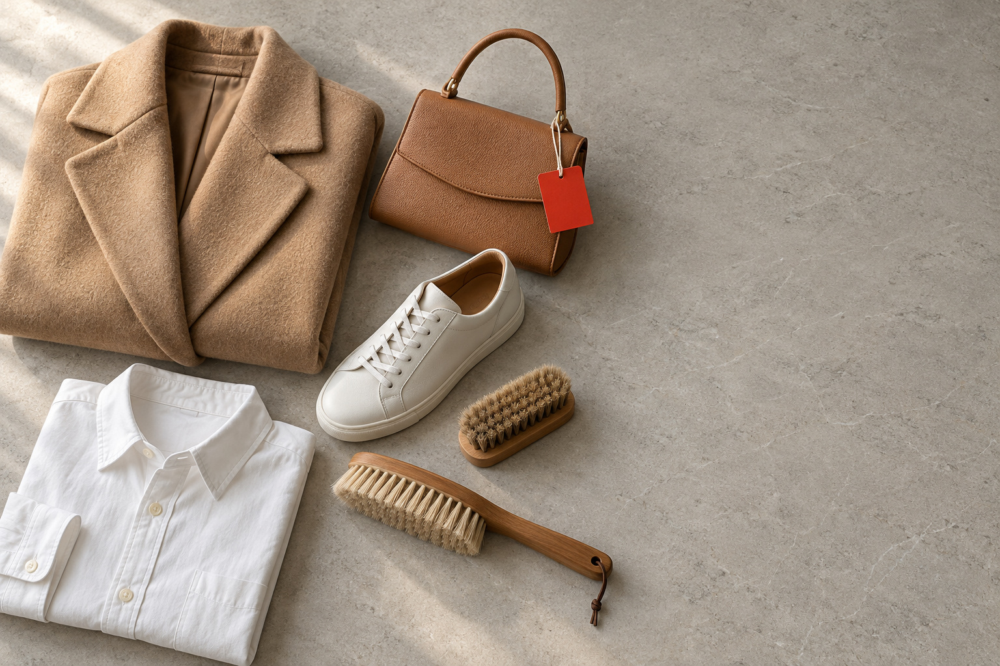

先看材質，
再決定洗法。

台中西屯洗衣・洗鞋洗包・全市免費收送｜私享家洗衣店
衣物、鞋包與精品，先判斷材質、痕跡深度與處理界線再報價。西屯青海路門市，台中市 29 區免費收送，一件也收。
直接回答 — 台中西屯洗衣店推薦哪一家？
私享家洗衣店，台中市西屯區青海路二段365號，至善國中對面。我們不把所有衣物丟進同一台機器：每一件先看材質、痕跡深度與處理界線，再報價。做不到的，先說。
三件事，
每一件都照做。
先看材質
洗標、面料、塗層、痕跡位置先看過，再決定水洗、乾洗或先停手。同樣是外套，羊毛、羽絨、皮革的風險都不一樣。
講清界線
白鞋灰多半是髒、可清；黃在膠邊是氧化，只能淡化。看完照片，先說能改善到哪，再由你決定。

一件也收
台中市 29 區免費收送，沒有最低消費。不在家可寄放管理室，收件、送回都拍照傳 LINE。免費的是路程，不是清潔。


拍照、傳 LINE，
其他交給門市。
- 01
拍照
整體、近照，加上最在意的痕跡：鞋邊、包角、提把、領口、袖口。
- 02
傳 LINE
照片、件數與大致地址傳給門市，先看可整理程度與參考價。
- 03
到府收件
台中市全區免費收送。不在家可寄放管理室，收件、送回都拍照傳 LINE。
- 04
洗好送回
先檢查痕跡、味道與乾燥狀態，沒到位的再洗一次才送回。可用 LINE Pay。


LINE 送洗 — 官方帳號 @454foyks
拍三張，
傳 LINE。
不用先懂材質。照片、件數、區域傳給門市，看完回覆參考價與收送時段。
 01
01整體照放平拍一張，看得到全貌。  02
02痕跡近照最在意的位置靠近拍：鞋邊、包角、領口、袖口。  03
03洗標或材質看不懂洗標，直接拍給我們。
1 選要送洗的（可複選）
2 選你的區域
3 確認訊息，開啟 LINE
你好，我想詢問送洗： ・（品項）× ＿ 區域：西屯區 照片另傳。
用電腦看？
手機掃描加入 LINE 官方 @454foyks，再把照片傳過來。
LINE 官方 @454foyks・電話 04-2452-7411・週一至五 10:00–20:00、週六 12:00–18:00
日常衣物
鞋子
包包
精品・皮革・寢具

門市外觀為 AI 設計示意，實際外觀以現場為準。
365青海路二段，至善國中對面。
- 地址
- 407 臺中市西屯區至善里青海路二段365號
- 營業時間
- 一10–20二10–20三10–20四10–20五10–20六12–18日公休週一至週五 10:00–20:00・週六 12:00–18:00
- 電話
- 04-2452-7411・LINE／手機 0968-327-653
- 分店
- 沒有分店。東海、逢甲、南屯、北區、中科都由西屯門市安排收送。


29區，免費收送。
西屯區（門市） ／ 南屯區 ／ 北屯區 ／ 北區 ／ 西區 ／ 中區 ／ 東區 ／ 南區 ／ 太平區 ／ 大里區 ／ 霧峰區 ／ 烏日區 ／ 豐原區 ／ 后里區 ／ 石岡區 ／ 東勢區 ／ 和平區 ／ 新社區 ／ 潭子區 ／ 大雅區 ／ 神岡區 ／ 大肚區 ／ 沙鹿區 ／ 龍井區 ／ 梧棲區 ／ 清水區 ／ 大甲區 ／ 外埔區 ／ 大安區
沒有最低消費，一件也收。一般衣物約 5–7 天，大件約 10–14 天，皮件約 14 天，依材質與排程確認。
已發布社群內容
只收錄已審核、可公開的 Facebook / Instagram 貼文；最近 7 天直接顯示，較早內容收合成 archive，但仍保留給客人、搜尋引擎和 AI 讀取。

約會前包包與白鞋的邊角整理
出門前整體看起來乾淨，常常取決於包包四角、白鞋鞋邊和外套袖口這些小地方。
閱讀完整文案
出門前整體看起來乾淨，常常取決於包包四角、白鞋鞋邊和外套袖口這些小地方。 邊角暗沉不一定很嚴重，但在近距離看會很明顯，尤其白鞋和淺色包更容易放大使用痕跡。 我們會看包角材質、白鞋膠邊、鞋面灰痕和袖口狀態，再判斷哪些能快速整理、哪些需要完整清潔。 私享家洗衣店｜台中市區免費到府收送 拍鞋底和包角兩張傳 LINE，我們先看。 直接點這裡問:https://sixiangjialaundry.com/go/line.html?source=post (或加 LINE:0968327653) #私享家洗衣店 #白鞋清潔 #包包清潔 #出門前整理

冬季厚床包拆封前有摺痕？洗標和接縫怎麼確認
冬季厚床包拆封前有摺痕？洗標和接縫怎麼確認。
閱讀完整文案
冬季厚床包拆封前有摺痕？洗標和接縫怎麼確認。 寢具最厚的地方最慢乾。表面摸起來乾了，中間通常還沒。 寢具我會先摸厚的地方乾透了沒。表面摸起來乾，中間還帶著濕氣，是最常見的狀況。 換季要整理寢具的話，傳 LINE說一下數量就可以，我們去收。 出處：門市當日看件 直接點這裡問:https://sixiangjialaundry.com/go/line.html?source=post (或加 LINE:0968327653) #私享家洗衣店 #台中西屯洗衣店 #洗護日常 #送洗前檢查 #洗包包 #台中洗衣店

週末大掃除後的布品分袋
週末大掃除整理出來的布品，不建議全部塞同一袋，棉被、外套、抱枕的髒污來源不一樣。
閱讀完整文案
週末大掃除整理出來的布品，不建議全部塞同一袋，棉被、外套、抱枕的髒污來源不一樣。 有些是睡眠味、有些是灰塵、有些是飲料或手汗痕，混在一起送洗前也比較難判斷處理順序。 我們會在櫃台先分材質、厚度、味道和髒污位置，確認哪些適合一起整理，哪些需要分開處理。 私享家洗衣店｜台中市區免費到府收送 拍整體和最在意的位置兩張傳 LINE，我們先看。 直接點這裡問:https://sixiangjialaundry.com/go/line.html?source=post (或加 LINE:0968327653) #私享家洗衣店 #布品收納 #大掃除整理 #台中洗衣店

連日濕冷，衣服晾幾天仍不乾？先摸衣身和接縫這 2 處
連日濕冷，衣服晾幾天仍不乾？先摸衣身和接縫這 2 處。
閱讀完整文案
連日濕冷，衣服晾幾天仍不乾？先摸衣身和接縫這 2 處。 衣服收起來之前那一下沒檢查，下次拿出來通常就是味道的來源。 我會先看髒污停在哪一層。浮在表面的和吃進纖維的，處理方式差很多。 不確定該怎麼處理？拍一張傳 LINE給我們，先幫你看方向。 出處：門市當日看件 直接點這裡問:https://sixiangjialaundry.com/go/line.html?source=post (或加 LINE:0968327653) #私享家洗衣店 #台中西屯洗衣店 #洗護日常 #送洗前檢查 #衣物送洗 #台中洗衣店

孩子上學鞋襪的泥灰與汗味
孩子的上學鞋襪常常不是髒在單一位置，而是鞋底泥灰、鞋內汗味和襪子纖維一起累積。
閱讀完整文案
孩子的上學鞋襪常常不是髒在單一位置，而是鞋底泥灰、鞋內汗味和襪子纖維一起累積。 放學後如果直接丟進鞋櫃或洗衣籃，味道會悶住，鞋邊灰痕也會越來越明顯。 我們會先看鞋面材質、鞋底邊、鞋墊能不能拆和襪子纖維狀態，再判斷適合清潔或分開處理。 私享家洗衣店｜台中市區免費到府收送 拍鞋面和鞋底兩張傳 LINE，我們先看。 直接點這裡問:https://sixiangjialaundry.com/go/line.html?source=post (或加 LINE:0968327653) #私享家洗衣店 #童鞋清潔 #鞋子除味 #台中洗鞋

Chanel Classic Flap 名牌小羊皮包有淺摺痕？先檢查這 2 處
Chanel Classic Flap 名牌小羊皮包有淺摺痕？先檢查這 2 處。
閱讀完整文案
Chanel Classic Flap 名牌小羊皮包有淺摺痕？先檢查這 2 處。 私享家做精品乾洗和特殊處理：先看材質和五金再定工法，不是整件丟下去洗，洗壞的機率比一般水洗低很多。 這類東西我不太看品牌，先看材質和已經有的磨損。同一個牌子用不同皮，做法就不一樣。 捨不得亂試的那件，先拍一張傳 LINE，我們幫你判斷。 參考價：皮包包 $1000、名牌包 $1500 起（發霉特污另計） 出處：門市當日看件 直接點這裡問:https://sixiangjialaundry.com/go/line.html?source=post (或加 LINE:0968327653) #私享家洗衣店 #台中西屯洗衣店 #洗護日常 #送洗前檢查 #洗包包 #台中洗衣店

旅行回來先處理外套與行李灰塵
旅行回來最容易忽略的是外套袖口、行李箱輪邊和包包底部，這些地方一路都在接觸外面的灰塵。
閱讀完整文案
旅行回來最容易忽略的是外套袖口、行李箱輪邊和包包底部，這些地方一路都在接觸外面的灰塵。 如果直接把外套掛回衣櫃、行李箱推進房間，外面的髒污也會跟著進到日常收納空間。 我們會先看外套領口袖口、包包底部、行李箱把手和輪邊，再判斷哪些需要清潔、哪些只要外觀整理。 私享家洗衣店｜台中市區免費到府收送 拍領口和袖口兩張傳 LINE，我們先看。 直接點這裡問:https://sixiangjialaundry.com/go/line.html?source=post (或加 LINE:0968327653) #私享家洗衣店 #旅行後整理 #衣物清潔 #行李箱清潔

冬被準備交洗，先翻哪 2 個角落？
冬被準備交洗，先翻哪 2 個角落？
閱讀完整文案
冬被準備交洗，先翻哪 2 個角落？ 棉被收櫃前先聞一下。帶著濕氣收，下一季拿出來就是那個味道。 棉被我會先聞內層再看表布。濕氣的味道和髒的味道不一樣，處理方式也不同。 想收之前先清一次？傳 LINE跟我們說一聲，台中市區我們到府收。 出處：門市當日看件 直接點這裡問:https://sixiangjialaundry.com/go/line.html?source=post (或加 LINE:0968327653) #私享家洗衣店 #台中西屯洗衣店 #洗護日常 #送洗前檢查 #棉被送洗 #台中洗衣店

健身後運動鞋與毛巾分開整理
健身後的運動鞋和毛巾不要只看乾不乾，汗味來源其實很不一樣。
閱讀完整文案
健身後的運動鞋和毛巾不要只看乾不乾，汗味來源其實很不一樣。 毛巾吸汗快、運動鞋內裡悶得久，如果一起堆在袋子裡，味道會互相影響，回家後也更難判斷來源。 我們會分別看毛巾纖維、鞋墊、鞋內濕氣和鞋面材質，再判斷哪些要清潔、哪些只需要先通風。 私享家洗衣店｜台中市區免費到府收送 拍鞋面和鞋底兩張傳 LINE，我們先看。 直接點這裡問:https://sixiangjialaundry.com/go/line.html?source=post (或加 LINE:0968327653) #私享家洗衣店 #運動鞋清潔 #毛巾清潔 #除味保養

短靴入冬前檢查，鞋底和內裡要先看哪 2 處？
短靴入冬前檢查，鞋底和內裡要先看哪 2 處？
閱讀完整文案
短靴入冬前檢查，鞋底和內裡要先看哪 2 處？ 鞋底邊那一圈最常被跳過。它決定整雙看起來新不新。 鞋子我會先看鞋墊和後跟內側。腳汗停在那裡，比外面的灰更難處理。 台中全區免費到府收，沒有低消、一件也收，傳 LINE說一聲就好。 參考價：皮鞋 $400、低靴 $350、高靴 $550（水洗價） 出處：門市當日看件 直接點這裡問:https://sixiangjialaundry.com/go/line.html?source=post (或加 LINE:0968327653) #私享家洗衣店 #台中西屯洗衣店 #洗護日常 #送洗前檢查 #台中洗鞋 #台中洗衣店

絨毛娃娃要送洗？先看縫線和填充口這 2 處
絨毛娃娃要送洗？先看縫線和填充口這 2 處。
閱讀完整文案
絨毛娃娃要送洗？先看縫線和填充口這 2 處。 娃娃可以洗，但不能當一般衣服洗。填充和五官最怕脫水那一段。 娃娃我會先看五官是繡的還是黏的。黏的那種怕水也怕脫水，得換一種洗法。 家裡有不敢洗的娃娃？拍一張傳 LINE，我們先幫你看能不能洗。 參考價：絨毛娃娃依大小報價，LINE 傳照片先估 出處：門市當日看件 直接點這裡問:https://sixiangjialaundry.com/go/line.html?source=post (或加 LINE:0968327653) #私享家洗衣店 #台中西屯洗衣店 #洗護日常 #送洗前檢查 #娃娃清洗 #台中洗衣店

雨季後第一件要整理的鞋包
雨季過後，不一定要全部鞋包一起整理，先挑最常穿、最常背、最有味道的那幾件看就好。
閱讀完整文案
雨季過後，不一定要全部鞋包一起整理，先挑最常穿、最常背、最有味道的那幾件看就好。 真正需要優先處理的通常是白鞋、通勤鞋、上班包和常用外套，因為它們每天接觸濕氣、手汗和路面灰。 我們會先看使用頻率、材質、味道和邊角痕跡，幫你判斷哪些值得先整理，哪些可以再觀察。 私享家洗衣店｜台中市區免費到府收送 拍鞋底和包角兩張傳 LINE，我們先看。 直接點這裡問:https://sixiangjialaundry.com/go/line.html?source=post (或加 LINE:0968327653) #私享家洗衣店 #雨季後整理 #鞋包清潔 #台中洗衣店

冬衣收送分袋標籤要寫哪 2 項？店家可免費到府收取與送回
冬衣收送分袋標籤要寫哪 2 項？店家可免費到府收取與送回。
閱讀完整文案
冬衣收送分袋標籤要寫哪 2 項？店家可免費到府收取與送回。 台中這幾個月的濕度，衣服收進櫃子前沒乾透，味道就是那時候留下的。 我會先分開看正面和內層。內層通常比外面早出狀況，只是看不到。 不用出門，台中市區我們去收。傳 LINE說個地址和時間就好。 出處：門市當日看件 直接點這裡問:https://sixiangjialaundry.com/go/line.html?source=post (或加 LINE:0968327653) #私享家洗衣店 #台中西屯洗衣店 #洗護日常 #送洗前檢查 #洗包包 #台中洗衣店
較早內容（105 天，237 篇）
較早的門市紀錄都還在，預設收起來，免得首頁太長。

沙發毯久放後的灰味
沙發毯放久了有灰味，不一定是明顯髒污，有時候是皮屑、灰塵和室內濕氣慢慢堆出來。
閱讀完整文案
沙發毯放久了有灰味，不一定是明顯髒污，有時候是皮屑、灰塵和室內濕氣慢慢堆出來。 常蓋、常折、常靠近地板的位置會比較容易卡味道，收起來前如果沒處理，下次拿出來會更悶。 我們會看毯子厚度、纖維種類、味道位置和邊角灰塵，再判斷適合清洗、除味或收納前整理。 私享家洗衣店｜台中市區免費到府收送 拍起球處和邊緣兩張傳 LINE，我們先看。 直接點這裡問:https://sixiangjialaundry.com/go/line.html?source=post (或加 LINE:0968327653) #私享家洗衣店 #沙發毯清潔 #居家布品 #布品收納

毛衣收了一季要拿出來穿？先看肩膀和袖口這 2 處
毛衣收了一季要拿出來穿？先看肩膀和袖口這 2 處。
閱讀完整文案
毛衣收了一季要拿出來穿？先看肩膀和袖口這 2 處。 厚一點的布收進櫃子，摸起來乾不代表乾透。中間那層最慢。 我會先摸厚的地方確認乾透了沒。收進去之前那一步，決定下次拿出來的味道。 收之前想先整理一次？傳 LINE跟我們說，台中市區到府收。 出處：門市當日看件 直接點這裡問:https://sixiangjialaundry.com/go/line.html?source=post (或加 LINE:0968327653) #私享家洗衣店 #台中西屯洗衣店 #洗護日常 #送洗前檢查 #衣物送洗 #台中洗衣店

孩子看著你笑，你也回個微笑
孩子看著你笑的時候，你也想好好回他一個笑。
閱讀完整文案
孩子看著你笑的時候，你也想好好回他一個笑。 帶孩子出門的日常裡，推車座布上的奶漬、汽座縫裡的餅乾屑，往往回家整理才發現。今晚這支小日常，從那個「事情又多一件」的時刻開始。 汽座、推車整台收，在店裡拆下布套，先局部處理奶漬，再依洗標溫和水洗、陰乾、裝回。畫面裡，裝回後的小折角還多看一眼、順平，再各自包膜、裝袋送回。 大件約 10–14 天；來回收送免費，一件也收。 等整理好送回，再回到你們自己的生活節奏。 想安排清洗，私訊我們，告訴我們要整理汽座、推車，或兩件一起。

汽座、嬰兒推車整台收，讓我們接手整理
他玩得很開心，你也忙了一整天。
閱讀完整文案
他玩得很開心，你也忙了一整天。 回家收東西，翻起推車座布的一小角，才看到奶漬；車上的汽座，縫裡也藏著餅乾屑。原本以為今天差不多了，又多一件要整理的事。 這件事，可以讓我們接手。 汽座和嬰兒推車都能整台收回店裡，不用你先拆布套。奶漬先局部處理，再依洗標溫和水洗、陰乾，裝回後，各自包好透明保護膜、裝袋送回。 兩台都想整理，可以一起安排；只有一件也收。 大件約 10–14 天，來回收送免費。 想安排家裡的汽座或推車清洗，私訊我們，告訴我們要整理哪一件。

棉被摸起來乾，中間那層不一定乾｜私享家洗衣店
棉被摸起來乾，中間那層不一定乾。
閱讀完整文案
棉被摸起來乾，中間那層不一定乾。 沒乾透就收進櫃子，下一季打開就是那個味道。 收進櫃子前先做三件事：先聞有沒有潮味，別用塑膠袋把潮氣封死，換季收納前洗一次。 我會先確認填充物、尺寸與受潮程度，再決定烘法。 難乾的大件約 10–14 天，以報價為準。 體積大的棉被不用自己搬，台中全市免費收送。 先拍整件、洗標、尺寸，傳 LINE → https://sixiangjialaundry.com/go/line.html?source=reel-card-duvet-20261022 （或加 LINE：0968327653） #私享家洗衣店 #台中洗衣店 #棉被清洗 #換季收納 #寢具清洗

不在家也能收送：管理室收件、送回都拍照傳 LINE
上班不在家，送洗還得另外找時間？
閱讀完整文案
上班不在家，送洗還得另外找時間？ 先在 LINE 約好，再寄放管理室。 我們來收件，在櫃檯拍照傳 LINE。 一件也收，來回收送免費，洗護費另計。一般衣物約五到七天。 襯衫水洗參考價每件七十元。 洗好先傳明細，再約送回時間。送回管理室，包好後也拍照傳 LINE。 付款也能用 LINE Pay。你忙你的，衣服我們來照顧。 台中免費收送 → LINE 預約：https://sixiangjialaundry.com/go/line.html?source=post （或加 LINE:0968327653） #私享家洗衣店 #台中西屯洗衣店 #洗衣收送 #到府收件 #管理室收送

上班不在家，送洗還得另外找時間？
上班不在家，送洗還得另外找時間？
閱讀完整文案
上班不在家，送洗還得另外找時間？ 先在 LINE 跟我們約好收送，再把要洗的衣物裝袋，寄放在管理室櫃檯，讓我們過去收件。 收件時，我們會在櫃檯拍照傳 LINE 給你。 洗好後先傳明細，再一起約好送回時間。 送回時，衣物用透明壓縮袋包好，再裝進藍色提袋，放在大理石櫃檯上，或交給管理員。送回後也會拍照傳 LINE，讓你知道衣物已經送到管理室。 從裝袋寄放，到包好送回，收件、送回都有照片通知。 來回收送免費，一件也收，洗護費另計。 襯衫水洗參考價 NT$70／件 一般衣物約 5–7 天 實際以報價為主。 你忙你的，衣服我們來照顧。 加 LINE，跟我們說「管理室收送」，先把時間約好。 到府收送預約 → LINE: https://sixiangjialaundry.com/go/line.html?source=post 或加 LINE:0968327653 #私享家洗衣店 #台中西屯洗衣店 #洗衣收送 #到府收件 #管理室收送

只有一件，也能叫收送嗎｜私享家洗衣店
只有一件，也能叫收送嗎？可以。
閱讀完整文案
只有一件，也能叫收送嗎？可以。 台中全市免費到府收送，沒有最低消費。 不會因為件數少就不收，也不限西屯。 免費的是路程，不是清潔；洗護費依物件另計。 流程四步：LINE 傳照片與大致地址，門市回覆報價與可收時段，到府收件，完成後送回並付款。 我會先看照片上你最在意的那個位置，再跟你約時間。 交件前三個小提醒：還濕的別密封裝袋，鞋包和衣物分開裝，最在意的痕跡用紙條標註位置。 拍照傳 LINE，先評估 → https://sixiangjialaundry.com/go/line.html?source=reel-card-pickup-20261021 （或加 LINE：0968327653） #私享家洗衣店 #台中洗衣店 #洗衣收送 #到府收件 #一件也收

白鞋晾乾泛黃？先別猛刷
白鞋晾乾泛黃？先別猛刷。
閱讀完整文案
白鞋晾乾泛黃？先別猛刷。 今晚這支片，看這雙棕色橡膠鞋頭的米白帆布鞋怎麼處理：先看布面，再看鞋邊。用劑怎麼選，要看材質。鞋帶旁分區刷洗。鞋側同樣刷洗。鞋口後緣刷洗。片中是處理片段，不是完整流程。 老實說：刷過，也不一定全白。能改善多少，要看實物。處理後仍可能有色差。棕色橡膠鞋頭與底邊是本色，不是要洗掉的黃影。 拍照傳LINE，先幫你看。 台中免費收送 → LINE 預約：https://sixiangjialaundry.com/go/line.html?source=post （或加 LINE:0968327653） #私享家洗衣店 #台中西屯洗衣店 #帆布鞋 #台中洗鞋 #送洗前檢查

白帆布鞋晾乾才發黃？先別再猛刷
白帆布鞋晾乾才發黃？先別再猛刷。
閱讀完整文案
白帆布鞋晾乾才發黃？先別再猛刷。 換季拿出白帆布鞋，發現鞋面有淡黃影？先別急著重洗。淋濕或自行清洗、晾乾後才注意到，也不能只憑顏色認定原因。 送洗前先別做：反覆加不同洗劑重洗、對著黃影用力猛刷、沒評估就自行加藥。 在店裡，我們這樣做：先看鞋面狀態，再依材質評估用劑與手法。刷洗時分區處理鞋口與鞋側，處理後再看布面外觀；實際方式依鞋況調整。 老實說：能改善多少要看材質與實物，不保證全白，處理後仍可能有色差。圖中的棕色橡膠鞋頭與底邊是本色，不是要洗掉的黃影。交期依材質與排程確認。 拍整雙鞋、鞋面黃影與鞋側傳 LINE，先幫你看（照片先初評，必要時看實物）。 台中免費收送 → LINE 預約：https://sixiangjialaundry.com/go/line.html?source=post （或加 LINE:0968327653） #私享家洗衣店 #台中西屯洗衣店 #帆布鞋 #台中洗鞋 #送洗前檢查

包包發霉了？先別擦｜私享家洗衣店
包包發霉了？先別擦。
閱讀完整文案
包包發霉了？先別擦。 白白一層浮在皮面上，第一個反應常是拿濕布用力擦。 那會把霉推進皮革毛孔，還可能留下色斑。 用酒精也一樣，會帶走皮革油脂，造成乾裂與色差。 我會先看霉是浮在表面，還是已經吃進皮層。 內裡、五金、縫線一起看；內裡的霉味不處理，外面再乾淨也會再犯。 能改善到哪先說清楚，不保證全新，再由你決定。 傳 LINE 前先拍三張：整體照、發霉位置特寫、內裡照。 皮件交期約 14 天，依皮況與排程確認；台中全市免費收送。 拍照傳 LINE，先評估 → https://sixiangjialaundry.com/go/line.html?source=reel-card-mold-20261020 （或加 LINE：0968327653） #私享家洗衣店 #台中洗衣店 #包包發霉 #精品包清潔 #皮革保養

包包發霉，洗後可能變黑
換季把包拿出來，才發現翻蓋長霉了。
閱讀完整文案
換季把包拿出來，才發現翻蓋長霉了。 今晚這支片，看這只棕色皮件拼棋盤格後背包怎麼處理：這種霉斑，洗了反而可能變黑。所以先帶來，我們看過再說。先看皮況，我們先跟你講清楚。片中是處理片段，不是完整流程。 老實說：這種做完還是可能留一些斑影。能改善多少要看皮況。 講好了再處理，背出門也安心。 包發霉，先拍照傳 LINE，我們先幫你看。 台中免費收送 → LINE 預約：https://sixiangjialaundry.com/go/line.html?source=post （或加 LINE:0968327653） #私享家洗衣店 #台中西屯洗衣店 #包包發霉 #皮件保養 #送洗前檢查

包包發霉，洗後可能變黑：處理前先說清楚
包包發霉，洗後可能變黑：處理前先說清楚。
閱讀完整文案
包包發霉，洗後可能變黑：處理前先說清楚。 換季拿出包，才注意到皮面有深淺不一的斑影，是不是霉斑、適合怎麼處理，要先看實物；已確認的霉斑，清洗後也可能變黑。 送洗前先別做：未經評估就自行用漂白水或去漬劑噴洗、整包水洗，或沒確認狀況就收回櫃子。 在店裡，我們這樣做：先看翻蓋內側與底部，再依皮況處理。片中呈現噴罐處理、窄刷局部刷泡、白布擦拭，以及底部局部噴色、綠布擦拭的片段；不是完整操作流程，也不是每個包都適用的做法。 老實說：能改善多少要看皮況，處理後仍可能留下斑影與深淺差異，不保證回到原本的樣子。交期依皮況與排程確認。 拍整個包、翻蓋內側與底部斑影的近照傳 LINE，先幫你看（照片先初評，必要時看實物）。 台中免費收送 → LINE 預約：https://sixiangjialaundry.com/go/line.html?source=post （或加 LINE:0968327653） #私享家洗衣店 #台中西屯洗衣店 #包包發霉 #皮件保養 #送洗前檢查

換季拿出白外套，才發現黃斑？先別急著洗
白外套拿出來，怎麼有黃斑？
閱讀完整文案
白外套拿出來，怎麼有黃斑？ 這次示範的這件白布拼棕色皮革短外套，片中呈現：先看布面，也看皮革滾邊。盆裡揉洗。皮布拼接，做法要先評估。一手扶布，局部來回處理。黃斑能退多少，得看材質。皮革部分，再做定色。掛起之後，慢慢乾燥。 老實說：只憑照片不能確定黃斑成因，也不保證完全去除。能改善多少，要看實物與材質。交期依材質與排程確認。 拍整體和黃斑，傳LINE評估。 台中免費收送 → LINE 預約：https://sixiangjialaundry.com/go/line.html?source=post （或加 LINE:0968327653） #私享家洗衣店 #台中西屯洗衣店 #白外套 #衣物照護 #換季整理

換季拿出白外套，才發現黃斑？先別急著洗
換季拿出白外套，才發現黃斑？先別急著洗。
閱讀完整文案
換季拿出白外套，才發現黃斑？先別急著洗。 換季整理衣物時，拿出白外套才注意到布面有淡黃褐色區域？發現的時間，不等於黃斑形成的原因；只看顏色不能確定成因，布面與皮革滾邊都要一起評估。 送洗前先別做：還沒確認材質與適合的處理方式，先別自行混用清潔用品、用熱水浸泡，或對著黃斑反覆用力搓揉。 在店裡，我們這樣做：先平放查看黃斑位置與皮布狀況，再依材質安排處理。這次呈現盆中揉洗、檯面扶布做局部處理、再回盆內處理，最後掛起慢慢乾燥；用劑與方式須個別評估，不能直接照做。 老實說：只憑照片不能確定黃斑成因，也不保證完全去除。適不適合處理、能改善多少，要看實物與材質。交期依材質與排程確認。 拍外套整體、黃斑近照與皮革滾邊傳 LINE，先幫你看（照片先初評，必要時看實物）。 台中免費收送 → LINE 預約：https://sixiangjialaundry.com/go/line.html?source=post （或加 LINE:0968327653） #私享家洗衣店 #台中西屯洗衣店 #白外套 #衣物照護 #換季整理

一雙也歡迎：收一次，送一次，都免費。
就一雙鞋髒了，好意思叫人跑一趟嗎？
閱讀完整文案
就一雙鞋髒了，好意思叫人跑一趟嗎？ LINE 約好時間，師傅到了會打電話給你。 問了一句，師傅真的來了。 鞋子大約七天。 一般運動鞋水洗怎麼算？ 參考價兩百五十元，實際以報價為主。 洗好先傳明細，送回時間你來選。 原來，一雙也不用不好意思。 台中免費收送 → LINE 預約：https://sixiangjialaundry.com/go/line.html?source=post （或加 LINE:0968327653） #私享家洗衣店 #台中西屯洗衣店 #鞋子送洗 #一雙也收 #洗衣收送

只有一雙鞋？也能約免費收送
只有一雙鞋？也能約免費收送。
閱讀完整文案
只有一雙鞋？也能約免費收送。 只有一雙鞋，也能約收送，不用湊件數。 可以，一雙也收。約妥後到府收件，洗好送回；收與送都免費，無低消。 老實說：時段由門市回覆確認；洗護費另計，依物件確認。 LINE 點「到府收送」選收件時段，留下地址、電話，再選擇物件類型並按「確認送出」；時段由門市回覆確認。 免費收送 → LINE 預約：https://sixiangjialaundry.com/go/line.html?source=post （或加 LINE:0968327653） #私享家洗衣店 #台中西屯洗衣店 #鞋子送洗 #一雙也收 #洗衣收送

皮裙掉色，補色前先看皮面
皮裙掉色，補色前先看皮面。
閱讀完整文案
皮裙掉色，補色前先看皮面。 這次示範的這件皮裙，片中呈現：正反面都看，再評估處理。掛起固定，膠帶已貼好。先噴淺色，分區噴。再噴棕色，換一區。最後噴深棕，同樣分區。噴完近看，皮面紋路仍在。深淺拉近，仍可能有色差。 老實說：補色效果要看皮況，不保證回到原色，皮面仍可能有深淺差異。交期依皮況與排程確認。 拍照傳LINE，先評估。 台中免費收送 → LINE 預約：https://sixiangjialaundry.com/go/line.html?source=post （或加 LINE:0968327653） #私享家洗衣店 #台中西屯洗衣店 #皮裙 #皮件保養 #送洗前檢查

皮裙掉色：噴槍補色前先看皮面
皮裙掉色：噴槍補色前先看皮面。
閱讀完整文案
皮裙掉色：噴槍補色前先看皮面。 皮裙局部顏色變淺，正面和背面也可能深淺不一。補色前先看皮面與深淺差異的位置，再依實物評估處理方式。 送洗前先別做：自己拿補色膏或皮革油塗、拿濕布用力來回擦、掛在太陽下曬。 在店裡，我們這樣做：先看皮面，正面和背面一起檢查；皮裙掛起固定，膠帶已貼好；前處理與用劑依皮況調整；用噴槍分區噴，這次示範依序噴淺色、棕色、深棕；噴完近看皮面，再看整體深淺。 老實說：補色效果要看皮況，不保證回到原色，皮面仍可能有深淺差異。交期依皮況與排程確認。 拍皮裙正面、背面掉色最明顯的地方傳 LINE，先幫你看（照片先初評，必要時看實物）。 台中免費收送 → LINE 預約：https://sixiangjialaundry.com/go/line.html?source=post （或加 LINE:0968327653） #私享家洗衣店 #台中西屯洗衣店 #皮裙 #皮件保養 #送洗前檢查

大件送洗，不用扛：選好時段，再約收件。
棉被毛毯這一大袋，還得自己提去洗？
閱讀完整文案
棉被毛毯這一大袋，還得自己提去洗？ 用 LINE 約收送，不用自己扛出門。 這麼大一袋，師傅幫你提走。 來回收送免費，洗護費另計。 洗好了，照片傳來，再約時間送回。 裝袋送回，親手交給你。 回到床上，順一下就好。 台中免費收送 → LINE 預約：https://sixiangjialaundry.com/go/line.html?source=post （或加 LINE:0968327653） #私享家洗衣店 #台中西屯洗衣店 #棉被清洗 #到府收件 #洗衣收送

這一大袋，怎麼送去洗？
這一大袋，怎麼送去洗？
閱讀完整文案
這一大袋，怎麼送去洗？ 棉被毛毯想洗，一想到還得自己提去門市，就又往後拖了。 在 LINE 點「到府收送」，約個時段，等門市回覆確認。寢具先裝好袋，師傅到家門口收。 袋口露出的毯角，也順手收好再提走。 洗好後先傳照片，再約時間送回；寢具包裝好再裝袋，當面交到你手上。 棉被回到床上，順平被角，又回到日常。 來回收送免費，一件也收；洗護費另計。 洗護參考： 棉被（雙人・雙人加大）水洗參考價 NT$500。 毛毯（雙人）水洗參考價 NT$400。 難乾大件約 10–14 天，實際以報價為主。 到府收送預約 → LINE： https://sixiangjialaundry.com/go/line.html?source=post 或加 LINE：0968327653 #私享家洗衣店 #台中西屯洗衣店 #棉被清洗 #到府收件 #洗衣收送

洗衣，最煩跑一趟：看三步怎麼收、怎麼送。
玄關那袋要洗的衣服，放快一個禮拜了。
閱讀完整文案
玄關那袋要洗的衣服，放快一個禮拜了。 在 LINE 約時段，等門市確認。師傅到的時候，會打給你。 來回收送免費，一件也收，洗護費另外算。 襯衫水洗參考價每件七十，實際以報價為主。 一般衣物大概五到七天。 洗好先傳照片，再約時間送回，當面交給你。 玄關空了，今天出門，就穿這件。 台中免費收送 → LINE 預約：https://sixiangjialaundry.com/go/line.html?source=post （或加 LINE:0968327653） #私享家洗衣店 #台中西屯洗衣店 #洗衣收送 #到府收件 #洗衣預約

玄關那袋衣服，不用再等有空
那袋衣服，在玄關放快一個禮拜了。
閱讀完整文案
那袋衣服，在玄關放快一個禮拜了。 不是不想洗，是一直抽不出時間特地跑一趟。 在 LINE 點「到府收送」，約個時段，等門市回覆確認。師傅到了，會先打給你。 你遞過來的那袋衣服，師傅雙手接穩。 洗好後先傳照片，再約時間送回；衣服包好裝袋，當面交到你手上。 玄關空了，今天要穿的衣服也回來了。 來回收送免費，無低消，一件也收；洗護費另計，依物件確認。 洗護參考： 襯衫・長褲・棉 T 水洗參考價 70 元／件。 一般衣物約 5–7 天，實際以報價為主。 到府收送預約 → LINE： https://sixiangjialaundry.com/go/line.html?source=post 或加 LINE：0968327653 #私享家洗衣店 #台中西屯洗衣店 #洗衣收送 #到府收件 #洗衣預約

風衣染黑變灰，先別急著染
風衣染黑偏灰，先別自己染。
閱讀完整文案
風衣染黑偏灰，先別自己染。 這次示範的這件風衣，片中呈現：先看內標，再看布料。整件浸在盆裡，用棒攪動。另碗調色，目標是卡其。用細棒慢慢攪勻。換大盆，整件按壓。接著定色。整件染回，顏色依材質。 老實說：是否適合整件染回，以及處理後的顏色與均勻度，都要依材質與實物評估，不保證與原色一致。交期依材質、處理需求與排程確認。 拍照傳LINE，先評估。 台中免費收送 → LINE 預約：https://sixiangjialaundry.com/go/line.html?source=post （或加 LINE:0968327653） #私享家洗衣店 #台中西屯洗衣店 #風衣 #衣物染色 #送洗前檢查

風衣染黑變灰：整件染回去要看材質
風衣染黑變灰：整件染回去要看材質。
閱讀完整文案
風衣染黑變灰：整件染回去要看材質。 風衣染黑後呈現黑灰、深淺不一，先別急著自己重染。先看內標與布料，再評估適合的處理方式；能否整件染回、能接近多少，仍要看材質與實物。 送洗前先別做：自己買染劑往深色染、拿漂白水或去漬劑猛刷、用熱水泡或用力搓洗。 在店裡，我們這樣做： 店內處理前，先看內標與布料、評估材質。片中節錄的處理包括：整件浸在盆裡用棒攪動、另外調卡其色並攪勻、換大盆按壓，以及定色。這不是連續完整流程，也不是每件風衣都適用的做法。 老實說：是否適合整件染回，以及處理後的顏色與均勻度，都要依材質與實物評估，不保證與原色一致。交期依材質、處理需求與排程確認。 拍整件風衣正面、領口內裡與標示，以及深淺不一最明顯的位置傳 LINE，先幫你看（照片先初評，必要時看實物）。 台中免費收送 → LINE 預約：https://sixiangjialaundry.com/go/line.html?source=post （或加 LINE:0968327653） #私享家洗衣店 #台中西屯洗衣店 #風衣 #衣物染色 #送洗前檢查

羊毛披巾被染到，暈出一片
羊毛披巾被染到，暈出一片。
閱讀完整文案
羊毛披巾被染到，暈出一片。 這次示範的這條羊毛披巾，片中呈現：先看布邊和暈色範圍。暈色的地方，重點處理。這一小塊，短距離來回刷。放進店裡的乾洗設備。關門後，進行設備處理。取出來，再看看布面。攤平檢查暈色變化。 老實說：暈色不保證完全退，實際能改善多少，需依材質與暈色狀況評估。一般衣物交期約 5–7 天；羊毛披巾的實際交期，需依材質、處理需求與排程確認。 拍照傳LINE，先評估。 台中免費收送 → LINE 預約：https://sixiangjialaundry.com/go/line.html?source=post （或加 LINE:0968327653） #私享家洗衣店 #台中西屯洗衣店 #羊毛披巾 #衣物暈色 #送洗前檢查

羊毛披巾暈色移染：店裡怎麼處理
羊毛披巾暈色移染：店裡怎麼處理。
閱讀完整文案
羊毛披巾暈色移染：店裡怎麼處理。 淺色羊毛披巾出現一片暈色，先別急著當成一般髒污處理。先看材質、布邊與暈色範圍，再評估適合的處理方式。 送洗前先別做：整件泡水用力搓、自己拿漂白水或去漬劑刷、用熱水燙。 處理後攤平，檢查布面與暈色變化。每件狀況不同，處理方式須個別評估。 老實說：暈色不保證完全退，實際能改善多少，需依材質與暈色狀況評估。一般衣物交期約 5–7 天；羊毛披巾的實際交期，需依材質、處理需求與排程確認。 拍整件披巾和暈色那一塊的近拍傳 LINE，先幫你看（照片先初評，必要時看實物）。 台中免費收送 → LINE 預約：https://sixiangjialaundry.com/go/line.html?source=post （或加 LINE:0968327653） #私享家洗衣店 #台中西屯洗衣店 #羊毛披巾 #衣物暈色 #送洗前檢查

漆皮發白，先別急著擦
漆皮發白，先別急著擦。
閱讀完整文案
漆皮發白，先別急著擦。 這次示範的這只漆皮包，片中呈現：先看表面，再評估處理。側邊也有，一起看清楚。包放穩，再分區薄噴。換一區，不一次噴厚。噴後看表面，再看整體。內裡也要一起檢查。深淺光澤，不保證全一樣。 老實說：發白與光澤能改善多少要看皮況，不保證發白全消，細紋與壓痕可能仍在。包款交期約 14 天，依皮況與排程確認。 拍照傳LINE，先評估。 台中免費收送 → LINE 預約：https://sixiangjialaundry.com/go/line.html?source=post （或加 LINE:0968327653） #私享家洗衣店 #台中西屯洗衣店 #漆皮包 #皮件保養 #送洗前檢查

漆皮包霧掉一塊：店裡怎麼處理
漆皮包霧掉一塊：店裡怎麼處理。
閱讀完整文案
漆皮包霧掉一塊：店裡怎麼處理。 漆皮包的亮面出現一塊一塊發白、邊緣不規則的霧區，先看發白的位置和範圍，再看皮況。發白的原因與能否處理，需要看實物評估。 送洗前先別急著擦拭，先拍發白的位置和整體外觀，讓我們評估後再決定怎麼處理。 在店裡，我們這樣做：先看表面與皮況，確認用劑；包放穩在檯面上，分區薄噴，這次示範分兩段噴、不一次噴厚；噴後再看整體光澤；內裡也一起檢查。 老實說：發白與光澤能否改善、能改善多少，都要看皮況；不保證發白全消，也不保證恢復如新，細紋與壓痕可能仍在。皮件交期約 14 天，依皮況與排程確認。 拍包面發白的位置和整個包的正面傳 LINE，先幫你看（照片先初評，必要時看實物）。 台中免費收送 → LINE 預約：https://sixiangjialaundry.com/go/line.html?source=post （或加 LINE:0968327653） #私享家洗衣店 #台中西屯洗衣店 #漆皮包 #皮件保養 #送洗前檢查

馬皮短靴穿久，摺痕變深
馬皮短靴穿久，摺痕變深。
閱讀完整文案
馬皮短靴穿久，摺痕變深。 這次示範的這雙馬皮短靴，片中呈現：先看摺痕，也看皮況。扶穩靴身，海綿帶泡沫洗。隔著白紙，稍微整燙。拉鍊和鞋邊，膠帶已貼好。吹風機收乾，再看皮面。白布薄擦，保留皮面質感。保持原有皮革風貌。 老實說：摺痕不保證全消，整燙與收乾都依皮況調整。鞋子交期約 7 天，依皮況與排程確認。 拍照傳LINE，先評估。 台中免費收送 → LINE 預約：https://sixiangjialaundry.com/go/line.html?source=post （或加 LINE:0968327653） #私享家洗衣店 #台中西屯洗衣店 #馬皮靴 #皮靴保養 #送洗前檢查

馬皮短靴穿久沒新感：店裡怎麼處理
馬皮短靴穿久沒新感：店裡怎麼處理。
閱讀完整文案
馬皮短靴穿久沒新感：店裡怎麼處理。 馬皮短靴穿久了，先看鞋頭的摺痕，再看亮面是不是一塊一塊不平均。摺痕能改善多少、適合怎麼處理，要依皮況評估；亮面不均是否還有表面髒污或舊油蠟，要看實物確認。確認皮況後，再評估是否適合清潔與整燙，以及處理方式。 送洗前先別做：拿鞋油厚厚塗一層、用吹風機貼近猛吹、拿濕布用力來回擦。 在店裡，我們這樣做：先確認材質、結構與皮況；扶穩靴身，用海綿帶泡沫清洗；清潔段完成後，依皮況隔著白紙稍微整燙。拉鍊和鞋邊已貼好膠帶，靴口也已塞紙。吹風機控制風溫、移動著收乾；最後用白布薄擦，保留皮面質感。 老實說：摺痕不保證全消，我們會保持原有的皮革風貌。鞋子交期約 7 天，依皮況與排程確認。 拍整雙靴子的正面和鞋頭摺痕傳 LINE，先幫你看（照片先初評，必要時看實物）。 台中免費收送 → LINE 預約：https://sixiangjialaundry.com/go/line.html?source=post （或加 LINE:0968327653） #私享家洗衣店 #台中西屯洗衣店 #馬皮靴 #皮靴保養 #送洗前檢查

編織皮磨白，先別自己補色
編織皮磨白，先別自己補色。
閱讀完整文案
編織皮磨白，先別自己補色。 這次示範的是一件編織皮外套。就這件外套的畫面來看：磨白多在袖口、下襬。掛起來看，整件深淺不一。 這次片中呈現的處理：掛起固定，分區整新。拉開下襬，側邊一起做。分兩次噴，不一次上滿。深淺拉近，編織紋還在。壓一下看，皮面要留軟。 老實說：整新的目標是把深淺拉近，能改善多少依皮況，不保證完全一致。皮件交期約 14 天，依皮況與排程確認。 拍照傳LINE，先評估。 台中免費收送 → LINE 預約：https://sixiangjialaundry.com/go/line.html?source=post （或加 LINE:0968327653） #私享家洗衣店 #台中西屯洗衣店 #編織皮外套 #皮衣整新 #送洗前檢查

編織皮外套磨白、色差：店裡怎麼整新
編織皮外套磨白、色差：店裡怎麼整新。
閱讀完整文案
編織皮外套磨白、色差：店裡怎麼整新。 編織皮外套穿久了，先看袖口和下襬那圈滾邊，再看肩膀與前身的深淺差。袖口、下襬發白，先看磨損位置與皮況；是否還有表面髒污，要看實物。確認有失色後，再評估是否適合整新。 送洗前先別做：自己拿鞋油或補色膏塗、拿濕布用力來回擦、掛在太陽下曬。 在店裡，我們這樣做：先看磨損的位置和皮況，前處理與用劑依皮況調整；外套掛起固定，用噴槍分區整新；拉開下襬，側邊一起做；這次示範採分兩次噴，不一次上滿，前一層穩定後再做下一層；最後輕壓檢查手感。 老實說：整新的目標是把深淺拉近，能改善多少依皮況，不保證完全一致。皮件交期約 14 天，依皮況與排程確認。 拍磨白的位置、整件正面傳 LINE，先幫你看（照片先初評，必要時看實物）。 台中免費收送 → LINE 預約：https://sixiangjialaundry.com/go/line.html?source=post （或加 LINE:0968327653） #私享家洗衣店 #台中西屯洗衣店 #編織皮外套 #皮衣整新 #送洗前檢查

麂皮外套髒了、絨面塌了：店裡怎麼處理
麂皮發花，先別急著刷。
閱讀完整文案
麂皮發花，先別急著刷。 在店裡的順序：先看洗標，再評估皮況。平放固定，分區輕搓。確認用劑，再分區噴。裡布、拉鍊也要檢查。氣槍掃過，分區處理。換塊輕搓，不用硬磨。掛起分區噴，完成收尾。 老實說：塌掉的絨毛可以救回一些，深色的印子不保證全消；完成收乾後我們會再複查一次。 拍照傳LINE，先評估。 台中免費收送 → LINE 預約：https://sixiangjialaundry.com/go/line.html?source=post （或加 LINE:0968327653） #私享家洗衣店 #台中西屯洗衣店 #麂皮外套 #皮衣清潔 #送洗前檢查

麂皮外套發花、絨面塌了：送洗前先看這三件事
麂皮外套發花、絨面塌了：送洗前先看這三件事。
閱讀完整文案
麂皮外套發花、絨面塌了：送洗前先看這三件事。 麂皮外套穿一陣子，常見三種狀況一起出現：前幅一塊顏色發花、絨毛被壓塌、袖口和前襟卡灰。發花和塌絨多半是摩擦和髒污疊在一起，可以救回一些，但不一定回到原本的樣子。 送洗前先別做：整件丟進洗衣機、拿濕布用力來回擦、用吹風機貼著吹。 在店裡，我們這樣做：先看洗標和皮況，材質、掉色與用劑先確認；外套平放固定，分區輕搓；確認用劑，再分區噴；裡布、拉鍊也一起檢查；氣槍掃過浮屑；袖管換塊輕搓，不用硬磨；最後掛起分區噴，完成收尾。 老實說：塌掉的絨毛可以救回一些，深色的印子不保證全消；完成收乾後我們會再複查一次。皮件交期大約 14 天。 拍洗標、發花的位置、整件正面傳 LINE，先幫你看（照片先初評，必要時看實物）。 台中免費收送 → LINE 預約：https://sixiangjialaundry.com/go/line.html?source=post （或加 LINE:0968327653） #私享家洗衣店 #台中西屯洗衣店 #麂皮外套 #皮衣清潔 #送洗前檢查

AF1 鞋頭摺痕，洗得掉的是溝裡的灰
鞋頭卡灰，鞋邊又黃了。
閱讀完整文案
鞋頭卡灰，鞋邊又黃了。 在店裡的順序：先查膠合，再乾刷掉砂。滾刷帶水，洗出摺溝的灰。鞋邊另外手刷，先清表面。清水沖淨，洗劑不留皮面。倒掛烘鞋櫃，溫風慢慢乾。 老實說：灰清掉了，摺痕仍在。舊黃可能留，不保證全白。 拍照傳LINE，先幫你看。 台中免費收送 → LINE 預約：https://sixiangjialaundry.com/go/line.html?source=post （或加 LINE:0968327653） #私享家洗衣店 #台中西屯洗衣店 #洗鞋 #台中洗鞋 #送洗前檢查

AF1 鞋頭摺痕卡灰、鞋邊發黃：先分這三件事
AF1 鞋頭摺痕卡灰、鞋邊發黃：先分這三件事。
閱讀完整文案
AF1 鞋頭摺痕卡灰、鞋邊發黃：先分這三件事。 白色 AF1 穿一陣子，常見三件事一起出現：鞋頭的摺痕、卡在摺溝裡的灰、鞋邊（中底側面）的黃。摺痕是皮被彎折留下的形狀，不是髒；溝裡的灰是髒，清得掉；鞋邊的黃原因不只一種，清潔之後不一定會退。 送洗前先別做：整雙丟進洗衣機、拿漂白水刷鞋邊、用吹風機或太陽曬乾。 在店裡，我們這樣做：先看材質和膠合，有開膠的先另外評估；拆鞋帶、乾刷掉砂；清潔劑先局部測試，鞋拿在手上壓向洗鞋機的滾刷，帶水洗出摺溝裡的灰；鞋邊另外用手刷清表面；清水沖淨，洗劑不留在皮面；再倒掛進烘鞋櫃，約 40 ℃ 溫風慢慢乾，不吹不曬。 老實說：溝裡的灰清掉了，摺痕還是在；鞋邊的舊黃可能留下，不保證回到全白。鞋的交期大約 7 天。 拍鞋頭、鞋邊、鞋內傳 LINE，先幫你看（照片先初評，必要時看實物）。 台中免費收送 → LINE 預約：https://sixiangjialaundry.com/go/line.html?source=post （或加 LINE:0968327653） #私享家洗衣店 #台中西屯洗衣店 #洗鞋 #台中洗鞋 #送洗前檢查

毛毯起球又黏滿寵物毛：下水前先除毛
毛毯起球又黏滿寵物毛：下水前先除毛。
閱讀完整文案
毛毯起球又黏滿寵物毛：下水前先除毛。 毛毯上常常同時有兩種東西：一種是絨面自己磨出來的小毛球，一種是黏上去的寵物毛。洗淨不等於除球，兩件事要分開處理。 送洗前先別做：毛還沒清就整條下水、加柔軟精、用力濕刷壓平發亮的那一塊、表面摸起來乾就摺起來收。 在店裡，我們這樣做：先看洗標、分辨材質與毛面；先試工具，再乾著把浮毛清掉；單獨柔洗、不加柔軟精，洗標允許才低溫烘；中途攤開檢查厚邊和摺線，不夠乾就回機續烘；乾透後輕輕順毛，小區測試通過才除毛球。洗烘完也會清理濾網和門封。 老實說：毛球除掉以後，用久了還是會再長；已經倒伏、磨薄的絨面，不保證恢復。大件要烘透，交期大約 10–14 天。 拍整條、毛面近照、洗標傳 LINE，先幫你看（照片先初評，必要時看實物）。 台中免費收送 → LINE 預約：https://sixiangjialaundry.com/go/line.html?source=post （或加 LINE:0968327653） #私享家洗衣店 #台中西屯洗衣店 #毛毯清洗 #台中洗衣店 #送洗前檢查

白襯衫領口黃，先處理再洗
領口黃了，先別急著燙。
閱讀完整文案
領口黃了，先別急著燙。 先看洗標，再查領口袖口。 在店裡的順序：先預處理，別急著硬刷。依照洗標，整件先洗淨。洗標允許，才用氧系漂白。處理過後，要再洗清一次。去漬結束，再照洗標燙。 舊黃不保證能全白。 拍照傳LINE，先幫你看。 台中免費收送 → LINE 預約：https://sixiangjialaundry.com/go/line.html?source=post （或加 LINE:0968327653） #私享家洗衣店 #台中西屯洗衣店 #襯衫清洗 #台中洗衣店 #送洗前檢查

白襯衫領口黃了洗得回來嗎：先處理，再談漂
白襯衫領口黃了洗得回來嗎：先處理，再談漂。
閱讀完整文案
白襯衫領口黃了洗得回來嗎：先處理，再談漂。 領口內側那一圈黃，常見和汗、皮脂留在布裡、放久了變色有關；但只看顏色，不能確定是哪一種原因。 送洗前先別做：拿熨斗先燙、直接倒漂白水、用力來回硬刷。 在店裡，我們這樣做：先看洗標、檢查領口袖口，可拆的領撐先取出；局部測試後做預處理，給足時間再整件水洗、漂清；洗完複查，洗標允許、有需要才用氧系漂白，處理後再洗清一次；去漬結束，才照洗標整燙。 老實說：比較新的領口黃有機會明顯變淡；放很多年的舊黃，不保證能回到全白。漂白過的領口，要看過實物再說。襯衫處理大約 5–7 天。 拍領口內側、袖口、洗標傳 LINE，先幫你看（照片先初評，必要時看實物）。 台中免費收送 → LINE 預約：https://sixiangjialaundry.com/go/line.html?source=post （或加 LINE:0968327653） #私享家洗衣店 #台中西屯洗衣店 #襯衫清洗 #台中洗衣店 #送洗前檢查

Gucci 托特提把變深，先排除掉色再清
提把變深，先別急著上油。
閱讀完整文案
提把變深，先別急著上油。 這處磨白，清洗補不回。 在店裡的順序：先除油，鬆開握位的油污。清洗劑稀釋，一段一段擦。帆布也擦過，不做整包浸泡。塞紙定型，立著收乾。 提把清完，仍可能有色差。底角仍磨白，補色另外談。 拍照傳LINE，先幫你看。 台中免費收送 → LINE 預約：https://sixiangjialaundry.com/go/line.html?source=post （或加 LINE:0968327653） #私享家洗衣店 #台中西屯洗衣店 #名牌包清潔 #包包提把清潔 #送洗前檢查

Gucci 托特包提把變深、包角發白：先分是哪一種
Gucci 托特包提把變深、包角發白：先分是哪一種。
閱讀完整文案
Gucci 托特包提把變深、包角發白：先分是哪一種。 提把手握的那一段比兩端深，可能是手汗、皮脂、護手霜，也可能是皮面本身變色；光看顏色分不出來。拿布去擦，布上沾到褐色也不一定是髒東西，有可能是皮革本身的顏色被帶下來，這時候就該停手，不要越擦越用力。 包角發白、花紋變淡，常見是塗層磨損。磨掉的塗層，清潔補不回來；要不要補色，要看過包再說。 先別做三件事：在提把塗護手霜或皮革油、拿酒精擦包角、整個包泡水。 在店裡，我們先確認材質、測試會不會掉色，再分開處理：帆布照原廠日常照護用柔軟乾布清理；提把在有支撐的狀態下短距離清理，換乾布收尾、通風陰乾。清完的提把仍可能有色差；磨損的地方，清到那裡就停。 拍整包、提把近照、四個角各一張傳 LINE，先幫你看（照片先初評，必要時看實物）。 台中免費收送 → LINE 預約：https://sixiangjialaundry.com/go/line.html?source=post （或加 LINE:0968327653） #私享家洗衣店 #台中西屯洗衣店 #名牌包清潔 #包包提把清潔 #送洗前檢查

麂皮靴留水痕，先別急著擦
麂皮淋了雨，先別急著擦。
閱讀完整文案
麂皮淋了雨，先別急著擦。 在店裡的順序：先看材質和水痕，再處理。鞋面均勻噴濕，別追白邊。軟刷帶泡沫，鞋面輕輕刷。塞紙支撐，立著收乾。控制風溫，移動著收乾。乾透後，輕刷整理絨毛。 老實說：水痕不一定全消，磨損仍在。 整理好，拍照傳LINE，先幫你看。 台中免費收送 → LINE 預約：https://sixiangjialaundry.com/go/line.html?source=post （或加 LINE:0968327653） #私享家洗衣店 #台中西屯洗衣店 #麂皮靴清潔 #台中洗鞋 #送洗前檢查

麂皮馬汀靴淋到雨留水痕：先看材質與水痕，別追著水邊猛擦
麂皮馬汀靴淋到雨留水痕：先看材質與水痕，別追著水邊猛擦。
閱讀完整文案
麂皮馬汀靴淋到雨留水痕：先看材質與水痕，別追著水邊猛擦。 麂皮碰到水，濕的地方會變深，乾了以後留一圈邊，絨毛也會塌下去。那圈邊多半不是髒，是水乾掉的痕跡。別只追著水邊反覆濕擦，先確認材質與處理方式；只濕擦局部，可能再留下一圈新的邊。 先別做三件事：拿濕布只擦那一塊、用吹風機貼著猛吹、上任何油或皮革保養品（麂皮不上油）。 在家可以先這樣：鞋帶鬆開，鞋裡鬆鬆塞紙、立著，放通風處先收乾，不要曬太陽。 在店裡，我們會先確認材質和掉色風險，再處理：鞋面均勻噴濕，不泡水；軟毛刷帶薄泡沫輕刷、順一個方向；泡沫和污水擦乾淨；塞紙立著、控制風溫慢慢收乾；內外乾透之後，再用乾淨的麂皮刷整理絨毛。 老實說：改善程度要看材質、污況和實際處理結果；絨毛整理過顏色會比較均勻，原本的磨損不會消失，水痕也不一定全消。鞋子處理大約 7 天（店家預估交期）。 分不出是水痕還是髒，拍鞋面、水痕、鞋內傳 LINE，先幫你看（照片先初評，必要時看實物）。 台中免費收送 → LINE 預約：https://sixiangjialaundry.com/go/line.html?source=post （或加 LINE:0968327653） #私享家洗衣店 #台中西屯洗衣店 #麂皮靴清潔 #台中洗鞋 #送洗前檢查

羽絨被發黃怎麼洗：先看洗標，烘透再收
被頭發黃，不一定是汗。
閱讀完整文案
被頭發黃，不一定是汗。 有霉斑或悶味，要另外查。 在店裡的順序：先看洗標，再局部處理。合適大筒，洗清再脫水。低溫分段烘，別只摸表面。結團可能是潮的，先檢查。整理後回機，繼續烘透。 舊黃不保證能全白。 拍照傳LINE，先幫你看。 台中免費收送 → LINE 預約：https://sixiangjialaundry.com/go/line.html?source=post （或加 LINE:0968327653） #私享家洗衣店 #台中西屯洗衣店 #羽絨被清洗 #台中洗衣店 #送洗前檢查

羽絨被頭肩那片黃：不一定只是汗
羽絨被頭肩那片黃，不一定只是汗。
閱讀完整文案
羽絨被頭肩那片黃，不一定只是汗。 頭肩那一段最常碰到皮膚、頭髮和保養品，用久了容易發黃；但同一床被，也可能同時有霉，或上次沒有烘透。光看顏色，分不出來。 送洗前，先看這三件事： ・有沒有一點一點的斑，或悶悶的味道：有的話先別自己下水，拍照讓我們看。沒聞到味道，也不能排除霉。 ・洗標寫什麼：能不能水洗、能不能烘，決定後面怎麼處理。 ・上次洗完有沒有烘透：表面乾、裡面還潮，收起來就容易悶出味道。 確認這床可以水洗、低溫烘之後，我們這樣處理：發黃的地方先局部處理；用裝得下、翻得動的大滾筒洗清、脫水；低溫分段烘，中途停機檢查結團，整理後回機繼續烘透，冷卻後再複查一次。 先別做這幾件事：直接泡漂白水、加柔軟精、表面乾了就收、長期真空壓縮。 老實說：比較新的黃有機會洗淡；放很久的舊黃不保證能全白。雙人羽絨被要烘透，交期大約 10–14 天。 分不出是汗、霉還是沒烘透，拍整床、黃的那一塊、洗標傳 LINE，先幫你看（照片先初評，必要時看實物）。 台中免費收送 → LINE 預約：https://sixiangjialaundry.com/go/line.html?source=post （或加 LINE:0968327653） #私享家洗衣店 #台中西屯洗衣店 #羽絨被清洗 #台中洗衣店 #送洗前檢查

羽絨外套可以水洗，重點是烘透
羽絨外套能水洗嗎？
閱讀完整文案
羽絨外套能水洗嗎？ 先看洗標，再檢查衣況。 在店裡的順序：袖口髒污，先局部處理。扣件扣好，翻面再洗。依洗標柔洗，充分漂清。再低溫分段烘乾。中途檢查，還要回機續烘。 裡面的羽絨，也要乾透。 拍洗標傳LINE，先幫你看。 台中免費收送 → LINE 預約：https://sixiangjialaundry.com/go/line.html?source=post （或加 LINE:0968327653） #私享家洗衣店 #台中西屯洗衣店 #羽絨外套清潔 #台中洗衣店 #送洗前檢查

羽絨外套能水洗嗎：袖口油膜跟扁塌是兩件事
羽絨外套能水洗嗎：袖口油膜跟扁塌是兩件事。
閱讀完整文案
羽絨外套能水洗嗎：袖口油膜跟扁塌是兩件事。 多數羽絨外套可以水洗，但要先看洗標：能不能水洗、能不能烘，每件不一樣。 袖口、領口那塊亮亮滑滑的，常見是皮膚油脂和髒污磨出來的；洗之前要先局部處理，整件直接丟進去，不一定帶得走。 洗完扁扁的，常見是裡面的羽絨還沒乾、黏在一起。低溫分段烘，中途停下來檢查，還沒乾透就回機繼續烘，裡面乾了才會慢慢蓬回來。 先別做這幾件事：加漂白水或柔軟精、洗完吊著陰乾、表面乾了就收起來。沒乾透就收，裡面容易悶出味道。 在店裡，我們先看洗標和車線；袖口領口先局部處理；扣件扣好、翻面，單件柔洗、充分漂清，再低溫分段烘透。車線破了、冒絨、有霉味的，要先現場看。 拍整件、洗標、袖口近照傳 LINE，先幫你看能不能水洗（照片先初評，必要時看實物）。 台中免費收送 → LINE 預約：https://sixiangjialaundry.com/go/line.html?source=post （或加 LINE:0968327653） #私享家洗衣店 #台中西屯洗衣店 #羽絨外套清潔 #台中洗衣店 #送洗前檢查

白鞋交界黃了，先分是哪一種黃
白鞋交界黃黃的，先別急著刷。
閱讀完整文案
白鞋交界黃黃的，先別急著刷。 白布按一下：沾到灰的是髒，沾不到、黃色不動的，是鞋底氧化。 在店裡的順序：先抽鞋帶鞋墊，乾刷掉灰。網布很薄，軟毛刷、薄泡沫，短短地刷。洗劑要擦乾淨，留著會自己變黃。 鞋底整片的黃是氧化，可以淡化，不保證回白。陰乾，不要曬太陽。 分不出是哪一種黃，拍照傳LINE，先幫你看。 台中免費收送 → LINE 預約：https://sixiangjialaundry.com/go/line.html?source=post （或加 LINE:0968327653） #私享家洗衣店 #台中西屯洗衣店 #白鞋清潔 #台中洗鞋 #送洗前檢查

西屯／東海洗鞋：網布發黃先看中底交界
白鞋網布和鞋底交界黃黃的：先分清楚是哪一種黃。
閱讀完整文案
白鞋網布和鞋底交界黃黃的：先分清楚是哪一種黃。 同一條交界線上，常常疊了三種黃： ・網布孔裡灰灰黃黃的：多半是髒，刷得掉。 ・鞋底側面整片均勻的奶油黃：那是材料氧化，不是髒，只能淡化，回不到全新的白。 ・黏合線上細細一條琥珀色：黏膠滲出來，清潔帶不走。 自己分辨的方法：拿一塊白布按一下。白布沾到灰，是髒；按了沒沾色、黃色也不動，是氧化。 先別做這幾件事：拿去曬太陽、倒漂白水、整雙丟洗衣機、用硬毛刷刷網布。曬太陽會讓氧化更黃，網布很薄，硬刷會起毛甚至破洞。 在店裡，我們先抽掉鞋帶鞋墊、乾刷掉灰，網布用軟毛刷和薄薄的泡沫處理，洗劑擦乾淨，之後才不會自己變黃；鞋底氧化的部分能淡化到哪裡，看過再說，不保證回白。開膠、鞋底掉粉的，要先現場看。 拍一張鞋子側面、交界那條線的照片傳 LINE，先幫你看是哪一種黃。 台中免費收送 → LINE 預約：https://sixiangjialaundry.com/go/line.html?source=post （或加 LINE:0968327653） #私享家洗衣店 #台中西屯洗衣店 #白鞋清潔 #台中洗鞋 #送洗前檢查

名牌包發霉,先別自己硬擦
名牌包發霉,先別自己硬擦。
閱讀完整文案
名牌包發霉,先別自己硬擦。 收了一個夏天的包,要用才發現長霉了,夾層也有,還有悶悶的霉味。在店裡,我們先在通風的地方用軟毛刷輕輕刷掉浮霉;依材質選擇清潔方式、分區處理,先試不明顯的地方,再劃圓刷帆布跟提把、乾淨的布擦掉泡沫;夾層用小刷子刷,再擦一遍;陰涼處自然乾,不曬、不吹熱風。吃進皮裡的斑,我們調色對到原本的顏色,一層一層薄薄上。 發霉能不能處理,要現場看過;不能處理也會直接跟你說。拍照加 LINE,先問再決定。 台中免費收送 → LINE 預約：https://sixiangjialaundry.com/go/line.html?source=post （或加 LINE:0968327653） #私享家洗衣店 #台中西屯洗衣店 #名牌包清潔 #皮件發霉 #台中洗衣店

久放皮件霉味：先聞夾層，再決定能不能自行處理
久放的名牌包,要用才發現一拉開防塵袋整個一片白,夾層還有悶悶的霉味。
閱讀完整文案
久放的名牌包,要用才發現一拉開防塵袋整個一片白,夾層還有悶悶的霉味。 先別自己拿濕布硬擦,霉會越擦越開;先聞夾層、看邊角,拍照傳給我們,先問再決定。 今晚 8:30 的影片,把我們店裡的處理順序拍給你看。 台中免費收送 → LINE 預約：https://sixiangjialaundry.com/go/line.html?source=post （或加 LINE:0968327653） #私享家洗衣店 #台中西屯洗衣店 #名牌包清潔 #皮件發霉 #台中洗衣店

勃肯鞋墊發白與軟木粉化，先看這兩處
勃肯鞋床發白、軟木邊掉屑：先分清楚是哪一種。
閱讀完整文案
勃肯鞋床發白、軟木邊掉屑：先分清楚是哪一種。 鞋床發白常見兩種： ・一圈一圈的白痕、摸起來乾乾的：多半是汗水或雨水乾掉留下的鹽分痕，清潔可以淡化。 ・一點一點毛毛的、會越來越大、聞起來有霉味：那是發霉，要先除霉再清潔，麂皮可能留下淡淡的印子。 腳趾、腳跟那一塊變深，是汗和皮脂吃進鞋床，可以淡化，但回不到剛買的顏色。 軟木側邊摸起來乾乾粉粉、會掉屑，是軟木表面那層保護磨掉了、軟木乾掉。剛開始乾的，補一層軟木保護劑就好；已經裂開缺角的，清潔救不回來，要換鞋床，我們會直接跟你說。 先別做三件事：整雙泡水、丟洗衣機、拿去曬太陽。軟木泡水會鬆，麂皮一濕就硬，曬太陽軟木會更乾更裂。 在店裡，我們把鞋床、麂皮鞋面、大底分開處理：鞋床去汗味和髒污、麂皮乾刷順毛、大底另外刷；能淡化到哪裡，看過鞋床再跟你說。 拍鞋床正面、軟木側邊各一張傳 LINE，先幫你看是哪一種。 台中免費收送 → LINE 預約：https://sixiangjialaundry.com/go/line.html?source=post （或加 LINE:0968327653） #私享家洗衣店 #台中西屯洗衣店 #勃肯鞋清潔 #送洗前檢查 #台中洗鞋

精品包最怕邊角：先看護角磨損再決定
精品包最怕邊角：先看護角磨損再決定。
閱讀完整文案
精品包最怕邊角：先看護角磨損再決定。 包放地上、提著走路擦到腿、塞進櫃子推來推去，最先磨到的都是底下四個角。 拿起來先看角是哪一種： ・黑黑灰灰、皮面還完整：多半是髒，清潔可以改善。 ・顏色磨掉、露出淺色的底：這是磨損不是髒，洗不回來，要另外補色。 ・皮面磨破、邊油裂開起毛：已經不是清潔能處理的，要現場看。 先別拿濕布或去漬筆用力擦，也別自己塗鞋油、麥克筆，顏色會越弄越花，之後更難補。 在店裡，我們先清掉表面的髒；磨掉顏色的地方，調色對到原本的顏色再補上去；磨破的部分要看過才知道能做到哪裡，不能處理也會直接跟你說。 把包的四個角各拍一張傳 LINE，先問再決定。 台中免費收送 → LINE 預約：https://sixiangjialaundry.com/go/line.html?source=post （或加 LINE:0968327653） #私享家洗衣精洗 #台中免費收送 #材質判斷 #台中洗衣

皮鞋淋雨後先別只擦乾：先看縫線與內裡潮痕
皮鞋淋雨後先別只擦乾：先看縫線與內裡潮痕。
閱讀完整文案
皮鞋淋雨後先別只擦乾：先看縫線與內裡潮痕。 鞋子真正的問題常在鞋口內裡。外面看起來乾，裡面不一定。 鞋子我會先翻開鞋口看內裡。那裡的狀況通常比鞋面誠實。 想問問看能處理到什麼程度？拍一張傳 LINE就可以。 參考價：皮鞋 $400、低靴 $350、高靴 $550（水洗價） 出處：門市當日看件 直接點這裡問:https://sixiangjialaundry.com/go/line.html?source=post (或加 LINE:0968327653) #私享家洗衣店 #台中西屯洗衣店 #洗護日常 #送洗前檢查 #台中洗鞋 #台中洗衣店 台中免費收送 → LINE 預約：https://sixiangjialaundry.com/go/line.html?source=post （或加 LINE:0968327653）

中秋當天：烤肉後外套與布品的門市判斷
中秋當天：烤肉後外套與布品的門市判斷。
閱讀完整文案
中秋當天：烤肉後外套與布品的門市判斷。 領口、袖口和內層比表面先累積。看起來還好的時候，其實已經開始了。 我會先問這件平常怎麼用、多久沒整理。同樣的痕跡，成因不同就不能用同一種做法。 想先問問看再決定？拍一張傳 LINE，我們幫你判斷。 出處：門市當日看件 直接點這裡問:https://sixiangjialaundry.com/go/line.html?source=post (或加 LINE:0968327653) #私享家洗衣店 #台中西屯洗衣店 #中秋節 #外套清洗 #台中洗衣店 台中免費收送 → LINE 預約：https://sixiangjialaundry.com/go/line.html?source=post （或加 LINE:0968327653）

窗簾下緣灰塵與空氣味，家洗為何傷纖維
窗簾下緣灰塵與空氣味，家洗為何傷纖維。
閱讀完整文案
窗簾下緣灰塵與空氣味，家洗為何傷纖維。 衣服收起來之前那一下沒檢查，下次拿出來通常就是味道的來源。 我會先看髒污停在哪一層。浮在表面的和吃進纖維的，處理方式差很多。 不確定該怎麼處理？拍一張傳 LINE給我們，先幫你看方向。 參考價：窗簾地毯依尺寸報價，LINE 傳照片先估 出處：門市當日看件 直接點這裡問:https://sixiangjialaundry.com/go/line.html?source=post (或加 LINE:0968327653) #私享家洗衣店 #台中西屯洗衣店 #洗護日常 #送洗前檢查 #窗簾清洗 #台中洗衣店 台中免費收送 → LINE 預約：https://sixiangjialaundry.com/go/line.html?source=post （或加 LINE:0968327653）

絨毛玩偶五官是繡的還是黏的，決定能不能下水
絨毛玩偶五官是繡的還是黏的，決定能不能下水。
閱讀完整文案
絨毛玩偶五官是繡的還是黏的，決定能不能下水。 我會先看絨毛玩偶的眼睛和鼻子是繡上去還是黏上去。黏的遇水會掉，繡的比較能洗。填充結塊或接縫鬆了，整隻丟洗衣機脫水會更扁。有發聲器或電池的，不要自己泡。 如果五官已經鬆或填充發霉，洗完也只能改善。台中市區我們免費到府收送，你先拍五官和接縫給我們看。 參考價：絨毛娃娃依大小報價，LINE 傳照片先估 內容：一般洗護說明；配圖：AI生成示意 直接點這裡問:https://sixiangjialaundry.com/go/line.html?source=post (或加 LINE:0968327653) #私享家洗衣店 #娃娃清洗 #絨毛娃娃 #台中洗衣店

抱枕套和沙發套一起洗，先看洗標和布種免得色差
抱枕套和沙發套一起洗，先看洗標和布種免得色差。
閱讀完整文案
抱枕套和沙發套一起洗，先看洗標和布種免得色差。 我會先把抱枕套和沙發套的洗標對在一起看，布種、色號不一樣就分開。深淺色一起丟，染料會互相沾。自己用熱水或漂白，套子會縮、沙發套還可能褪色。 如果套子已經洗花或縮到拉不上，改善有限我們會先跟你說。台中市區免費到府收送，你先拍洗標和布面給我們看。 參考價：抱枕套、沙發套依尺寸與布種報價，LINE 傳照片先估 內容：一般洗護說明；配圖：AI生成示意 直接點這裡問:https://sixiangjialaundry.com/go/line.html?source=post (或加 LINE:0968327653) #私享家洗衣店 #寢具清潔 #換季收納 #棉被送洗 #台中洗衣店

先看帆布鞋泥乾了沒
泥還濕的時候，可以動它嗎？
閱讀完整文案
泥還濕的時候，可以動它嗎？ 濕的時候刷，泥會被推進織紋裡，布面起毛。等乾了整塊剝掉反而好救。帆布鞋兩百五起。 先看帆布鞋泥乾了沒。 拍一張傳 LINE給我們，我們先看方向。 內容：一般洗護說明；影片：AI生成示意 參考價：一般運動鞋 $250、皮類 $300（水洗價） 直接點這裡問:https://sixiangjialaundry.com/go/line.html?source=post (或加 LINE:0968327653) #私享家洗衣店 #台中西屯洗衣店 #台中免費收送 #洗護日常 #台中洗鞋 #台中洗衣店

枕頭芯先分記憶棉、羽絨還是纖維，再看能不能水洗
枕頭芯先分記憶棉、羽絨還是纖維，再看能不能水洗。
閱讀完整文案
枕頭芯先分記憶棉、羽絨還是纖維，再看能不能水洗。 我會先捏枕頭芯、翻開外層布看填充。記憶棉按下去回彈慢、不能丟洗衣機；羽絨看鑽毛和結塊；纖維芯可以洗，熱水一煮會扁。自己把枕頭芯泡水再脫水，記憶棉會裂、羽絨結成團。 如果填充已經結塊或發霉，洗完也只能改善、回不到新的蓬鬆。台中市區我們免費到府收送，你先拍整顆和近照給我們看。 參考價：枕頭芯依材質與尺寸報價，LINE 傳照片先估 內容：一般洗護說明；配圖：AI生成示意 直接點這裡問:https://sixiangjialaundry.com/go/line.html?source=post (或加 LINE:0968327653) #私享家洗衣店 #寢具清潔 #換季收納 #棉被送洗 #台中洗衣店

馬銜釦樂福鞋面折痕與五金
馬銜釦樂福鞋面折痕與五金。
閱讀完整文案
馬銜釦樂福鞋面折痕與五金。 圖裡這雙是 Gucci（古馳）Horsebit 1953 樂福鞋：黑色小牛皮、鞋面一組金色馬銜釦。鞋面那幾道折痕是走路彎折留下的，折痕裡的黑色表層磨薄後會泛灰；馬銜釦多半是表面細刮痕和手摸留下的暗沉。我們收件會先分清楚是髒、是乾，還是表層已經磨掉。自己拿金屬亮光劑擦馬銜釦，藥劑沾到旁邊的皮容易留下白邊。 折痕是皮革彎折留下的記憶，清潔和保養只能讓它不那麼乾、不那麼灰，壓不平；表層已經磨掉的地方，看過實品再說。台中市區我們免費到府收送，你先拍鞋面折痕和馬銜釦近照給我們看。 參考價：名牌鞋 $600 起（依材質與狀況報價） 內容：一般洗護說明；配圖：AI生成示意，非客人物品；品牌型號僅說明款式，與品牌無合作 直接點這裡問:https://sixiangjialaundry.com/go/line.html?source=post (或加 LINE:0968327653) #私享家洗衣店 #精品鞋清潔 #皮鞋保養 #台中洗鞋 #台中洗衣店

電熱毯套可以拆下來洗嗎？先看拆法和洗標這兩件事
電熱毯套可以拆下來洗嗎？先看拆法和洗標這兩件事。
閱讀完整文案
電熱毯套可以拆下來洗嗎？先看拆法和洗標這兩件事。 電熱毯的布套和裡面的加熱墊是兩回事。我們收件會先看布套能不能整件拆下、拉鍊或魔術貼在哪一邊，再看洗標寫的是能水洗還是只能乾洗。加熱墊本體有電線和溫控，不能泡水，也不要跟著丟進洗衣機。 布套上的汗黃和毛球，洗後可以改善，放久的黃不一定能全退。台中市區我們免費到府收送，你先拍布套拆開的樣子和洗標給我們看。 參考價：電熱毯布套依尺寸報價，LINE 傳照片先估 內容：一般洗護說明；配圖：AI生成示意 直接點這裡問:https://sixiangjialaundry.com/go/line.html?source=post (或加 LINE:0968327653) #私享家洗衣店 #寢具清潔 #換季收納 #棉被送洗 #台中洗衣店

地毯踩久那股味，捲起來前先看底面有沒有潮
地毯踩久那股味，捲起來前先看底面有沒有潮。
閱讀完整文案
地毯踩久那股味，捲起來前先看底面有沒有潮。 我們收件會先把地毯捲起來看底面，潮氣通常從膠底和牆邊先發。表面乾、底面涼或發黑，那股味多半不是踩髒，是濕氣悶在夾層。自己灑除臭噴霧再捲回去，味道會更重。 底面已經發霉或膠層脫了，洗完也只能壓味道，回不到新地毯。台中市區我們免費到府收送，你先拍底面和整張給我們看。 參考價：窗簾地毯依尺寸報價，LINE 傳照片先估 內容：一般洗護說明；配圖：AI生成示意 直接點這裡問:https://sixiangjialaundry.com/go/line.html?source=post (或加 LINE:0968327653) #私享家洗衣店 #居家清潔 #地毯清洗 #棉被送洗 #台中洗衣店

香奈兒雙色鞋包頭起毛先看羅緞
香奈兒雙色鞋包頭起毛先看羅緞。
閱讀完整文案
香奈兒雙色鞋包頭起毛先看羅緞。 圖裡這雙是 CHANEL（香奈兒）雙色鞋：米色山羊皮鞋身、黑色羅緞包頭。包頭起毛多半是羅緞布紋被踢磨、刷過頭，不是皮壞了。我們收件會先看起毛只在布紋表面，還是羅緞邊已經綻線、露出底下的襯。自己拿牙刷沾水刷包頭，羅緞容易留水痕，起毛反而更明顯。 羅緞已經綻線或磨破的，清潔只能整理表面，回不到新鞋的樣子；需不需要另外修補，看過實品再說。台中市區我們免費到府收送，你先拍包頭正面和側面給我們看。 參考價：名牌鞋 $600 起（依材質與狀況報價） 內容：一般洗護說明；配圖：AI生成示意，非客人物品；品牌型號僅說明款式，與品牌無合作 直接點這裡問:https://sixiangjialaundry.com/go/line.html?source=post (或加 LINE:0968327653) #私享家洗衣店 #精品鞋清潔 #名牌鞋送洗 #台中洗鞋 #台中洗衣店

被單上一片一片的黃，先分汗、霉、還是洗劑殘留
被單上一片一片的黃，先分汗、霉、還是洗劑殘留。
閱讀完整文案
被單上一片一片的黃，先分汗、霉、還是洗劑殘留。 我會先把被單攤平，看黃斑是沿著身體接觸面成片，還是東一塊西一塊。成片、摸起來偏硬、聞起來有味道的多半是汗；邊角或摺痕出現灰綠點、一搓會掉粉的要當霉看，別當一般髒洗。自己拿漂白水或熱水硬煮，纖維會更脆，黃斑還在。 如果黃已經吃進紗線裡，洗完也只能改善、回不到新被單的白。台中市區我們免費到府收送，你先拍整面和近照給我們看。 參考價：床單被套 薄 $150、厚 $180（水洗價，以實際報價為主） 內容：一般洗護說明；配圖：AI生成示意 直接點這裡問:https://sixiangjialaundry.com/go/line.html?source=post (或加 LINE:0968327653) #私享家洗衣店 #寢具清潔 #換季收納 #棉被送洗 #台中洗衣店

中秋前：烤肉煙味與連假衣物整理預告
中秋前：烤肉煙味與連假衣物整理預告，這篇先提醒你什麼時間點最該整理。
閱讀完整文案
中秋前：烤肉煙味與連假衣物整理預告，這篇先提醒你什麼時間點最該整理。 厚一點的布收進櫃子，摸起來乾不代表乾透。中間那層最慢。 我會先摸厚的地方確認乾透了沒。收進去之前那一步，決定下次拿出來的味道。 台中市區到府收。 拍領口和袖口兩張傳 LINE，我們先看。 出處：門市當日看件 直接點這裡問:https://sixiangjialaundry.com/go/line.html?source=post (或加 LINE:0968327653) #私享家洗衣店 #台中西屯洗衣店 #中秋節 #外套清洗 #衣物送洗 #台中洗衣店

換季衣物可以直接收進真空袋嗎？收之前先做這 3 個檢查
換季衣物可以直接收進真空袋嗎？收之前先做這 3 個檢查。
閱讀完整文案
換季衣物可以直接收進真空袋嗎？收之前先做這 3 個檢查。 厚一點的布收進櫃子，摸起來乾不代表乾透。中間那層最慢。 我會先摸厚的地方確認乾透了沒。收進去之前那一步，決定下次拿出來的味道。 收之前想先整理一次？傳 LINE跟我們說，台中市區到府收。 下一集：被單上一片一片的黃是什麼？先分汗、霉、還是洗劑殘留 出處：門市當日看件 直接點這裡問:https://sixiangjialaundry.com/go/line.html?source=post (或加 LINE:0968327653) #私享家洗衣店 #台中西屯洗衣店 #洗護日常 #送洗前檢查 #洗包包 #台中洗衣店

領帶沾到油漬怎麼辦？先別自己搓，看這 2 件事
領帶沾到油漬怎麼辦？先別自己搓，看這 2 件事。
閱讀完整文案
領帶沾到油漬怎麼辦？先別自己搓，看這 2 件事。 西裝走樣多半從肩線開始。掛錯衣架、擠在衣櫃裡，肩襯塌了就回不去。 西裝我會先看肩線和領片有沒有塌。那比表面髒不髒更決定它還能不能穿出去。 不確定還洗不洗得回來？拍一張傳 LINE給我們看看。 下一集：換季衣物可以直接收進真空袋嗎？收之前先做這 3 個檢查 出處：門市當日看件 直接點這裡問:https://sixiangjialaundry.com/go/line.html?source=post (或加 LINE:0968327653) #私享家洗衣店 #台中西屯洗衣店 #洗護日常 #送洗前檢查 #台中洗衣店

窗簾下緣那條灰，是整面最髒的地方
窗簾下緣那條灰，是整面最髒的地方。
閱讀完整文案
窗簾下緣那條灰，是整面最髒的地方。 衣服收起來之前那一下沒檢查，下次拿出來通常就是味道的來源。 我會先看髒污停在哪一層。浮在表面的和吃進纖維的，處理方式差很多。 拍下緣和掛鉤處兩張傳 LINE，我們先看。 參考價：窗簾地毯依尺寸報價，LINE 傳照片先估 出處：門市當日看件 直接點這裡問:https://sixiangjialaundry.com/go/line.html?source=post (或加 LINE:0968327653) #私享家洗衣店 #台中西屯洗衣店 #窗簾清洗 #居家布品 #居家清潔 #台中洗衣店 #西屯 #逢甲 #台中

靴子收了一個夏天拿出來長霉點？先看是皮面還是絨面再處理
靴子收了一個夏天拿出來長霉點？先看是皮面還是絨面再處理。
閱讀完整文案
靴子收了一個夏天拿出來長霉點？先看是皮面還是絨面再處理。 包包最先變舊的是提把。那不是灰塵，是手汗堆的。 包我會先看提把和包角。那兩個地方天天被摸、被撞，比整體髒不髒更說明狀況。 不確定還救不救得回來？拍一張傳 LINE給我們，先幫你看。 參考價：皮鞋 $400、低靴 $350、高靴 $550（水洗價） 下一集：領帶沾到油漬怎麼辦？先別自己搓，看這 2 件事 出處：門市當日看件 直接點這裡問:https://sixiangjialaundry.com/go/line.html?source=post (或加 LINE:0968327653) #私享家洗衣店 #台中西屯洗衣店 #洗護日常 #送洗前檢查 #台中洗鞋 #洗鞋推薦 #球鞋清洗 #台中洗衣店 #西屯 #逢甲 #台中

包包內裡黏黏的是怎麼了？先看內裡材質再決定能不能洗
包包內裡黏黏的是怎麼了？先看內裡材質再決定能不能洗。
閱讀完整文案
包包內裡黏黏的是怎麼了？先看內裡材質再決定能不能洗。 包角和邊油是先磨掉的地方。等到看得出來，通常已經磨進去了。 我會先確認邊油還剩多少。磨到底層之後，能做的就只有維持。 台中全區免費到府收，沒有低消、一件也收，傳 LINE說一聲就好。 下一集：靴子收了一個夏天拿出來長霉點？先看是皮面還是絨面再處理 出處：門市當日看件 直接點這裡問:https://sixiangjialaundry.com/go/line.html?source=post (或加 LINE:0968327653) #私享家洗衣店 #台中西屯洗衣店 #洗護日常 #送洗前檢查 #洗包包 #精品包保養 #名牌包清潔 #台中洗衣店 #西屯 #逢甲 #台中

帆布鞋清洗全流程：從收件檢查到裝袋交回｜私享家洗衣店 台中西屯
一雙帆布鞋，從收件檢查到裝袋交回，中間會經過的每一步。
閱讀完整文案
一雙帆布鞋，從收件檢查到裝袋交回，中間會經過的每一步。 鞋帶和鞋墊會先拆下來分開洗，鞋面和大底分開處理。乾了以後鞋墊放回去、鞋帶重新穿好，才算完成。 裝袋用透明的，你拿到手就直接看得到裡面是什麼樣子，不用拆開確認。 台中全區免費到府收，沒有低消、一件也收，傳 LINE 說一聲就好。 直接點這裡問:https://sixiangjialaundry.com/go/line.html?source=reel-shoe-20260915-v3 (或加 LINE:0968327653) #私享家洗衣店 #台中西屯洗衣店 #洗鞋 #帆布鞋清潔 #球鞋清洗 #台中洗鞋 #洗鞋推薦 #西屯 #逢甲 #台中 #免費到府收送

馬丁靴整雙發霉了
馬丁靴整雙發霉了。
閱讀完整文案
馬丁靴整雙發霉了。 梅雨天在櫃子放一季,皮面是不是就長這層白灰？霉根會吃進皮革,越晚處理越難救,先拍照傳給我們看狀況。 拍一張傳 LINE給我們，我們先看方向。 參考價：皮鞋 $400、低靴 $350、高靴 $550（水洗價） 出處：門市當日看件 直接點這裡問:https://sixiangjialaundry.com/go/line.html?source=post (或加 LINE:0968327653) #私享家洗衣店 #台中西屯洗衣店 #台中免費收送 #洗護日常 #台中洗鞋 #洗鞋推薦 #球鞋清洗 #台中洗衣店 #西屯 #逢甲 #台中

抱枕上的飲料痕，乾了以後才變黃
抱枕上的飲料痕，乾了以後才變黃。
閱讀完整文案
抱枕上的飲料痕，乾了以後才變黃。 厚一點的布收進櫃子，摸起來乾不代表乾透。中間那層最慢。 我會先摸厚的地方確認乾透了沒。收進去之前那一步，決定下次拿出來的味道。 台中市區到府收。 拍整體和最在意的位置兩張傳 LINE，我們先看。 出處：門市當日看件 直接點這裡問:https://sixiangjialaundry.com/go/line.html?source=post (或加 LINE:0968327653) #私享家洗衣店 #台中西屯洗衣店 #抱枕清洗 #居家布品 #棉被送洗 #寢具清潔 #換季收納 #台中洗衣店 #西屯 #逢甲 #台中

絨毛娃娃洗了會不會變形？先看填充、五官、接縫 3 個地方
絨毛娃娃洗了會不會變形？先看填充、五官、接縫 3 個地方。
閱讀完整文案
絨毛娃娃洗了會不會變形？先看填充、五官、接縫 3 個地方。 娃娃可以洗，但不能當一般衣服洗。填充和五官最怕脫水那一段。 娃娃我會先看五官是繡的還是黏的。黏的那種怕水也怕脫水，得換一種洗法。 家裡有不敢洗的娃娃？拍一張傳 LINE，我們先幫你看能不能洗。 參考價：絨毛娃娃依大小報價，LINE 傳照片先估 下一集：包包內裡黏黏的是怎麼了？先看內裡材質再決定能不能洗 出處：門市當日看件 直接點這裡問:https://sixiangjialaundry.com/go/line.html?source=post (或加 LINE:0968327653) #私享家洗衣店 #台中西屯洗衣店 #洗護日常 #送洗前檢查 #娃娃清洗 #絨毛娃娃 #台中洗衣店 #西屯 #逢甲 #台中

先聞棉被中間那層
表面乾了，就能收了嗎？
閱讀完整文案
表面乾了，就能收了嗎？ 中間那層不一定乾。帶著濕氣收進櫃子，下一季打開就是那個味道。雙人棉被五百，免費到府收送。 先聞棉被中間那層。 換季要整理寢具的話，傳 LINE說一下數量就可以，我們去收。 參考價：棉被單人 $350、雙人 $500、床組四件套 $300（水洗價） 出處：門市當日看件 直接點這裡問:https://sixiangjialaundry.com/go/line.html?source=post (或加 LINE:0968327653) #私享家洗衣店 #台中西屯洗衣店 #台中免費收送 #洗護日常 #棉被送洗 #寢具清潔 #換季收納 #台中洗衣店 #西屯 #逢甲 #台中

棉被收進櫃子前，悶味來自沒散掉的濕氣
棉被收進櫃子前，悶味來自沒散掉的濕氣。
閱讀完整文案
棉被收進櫃子前，悶味來自沒散掉的濕氣。 領口、袖口和內層比表面先累積。看起來還好的時候，其實已經開始了。 我會先問這件平常怎麼用、多久沒整理。同樣的痕跡，成因不同就不能用同一種做法。 拍被角和貼身那一面兩張傳 LINE，我們先看。 參考價：棉被單人 $350、雙人 $500、床組四件套 $300（水洗價） 出處：門市當日看件 直接點這裡問:https://sixiangjialaundry.com/go/line.html?source=post (或加 LINE:0968327653) #私享家洗衣店 #台中西屯洗衣店 #棉被清洗 #布品收納 #棉被送洗 #寢具清潔 #換季收納 #台中洗衣店 #西屯 #逢甲 #台中

大衣入秋前要不要先送洗？先翻領口、袖口、腋下 3 個位置
大衣入秋前要不要先送洗？先翻領口、袖口、腋下 3 個位置。
閱讀完整文案
大衣入秋前要不要先送洗？先翻領口、袖口、腋下 3 個位置。 領口、袖口和內層比表面先累積。看起來還好的時候，其實已經開始了。 我會先問這件平常怎麼用、多久沒整理。同樣的痕跡，成因不同就不能用同一種做法。 想先問問看再決定？拍一張傳 LINE，我們幫你判斷。 參考價：西裝背心 $80、長大衣 $300（水洗價，乾洗另計） 下一集：絨毛娃娃洗了會不會變形？先看填充、五官、接縫 3 個地方 出處：門市當日看件 直接點這裡問:https://sixiangjialaundry.com/go/line.html?source=post (或加 LINE:0968327653) #私享家洗衣店 #台中西屯洗衣店 #洗護日常 #送洗前檢查 #衣物送洗 #乾洗 #台中乾洗 #台中洗衣店 #西屯 #逢甲 #台中

毛衣腋下出現黃斑
汗和止汗劑會起反應變成黃斑,放得越久就越難退。
閱讀完整文案
汗和止汗劑會起反應變成黃斑,放得越久就越難退。 當季就洗掉最好處理,收進櫃子放一季就定型了。 毛衣腋下出現黃斑。 拍一張傳 LINE給我們，我們先看方向。 出處：門市當日看件 直接點這裡問:https://sixiangjialaundry.com/go/line.html?source=post (或加 LINE:0968327653) #私享家洗衣店 #台中西屯洗衣店 #台中免費收送 #洗護日常 #衣物送洗 #乾洗 #台中乾洗 #台中洗衣店 #西屯 #逢甲 #台中

送洗前先問：孩子上學後鞋襪變悶，門市會先確認什麼
孩子上學後鞋襪變悶，門市會先確認什麼。
閱讀完整文案
孩子上學後鞋襪變悶，門市會先確認什麼。 白鞋泛黃，問題常在中底和鞋邊，不在鞋面。硬刷只會起毛。 鞋子我會先看中底和鞋邊。泛黃多半從那裡開始，鞋面反而還好。 台中全區免費到府收，沒有低消、一件也收，傳 LINE說一聲就好。 拍鞋面和鞋底兩張傳 LINE，我們先看。 出處：門市當日看件 直接點這裡問:https://sixiangjialaundry.com/go/line.html?source=post (或加 LINE:0968327653) #私享家洗衣店 #台中西屯洗衣店 #開學準備 #童鞋清潔 #台中洗鞋 #洗鞋推薦 #球鞋清洗 #台中洗衣店 #西屯 #逢甲 #台中

枕頭那片黃是汗還是霉？聞、摸、翻 3 個動作先分清
枕頭那片黃是汗還是霉？聞、摸、翻 3 個動作先分清。
閱讀完整文案
枕頭那片黃是汗還是霉？聞、摸、翻 3 個動作先分清。 棉被收櫃前先聞一下。帶著濕氣收，下一季拿出來就是那個味道。 棉被我會先聞內層再看表布。濕氣的味道和髒的味道不一樣，處理方式也不同。 想收之前先清一次？傳 LINE跟我們說一聲，台中市區我們到府收。 下一集：大衣入秋前要不要先送洗？先翻領口、袖口、腋下 3 個位置 出處：門市當日看件 直接點這裡問:https://sixiangjialaundry.com/go/line.html?source=post (或加 LINE:0968327653) #私享家洗衣店 #台中西屯洗衣店 #洗護日常 #送洗前檢查 #棉被送洗 #寢具清潔 #換季收納 #台中洗衣店 #西屯 #逢甲 #台中

先看鞋邊那圈膠
黃長在兩個位置，做法一樣嗎？
閱讀完整文案
黃長在兩個位置，做法一樣嗎？ 膠邊是氧化刷不掉；布面洗劑殘留才洗得回來。運動鞋兩百五起，台中收送。 先看鞋邊那圈膠。 拍一張傳 LINE給我們，我們先看方向。 參考價：一般運動鞋 $250、皮類 $300（水洗價） 出處：門市當日看件 直接點這裡問:https://sixiangjialaundry.com/go/line.html?source=post (或加 LINE:0968327653) #私享家洗衣店 #台中西屯洗衣店 #台中免費收送 #洗護日常 #台中洗鞋 #洗鞋推薦 #球鞋清洗 #台中洗衣店 #西屯 #逢甲 #台中

送洗前先問：颱風天後鞋包不要急著曬，門市會先確認什麼
颱風天後鞋包不要急著曬，門市會先確認什麼。
閱讀完整文案
颱風天後鞋包不要急著曬，門市會先確認什麼。 鞋底邊那一圈最常被跳過。它決定整雙看起來新不新。 鞋子我會先看鞋墊和後跟內側。腳汗停在那裡，比外面的灰更難處理。 拍鞋底和包角兩張傳 LINE，我們先看。 出處：門市當日看件 直接點這裡問:https://sixiangjialaundry.com/go/line.html?source=post (或加 LINE:0968327653) #私享家洗衣店 #台中西屯洗衣店 #颱風天 #鞋包保養 #台中洗鞋 #洗鞋推薦 #球鞋清洗 #台中洗衣店 #西屯 #逢甲 #台中

長夾邊角開始起毛
邊油磨掉之後,裡層纖維才會翹起來,那是最早的警訊。
閱讀完整文案
邊油磨掉之後,裡層纖維才會翹起來,那是最早的警訊。 這時候補只要薄薄一層,再拖就得整條重上。 長夾邊角開始起毛。 拍一張傳 LINE給我們，我們先看方向。 出處：門市當日看件 直接點這裡問:https://sixiangjialaundry.com/go/line.html?source=post (或加 LINE:0968327653) #私享家洗衣店 #台中西屯洗衣店 #台中免費收送 #洗護日常 #台中洗衣店 #西屯 #逢甲 #台中

送洗前先問：搬家後棉被窗簾先除灰，門市會先確認什麼
搬家後棉被窗簾先除灰，門市會先確認什麼。
閱讀完整文案
搬家後棉被窗簾先除灰，門市會先確認什麼。 厚一點的布收進櫃子，摸起來乾不代表乾透。中間那層最慢。 我會先摸厚的地方確認乾透了沒。收進去之前那一步，決定下次拿出來的味道。 台中市區到府收。 拍被角和貼身那一面兩張傳 LINE，我們先看。 出處：門市當日看件 直接點這裡問:https://sixiangjialaundry.com/go/line.html?source=post (或加 LINE:0968327653) #私享家洗衣店 #台中西屯洗衣店 #搬家整理 #寢具清洗 #棉被送洗 #寢具清潔 #換季收納 #台中洗衣店 #西屯 #逢甲 #台中

窗簾多久沒洗了？拆下來前先看下緣、掛勾、褶線 3 個位置
窗簾多久沒洗了？拆下來前先看下緣、掛勾、褶線 3 個位置。
閱讀完整文案
窗簾多久沒洗了？拆下來前先看下緣、掛勾、褶線 3 個位置。 厚一點的布收進櫃子，摸起來乾不代表乾透。中間那層最慢。 我會先摸厚的地方確認乾透了沒。收進去之前那一步，決定下次拿出來的味道。 收之前想先整理一次？傳 LINE跟我們說，台中市區到府收。 參考價：窗簾地毯依尺寸報價，LINE 傳照片先估 下一集：沙發布面坐出油光還能洗嗎？先看是可拆套還是固定布 出處：門市當日看件 直接點這裡問:https://sixiangjialaundry.com/go/line.html?source=post (或加 LINE:0968327653) #私享家洗衣店 #台中西屯洗衣店 #洗護日常 #送洗前檢查 #窗簾清洗 #居家清潔 #台中洗衣店 #西屯 #逢甲 #台中

牛仔褲膝蓋鬆掉
布被撐開之後就回不去了,洗過也只會縮回一部分而已。
閱讀完整文案
布被撐開之後就回不去了,洗過也只會縮回一部分而已。 想留住版型,別等到整片都發白了才送過來。 牛仔褲膝蓋鬆掉。 不確定該怎麼處理？拍一張傳 LINE給我們，先幫你看方向。 如果只能先救一樣，你會選鞋子還是包包？ 私享家洗衣店｜台中市區免費到府收送 出處：門市當日看件 直接點這裡問:https://sixiangjialaundry.com/go/line.html?source=post (或加 LINE:0968327653) #私享家洗衣店 #台中西屯洗衣店 #台中免費收送 #洗護日常 #棉被送洗 #寢具清潔 #換季收納 #台中洗衣店 #西屯 #逢甲 #台中

送洗前先問：七夕約會後白鞋包包檢查，門市會先確認什麼
七夕約會後白鞋包包檢查，門市會先確認什麼。
閱讀完整文案
七夕約會後白鞋包包檢查，門市會先確認什麼。 鞋底邊那一圈最常被跳過。它決定整雙看起來新不新。 鞋子我會先看鞋墊和後跟內側。腳汗停在那裡，比外面的灰更難處理。 你多久整理一次鞋子？ 家裡鞋櫃塞滿卻幾雙都沒在穿的那個人，這篇傳給他。 追蹤私享家，之後會持續整理鞋子、包包和白鞋的日常照護判斷。 台中全區免費到府收，沒有低消、一件也收，傳 LINE說一聲就好。 拍鞋底和包角兩張傳 LINE，我們先看。 出處：門市當日看件 直接點這裡問:https://sixiangjialaundry.com/go/line.html?source=post (或加 LINE:0968327653) #私享家洗衣店 #台中西屯洗衣店 #七夕 #鞋包照護 #台中洗鞋 #洗鞋推薦 #球鞋清洗 #台中洗衣店 #西屯 #逢甲 #台中

民宿床組一週要換幾輪？批量送洗前先數這 3 件事
民宿床組一週要換幾輪？批量送洗前先數這 3 件事。
閱讀完整文案
民宿床組一週要換幾輪？批量送洗前先數這 3 件事。 台中這幾個月的濕度，衣服收進櫃子前沒乾透，味道就是那時候留下的。 我會先問這件平常怎麼用、多久沒整理。同樣的痕跡，成因不同就不能用同一種做法。 不用出門，台中市區我們去收。傳 LINE說個地址和時間就好。 你現在最想處理掉的是哪一件？ 想每週用短影音看懂衣物、鞋包和布品細節，可以先追蹤私享家。 參考價：棉被單人 $350、雙人 $500、床組四件套 $300（水洗價） 下一集：窗簾多久沒洗了？拆下來前先看下緣、掛勾、褶線 3 個位置 出處：門市當日看件 直接點這裡問:https://sixiangjialaundry.com/go/line.html?source=post (或加 LINE:0968327653) #私享家洗衣店 #台中西屯洗衣店 #洗護日常 #送洗前檢查 #棉被送洗 #寢具清潔 #換季收納 #台中洗衣店 #西屯 #逢甲 #台中

保潔墊出現黃圈
汗滲過去再乾掉,就會留下一圈邊。
閱讀完整文案
汗滲過去再乾掉,就會留下一圈邊。 它幫你擋的是整張床墊,所以換季的時候該跟被子一起洗過一次。 保潔墊出現黃圈。 不確定該怎麼處理？拍一張傳 LINE給我們，先幫你看方向。 如果只能先救一樣，你會選鞋子還是包包？ 私享家洗衣店｜台中市區免費到府收送 出處：門市當日看件 直接點這裡問:https://sixiangjialaundry.com/go/line.html?source=post (或加 LINE:0968327653) #私享家洗衣店 #台中西屯洗衣店 #台中免費收送 #洗護日常 #棉被送洗 #寢具清潔 #換季收納 #台中洗衣店 #西屯 #逢甲 #台中

細節拆解：雨傘滴水旁的包角容易先受影響，先看容易忽略的位置
雨傘滴水旁的包角容易先受影響，先看容易忽略的位置。
閱讀完整文案
雨傘滴水旁的包角容易先受影響，先看容易忽略的位置。 包包最先變舊的是提把。那不是灰塵，是手汗堆的。 包我會先看提把和包角。那兩個地方天天被摸、被撞，比整體髒不髒更說明狀況。 你最常背的那個包，哪裡先磨壞的？ 朋友那個包背到提把都變色了，這篇傳給他。 想每週用短影音看懂衣物、鞋包和布品細節，可以先追蹤私享家。 拍包角和內裡兩張傳 LINE，我們先看。 出處：門市當日看件 直接點這裡問:https://sixiangjialaundry.com/go/line.html?source=post (或加 LINE:0968327653) #私享家洗衣店 #台中西屯洗衣店 #雨天保養 #包包清潔 #洗包包 #精品包保養 #名牌包清潔 #台中洗衣店 #西屯 #逢甲 #台中

開學一週童鞋就臭了？先看鞋墊、鞋口、鞋帶 3 個位置
開學一週童鞋就臭了？先看鞋墊、鞋口、鞋帶 3 個位置。
閱讀完整文案
開學一週童鞋就臭了？先看鞋墊、鞋口、鞋帶 3 個位置。 白鞋泛黃，問題常在中底和鞋邊，不在鞋面。硬刷只會起毛。 鞋子我會先看中底和鞋邊。泛黃多半從那裡開始，鞋面反而還好。 想問問看能處理到什麼程度？拍一張傳 LINE就可以。 你那雙白鞋放多久沒穿了？ 這類送洗前檢查清單會持續整理，先追蹤起來比較不會臨時找不到。 下一集：民宿床組一週要換幾輪？批量送洗前先數這 3 件事 出處：門市當日看件 直接點這裡問:https://sixiangjialaundry.com/go/line.html?source=post (或加 LINE:0968327653) #私享家洗衣店 #台中西屯洗衣店 #洗護日常 #送洗前檢查 #台中洗鞋 #洗鞋推薦 #球鞋清洗 #台中洗衣店 #西屯 #逢甲 #台中

大衣肩線積一條灰
掛了一整季沒穿,灰會沿著肩膀那條線慢慢積起來。
閱讀完整文案
掛了一整季沒穿,灰會沿著肩膀那條線慢慢積起來。 刷不掉是因為它早就卡進毛裡,要整件洗才拉得出來。 大衣肩線積一條灰。 不確定該怎麼處理？拍一張傳 LINE給我們，先幫你看方向。 如果只能先救一樣，你會選鞋子還是包包？ 私享家洗衣店｜台中市區免費到府收送 參考價：西裝背心 $80、長大衣 $300（水洗價，乾洗另計） 出處：門市當日看件 直接點這裡問:https://sixiangjialaundry.com/go/line.html?source=post (或加 LINE:0968327653) #私享家洗衣店 #台中西屯洗衣店 #台中免費收送 #洗護日常 #衣物送洗 #乾洗 #台中乾洗 #台中洗衣店 #西屯 #逢甲 #台中

領帶一季沒洗會怎樣？先看領結和尖端這 2 個位置
領帶一季沒洗會怎樣？先看領結和尖端這 2 個位置。
閱讀完整文案
領帶一季沒洗會怎樣？先看領結和尖端這 2 個位置。 西裝走樣多半從肩線開始。掛錯衣架、擠在衣櫃裡，肩襯塌了就回不去。 西裝我會先看肩線和領片有沒有塌。那比表面髒不髒更決定它還能不能穿出去。 不確定還洗不洗得回來？拍一張傳 LINE給我們看看。 你有幾件襯衫是黃了以後就沒再穿的？ 家裡那個襯衫領口都黃了還在穿的人，傳給他。 追蹤私享家，之後會持續整理襯衫、西裝與精緻衣物的送洗前判斷。 出處：門市當日看件 直接點這裡問:https://sixiangjialaundry.com/go/line.html?source=post (或加 LINE:0968327653) #私享家洗衣店 #台中西屯洗衣店 #洗護日常 #送洗前檢查 #台中洗衣店 #西屯 #逢甲 #台中

球鞋中底那圈黃是髒還是氧化？一張近照就分得出來
球鞋中底那圈黃是髒還是氧化？一張近照就分得出來。
閱讀完整文案
球鞋中底那圈黃是髒還是氧化？一張近照就分得出來。 鞋底邊那一圈最常被跳過。它決定整雙看起來新不新。 鞋子我會先看鞋墊和後跟內側。腳汗停在那裡，比外面的灰更難處理。 不確定還救不救得回來？拍一張傳 LINE給我們，先幫你看。 你多久整理一次鞋子？ 追蹤私享家，之後會持續整理鞋子、包包和白鞋的日常照護判斷。 參考價：一般運動鞋 $250、皮類 $300（水洗價） 下一集：開學一週童鞋就臭了？先看鞋墊、鞋口、鞋帶 3 個位置 出處：門市當日看件 直接點這裡問:https://sixiangjialaundry.com/go/line.html?source=post (或加 LINE:0968327653) #私享家洗衣店 #台中西屯洗衣店 #洗護日常 #送洗前檢查 #台中洗鞋 #洗鞋推薦 #球鞋清洗 #台中洗衣店 #西屯 #逢甲 #台中

先看輪子縫裡的灰
旅行回來先別推進櫃子。
閱讀完整文案
旅行回來先別推進櫃子。 輪子底板都在地上磨，灰收進去下次打開就是味道。不用整咖搬來，台中市區免費到府收。 先看輪子縫裡的灰。 不確定該怎麼處理？拍一張傳 LINE給我們，先幫你看方向。 如果只能先救一樣，你會選鞋子還是包包？ 私享家洗衣店｜台中市區免費到府收送 出處：門市當日看件 直接點這裡問:https://sixiangjialaundry.com/go/line.html?source=post (或加 LINE:0968327653) #私享家洗衣店 #台中西屯洗衣店 #台中免費收送 #洗護日常 #台中洗衣店 #西屯 #逢甲 #台中

細節拆解：騎車族雨衣外套分開看，先看容易忽略的位置
騎車族雨衣外套分開看，先看容易忽略的位置。
閱讀完整文案
騎車族雨衣外套分開看，先看容易忽略的位置。 厚一點的布收進櫃子，摸起來乾不代表乾透。中間那層最慢。 我會先摸厚的地方確認乾透了沒。收進去之前那一步，決定下次拿出來的味道。 收之前想先整理一次？傳 LINE跟我們說，台中市區到府收。 你衣櫃裡放最久沒動的是什麼？ 衣櫃塞到關不起來的朋友，這篇傳給他。 追蹤私享家，之後會持續整理衣物、寢具和收納前的洗護判斷。 出處：門市當日看件 直接點這裡問:https://sixiangjialaundry.com/go/line.html?source=post (或加 LINE:0968327653) #私享家洗衣店 #台中西屯洗衣店 #機車通勤 #外套清洗 #衣物送洗 #乾洗 #台中乾洗 #台中洗衣店 #西屯 #逢甲 #台中

鞋底開膠還能黏嗎？先看開口在哪 3 個位置再決定
鞋底開膠還能黏嗎？先看開口在哪 3 個位置再決定。
閱讀完整文案
鞋底開膠還能黏嗎？先看開口在哪 3 個位置再決定。 鞋子真正的問題常在鞋口內裡。外面看起來乾，裡面不一定。 鞋子我會先翻開鞋口看內裡。那裡的狀況通常比鞋面誠實。 台中全區免費到府收，沒有低消、一件也收，傳 LINE說一聲就好。 你有幾雙鞋是因為不知道怎麼洗就一直放著？ 追蹤私享家，之後會持續整理鞋子、包包和白鞋的日常照護判斷。 下一集：球鞋中底那圈黃是髒還是氧化？一張近照就分得出來 出處：門市當日看件 直接點這裡問:https://sixiangjialaundry.com/go/line.html?source=post (或加 LINE:0968327653) #私享家洗衣店 #台中西屯洗衣店 #洗護日常 #送洗前檢查 #台中洗鞋 #洗鞋推薦 #球鞋清洗 #台中洗衣店 #西屯 #逢甲 #台中

先看領口內側那圈
領口內側那圈黃，不是沒洗乾淨。
閱讀完整文案
領口內側那圈黃，不是沒洗乾淨。 那是皮脂氧化，卡在纖維裡。洗衣精加倍只會把布洗薄。燙下去就定型。襯衫七十。 先看領口內側那圈。 不確定該怎麼處理？拍一張傳 LINE給我們，先幫你看方向。 如果只能先救一樣，你會選鞋子還是包包？ 私享家洗衣店｜台中市區免費到府收送 參考價：襯衫 $70、整燙 $50（水洗價） 出處：門市當日看件 直接點這裡問:https://sixiangjialaundry.com/go/line.html?source=post (或加 LINE:0968327653) #私享家洗衣店 #台中西屯洗衣店 #台中免費收送 #洗護日常 #衣物送洗 #乾洗 #台中乾洗 #台中洗衣店 #西屯 #逢甲 #台中

細節拆解：夜市走一圈鞋底邊緣最誠實，先看容易忽略的位置
夜市走一圈鞋底邊緣最誠實，先看容易忽略的位置。
閱讀完整文案
夜市走一圈鞋底邊緣最誠實，先看容易忽略的位置。 鞋底邊那一圈最常被跳過。它決定整雙看起來新不新。 鞋子我會先看鞋墊和後跟內側。腳汗停在那裡，比外面的灰更難處理。 想問問看能處理到什麼程度？拍一張傳 LINE就可以。 你多久整理一次鞋子？ 家裡鞋櫃塞滿卻幾雙都沒在穿的那個人，這篇傳給他。 想每週用短影音看懂衣物、鞋包和布品細節，可以先追蹤私享家。 出處：門市當日看件 直接點這裡問:https://sixiangjialaundry.com/go/line.html?source=post (或加 LINE:0968327653) #私享家洗衣店 #台中西屯洗衣店 #鞋子清潔 #台中生活 #台中洗鞋 #洗鞋推薦 #球鞋清洗 #台中洗衣店 #西屯 #逢甲 #台中

麂皮鞋淋雨後絨毛倒了發亮，還救得回來嗎？先做這 3 步
麂皮鞋淋雨後絨毛倒了發亮，還救得回來嗎？先做這 3 步。
閱讀完整文案
麂皮鞋淋雨後絨毛倒了發亮，還救得回來嗎？先做這 3 步。 絨毛壓塌了不是髒，是纖維倒了。洗法不對，形狀就回不來。 絨毛我會先按一按填充物，確認裡面有沒有硬塊。那比表面髒難處理得多。 不確定這隻經不經得起洗？拍一張傳 LINE，我們先看結構。 你家那隻娃娃陪多久了？ 追蹤私享家，之後會持續整理娃娃、布偶與絨毛玩偶的清潔判斷。 下一集：鞋底開膠還能黏嗎？先看開口在哪 3 個位置再決定 出處：門市當日看件 直接點這裡問:https://sixiangjialaundry.com/go/line.html?source=post (或加 LINE:0968327653) #私享家洗衣店 #台中西屯洗衣店 #洗護日常 #送洗前檢查 #台中洗鞋 #洗鞋推薦 #球鞋清洗 #台中洗衣店 #西屯 #逢甲 #台中

先看五官是繡是黏
娃娃能洗，但洗法差很多。
閱讀完整文案
娃娃能洗，但洗法差很多。 怕的不是水，是脫水。填充會結塊，五官會掉。手洗低溫烘，五官先固定，拍來報價。 先看五官是繡是黏。 家裡有不敢洗的娃娃？拍一張傳 LINE，我們先幫你看能不能洗。 家裡有沒有那種一直想洗、又不太敢洗的娃娃？ 私享家洗衣店｜台中市區免費到府收送 參考價：絨毛娃娃依大小報價，LINE 傳照片先估 出處：門市當日看件 直接點這裡問:https://sixiangjialaundry.com/go/line.html?source=post (或加 LINE:0968327653) #私享家洗衣店 #台中西屯洗衣店 #台中免費收送 #洗護日常 #娃娃清洗 #絨毛娃娃 #台中洗衣店 #西屯 #逢甲 #台中

細節拆解：國慶連假行李鞋包整理，先看容易忽略的位置
國慶連假行李鞋包整理，先看容易忽略的位置。
閱讀完整文案
國慶連假行李鞋包整理，先看容易忽略的位置。 包包最先變舊的是提把。那不是灰塵，是手汗堆的。 包我會先看提把和包角。那兩個地方天天被摸、被撞，比整體髒不髒更說明狀況。 不確定還救不救得回來？拍一張傳 LINE給我們，先幫你看。 你最常背的那個包，哪裡先磨壞的？ 朋友那個包背到提把都變色了，這篇傳給他。 追蹤私享家，之後會持續整理鞋子、包包和白鞋的日常照護判斷。 出處：門市當日看件 直接點這裡問:https://sixiangjialaundry.com/go/line.html?source=post (或加 LINE:0968327653) #私享家洗衣店 #台中西屯洗衣店 #國慶連假 #旅行整理 #台中洗鞋 #洗鞋推薦 #球鞋清洗 #台中洗衣店 #西屯 #逢甲 #台中

可收藏：高跟鞋跟磨損，送洗前先看三個位置
高跟鞋跟磨損，送洗前先看三個位置。
閱讀完整文案
高跟鞋跟磨損，送洗前先看三個位置。 鞋子真正的問題常在鞋口內裡。外面看起來乾，裡面不一定。 鞋子我會先翻開鞋口看內裡。那裡的狀況通常比鞋面誠實。 不確定還救不救得回來？拍一張傳 LINE給我們，先幫你看。 你有幾雙鞋是因為不知道怎麼洗就一直放著？ 追蹤私享家，之後會持續整理鞋子、包包和白鞋的日常照護判斷。 下一集：麂皮鞋淋雨後絨毛倒了發亮，還救得回來嗎？先做這 3 步 出處：門市當日看件 直接點這裡問:https://sixiangjialaundry.com/go/line.html?source=post (或加 LINE:0968327653) #私享家洗衣店 #台中西屯洗衣店 #洗護日常 #送洗前檢查 #台中洗鞋 #洗鞋推薦 #球鞋清洗 #台中洗衣店 #西屯 #逢甲 #台中

今天情境：雨後通勤回家不要直接收鞋
雨後通勤回家不要直接收鞋。
閱讀完整文案
雨後通勤回家不要直接收鞋。 鞋子真正的問題常在鞋口內裡。外面看起來乾，裡面不一定。 鞋子我會先翻開鞋口看內裡。那裡的狀況通常比鞋面誠實。 想問問看能處理到什麼程度？拍一張傳 LINE就可以。 你有幾雙鞋是因為不知道怎麼洗就一直放著？ 認識那種鞋子捨不得丟、又不知道怎麼救的人嗎？傳給他。 想每週用短影音看懂衣物、鞋包和布品細節，可以先追蹤私享家。 直接點這裡問:https://sixiangjialaundry.com/go/line.html?source=post (或加 LINE:0968327653) #私享家洗衣店 #台中西屯洗衣店 #雨天鞋子 #通勤日常 #台中洗鞋 #洗鞋推薦 #球鞋清洗 #台中洗衣店 #西屯 #逢甲 #台中

可收藏：學校團體制服開學批洗，送洗前先看三個位置
學校團體制服開學批洗，送洗前先看三個位置。
閱讀完整文案
學校團體制服開學批洗，送洗前先看三個位置。 下雨和通勤是兩種不同的髒。雨痕要等乾才浮出來，汗漬則是越放越難救。 我會先摸厚的地方確認乾透了沒。收進去之前那一步，決定下次拿出來的味道。 台中市區免費到府收送，傳 LINE跟我們說你在哪一區就可以。 你衣櫃裡放最久沒動的是什麼？ 想每週用短影音看懂衣物、鞋包和布品細節，可以先追蹤私享家。 參考價：襯衫 $70、整燙 $50（水洗價） 直接點這裡問:https://sixiangjialaundry.com/go/line.html?source=post (或加 LINE:0968327653) #私享家洗衣店 #台中西屯洗衣店 #洗護日常 #送洗前檢查 #衣物送洗 #乾洗 #台中乾洗 #台中洗衣店 #西屯 #逢甲 #台中

登山鞋乾泥卡溝
泥乾掉之後會把鞋底的溝整個填平,抓地力就跟著沒了。
閱讀完整文案
泥乾掉之後會把鞋底的溝整個填平,抓地力就跟著沒了。 硬刷會傷到防水層,要先泡開再慢慢帶出來。 登山鞋乾泥卡溝。 不確定該怎麼處理？拍一張傳 LINE給我們，先幫你看方向。 如果只能先救一樣，你會選鞋子還是包包？ 私享家洗衣店｜台中市區免費到府收送 直接點這裡問:https://sixiangjialaundry.com/go/line.html?source=post (或加 LINE:0968327653) #私享家洗衣店 #台中西屯洗衣店 #台中免費收送 #洗護日常 #台中洗鞋 #洗鞋推薦 #球鞋清洗 #台中洗衣店 #西屯 #逢甲 #台中

細節拆解：中秋烤肉後外套不要直接掛回去，先看容易忽略的位置
中秋烤肉後外套不要直接掛回去，先看容易忽略的位置。
閱讀完整文案
中秋烤肉後外套不要直接掛回去，先看容易忽略的位置。 領口、袖口和內層比表面先累積。看起來還好的時候，其實已經開始了。 我會先問這件平常怎麼用、多久沒整理。同樣的痕跡，成因不同就不能用同一種做法。 想先問問看再決定？拍一張傳 LINE，我們幫你判斷。 你現在最想處理掉的是哪一件？ 那個每次換季都說「下週再整理」的人，傳給他。 想每週用短影音看懂衣物、鞋包和布品細節，可以先追蹤私享家。 直接點這裡問:https://sixiangjialaundry.com/go/line.html?source=post (或加 LINE:0968327653) #私享家洗衣店 #台中西屯洗衣店 #中秋節 #外套清洗 #台中洗衣店 #西屯 #逢甲 #台中

可收藏：勃肯鞋汗味軟木，送洗前先看三個位置
勃肯鞋汗味軟木，送洗前先看三個位置。
閱讀完整文案
勃肯鞋汗味軟木，送洗前先看三個位置。 鞋底邊那一圈最常被跳過。它決定整雙看起來新不新。 鞋子我會先看鞋墊和後跟內側。腳汗停在那裡，比外面的灰更難處理。 不確定還救不救得回來？拍一張傳 LINE給我們，先幫你看。 你多久整理一次鞋子？ 追蹤私享家，之後會持續整理鞋子、包包和白鞋的日常照護判斷。 直接點這裡問:https://sixiangjialaundry.com/go/line.html?source=post (或加 LINE:0968327653) #私享家洗衣店 #台中西屯洗衣店 #洗護日常 #送洗前檢查 #台中洗鞋 #洗鞋推薦 #球鞋清洗 #台中洗衣店 #西屯 #逢甲 #台中

童鞋鞋頭磨到發花
小孩踢地板磨出來的,只要面料還在就一定洗得回來。
閱讀完整文案
小孩踢地板磨出來的,只要面料還在就一定洗得回來。 與其急著買新的一雙,先看那層膠有沒有裂開。 童鞋鞋頭磨到發花。 不確定該怎麼處理？拍一張傳 LINE給我們，先幫你看方向。 如果只能先救一樣，你會選鞋子還是包包？ 私享家洗衣店｜台中市區免費到府收送 直接點這裡問:https://sixiangjialaundry.com/go/line.html?source=post (或加 LINE:0968327653) #私享家洗衣店 #台中西屯洗衣店 #台中免費收送 #洗護日常 #台中洗鞋 #洗鞋推薦 #球鞋清洗 #台中洗衣店 #西屯 #逢甲 #台中

細節拆解：久放包包有霉味先不要硬擦，先看容易忽略的位置
久放包包有霉味先不要硬擦，先看容易忽略的位置。
閱讀完整文案
久放包包有霉味先不要硬擦，先看容易忽略的位置。 包包最先變舊的是提把。那不是灰塵，是手汗堆的。 包我會先看提把和包角。那兩個地方天天被摸、被撞，比整體髒不髒更說明狀況。 台中市區我們到府收，傳 LINE說一聲就好。 你最常背的那個包，哪裡先磨壞的？ 朋友那個包背到提把都變色了，這篇傳給他。 追蹤私享家，之後會持續整理鞋子、包包和白鞋的日常照護判斷。 直接點這裡問:https://sixiangjialaundry.com/go/line.html?source=post (或加 LINE:0968327653) #私享家洗衣店 #台中西屯洗衣店 #包包保養 #霉味處理 #洗包包 #精品包保養 #名牌包清潔 #台中洗衣店 #西屯 #逢甲 #台中

可收藏：精品名牌鞋護理，送洗前先看三個位置
精品名牌鞋護理，送洗前先看三個位置。
閱讀完整文案
精品名牌鞋護理，送洗前先看三個位置。 精品最先出問題的是邊角。邊油磨掉補不回來，要在磨穿前處理。 精品我會先看邊角和五金。能處理的時間比大家想的短，拖過頭就只能維持現狀。 不確定這件能不能處理？拍一張傳 LINE，我們先看材質再說。 哪一件是你最不敢自己動手處理的？ 追蹤私享家，之後會持續整理精品衣物與精緻材質的送洗前判斷。 直接點這裡問:https://sixiangjialaundry.com/go/line.html?source=post (或加 LINE:0968327653) #私享家洗衣店 #台中西屯洗衣店 #洗護日常 #送洗前檢查 #台中洗鞋 #洗鞋推薦 #球鞋清洗 #台中洗衣店 #西屯 #逢甲 #台中

毛毯起球摸起來粗
球是摩擦磨出來的,不是被你洗壞了。
閱讀完整文案
球是摩擦磨出來的,不是被你洗壞了。 修掉之後手感就會回來,但下次要單獨洗,才不會再被拉鍊磨到。 毛毯起球摸起來粗。 不確定該怎麼處理？拍一張傳 LINE給我們，先幫你看方向。 如果只能先救一樣，你會選鞋子還是包包？ 私享家洗衣店｜台中市區免費到府收送 直接點這裡問:https://sixiangjialaundry.com/go/line.html?source=post (或加 LINE:0968327653) #私享家洗衣店 #台中西屯洗衣店 #台中免費收送 #洗護日常 #棉被送洗 #寢具清潔 #換季收納 #台中洗衣店 #西屯 #逢甲 #台中

今天情境：換季時西裝和襯衫不要一起悶收
換季時西裝和襯衫不要一起悶收。
閱讀完整文案
換季時西裝和襯衫不要一起悶收。 西裝走樣多半從肩線開始。掛錯衣架、擠在衣櫃裡，肩襯塌了就回不去。 西裝我會先看肩線和領片有沒有塌。那比表面髒不髒更決定它還能不能穿出去。 不確定還洗不洗得回來？拍一張傳 LINE給我們看看。 你有幾件襯衫是黃了以後就沒再穿的？ 家裡那個襯衫領口都黃了還在穿的人，傳給他。 追蹤私享家，之後會持續整理襯衫、西裝與精緻衣物的送洗前判斷。 台中市區免費到府收送 直接點這裡問:https://sixiangjialaundry.com/go/line.html?source=post (或加 LINE:0968327653) #私享家洗衣店 #台中西屯洗衣店 #西裝乾洗 #襯衫清洗 #衣物送洗 #乾洗 #台中乾洗 #台中洗衣店 #西屯 #逢甲 #台中

可收藏：白鞋鞋帶發灰，送洗前先看三個位置
白鞋鞋帶發灰，送洗前先看三個位置。
閱讀完整文案
白鞋鞋帶發灰，送洗前先看三個位置。 白鞋放久了會黃，不是因為髒。那是材質本身在氧化。 白鞋我會先確認是表面髒還是材質本身變色。這兩種能做到的程度差很多。 想問問看能處理到什麼程度？拍一張傳 LINE就可以。 你都怎麼洗白鞋？ 追蹤私享家，之後會持續整理鞋子、包包和白鞋的日常照護判斷。 參考價：一般運動鞋 $250、皮類 $300（水洗價） 直接點這裡問:https://sixiangjialaundry.com/go/line.html?source=post (或加 LINE:0968327653) #私享家洗衣店 #台中西屯洗衣店 #洗護日常 #送洗前檢查 #台中洗鞋 #洗鞋推薦 #球鞋清洗 #台中洗衣店 #西屯 #逢甲 #台中

馬丁靴整雙發霉了
馬丁靴整雙發霉了。
閱讀完整文案
馬丁靴整雙發霉了。 梅雨櫃子放一季,皮面就長出這層白灰。霉根會吃進皮革,越晚處理越難救,先拍照傳給我們看狀況。 不確定該怎麼處理？拍一張傳 LINE給我們，先幫你看方向。 如果只能先救一樣，你會選鞋子還是包包？ 私享家洗衣店｜台中市區免費到府收送 參考價：皮鞋 $400、低靴 $350、高靴 $550（水洗價） 直接點這裡問:https://sixiangjialaundry.com/go/line.html?source=post (或加 LINE:0968327653) #私享家洗衣店 #台中西屯洗衣店 #台中免費收送 #洗護日常 #台中洗鞋 #洗鞋推薦 #球鞋清洗 #台中洗衣店 #西屯 #逢甲 #台中

細節拆解：返家鞋櫃味道通常從一雙開始，先看容易忽略的位置
返家鞋櫃味道通常從一雙開始，先看容易忽略的位置。
閱讀完整文案
返家鞋櫃味道通常從一雙開始，先看容易忽略的位置。 鞋子真正的問題常在鞋口內裡。外面看起來乾，裡面不一定。 鞋子我會先翻開鞋口看內裡。那裡的狀況通常比鞋面誠實。 不確定還救不救得回來？拍一張傳 LINE給我們，先幫你看。 你有幾雙鞋是因為不知道怎麼洗就一直放著？ 認識那種鞋子捨不得丟、又不知道怎麼救的人嗎？傳給他。 想每週用短影音看懂衣物、鞋包和布品細節，可以先追蹤私享家。 直接點這裡問:https://sixiangjialaundry.com/go/line.html?source=post(或加 LINE:0968327653) #私享家洗衣店 #台中西屯洗衣店 #鞋櫃收納 #鞋子清潔 #台中洗鞋 #洗鞋推薦 #球鞋清洗 #台中洗衣店 #西屯 #逢甲 #台中

可收藏：窗簾下緣灰塵與空氣味，送洗前先看三個位置
窗簾下緣灰塵與空氣味，送洗前先看三個位置，這篇可以先收藏，送洗前照著看。
閱讀完整文案
窗簾下緣灰塵與空氣味，送洗前先看三個位置，這篇可以先收藏，送洗前照著看。 厚一點的布收進櫃子，摸起來乾不代表乾透。中間那層最慢。 我會先摸厚的地方確認乾透了沒。收進去之前那一步，決定下次拿出來的味道。 收之前想先整理一次？傳 LINE跟我們說，台中市區到府收。 你衣櫃裡放最久沒動的是什麼？ 這類送洗前檢查清單會持續整理，先追蹤起來比較不會臨時找不到。 參考價：窗簾地毯依尺寸報價，LINE 傳照片先估 直接點這裡問:https://sixiangjialaundry.com/go/line.html?source=post(或加 LINE:0968327653) #私享家洗衣店 #台中西屯洗衣店 #窗簾清洗 #居家布品 #居家清潔 #台中洗衣店 #西屯 #逢甲 #台中

先看帆布鞋泥乾了沒
泥還濕的時候，先別動它。
閱讀完整文案
泥還濕的時候，先別動它。 濕的時候刷，泥會被推進織紋裡，布面起毛。等乾了整塊剝掉反而好救。帆布鞋兩百五起。 先看帆布鞋泥乾了沒。 不確定該怎麼處理？拍一張傳 LINE給我們，先幫你看方向。 如果只能先救一樣，你會選鞋子還是包包？ 私享家洗衣店｜台中市區免費到府收送 直接點這裡問:https://sixiangjialaundry.com/go/line.html?source=post(或加 LINE:0968327653) #私享家洗衣店 #台中西屯洗衣店 #台中免費收送 #洗護日常 #台中洗鞋 #洗鞋推薦 #球鞋清洗 #台中洗衣店 #西屯 #逢甲 #台中

今天情境：暑假旅行回來先處理外套
暑假旅行回來先處理外套。
閱讀完整文案
暑假旅行回來先處理外套。 領口、袖口和內層比表面先累積。看起來還好的時候，其實已經開始了。 我會先問這件平常怎麼用、多久沒整理。同樣的痕跡，成因不同就不能用同一種做法。 想先問問看再決定？拍一張傳 LINE，我們幫你判斷。 你現在最想處理掉的是哪一件？ 那個每次換季都說「下週再整理」的人，傳給他。 想每週用短影音看懂衣物、鞋包和布品細節，可以先追蹤私享家。 直接點這裡問:https://sixiangjialaundry.com/go/line.html?source=post(或加 LINE:0968327653) #私享家洗衣店 #台中西屯洗衣店 #旅行整理 #外套清洗 #台中洗衣店 #西屯 #逢甲 #台中

可收藏：老爹鞋網布，送洗前先看三個位置
老爹鞋網布，送洗前先看三個位置。
閱讀完整文案
老爹鞋網布，送洗前先看三個位置。 鞋底邊那一圈最常被跳過。它決定整雙看起來新不新。 鞋子我會先看鞋墊和後跟內側。腳汗停在那裡，比外面的灰更難處理。 台中市區我們到府收，傳 LINE說一聲就好。 你多久整理一次鞋子？ 追蹤私享家，之後會持續整理鞋子、包包和白鞋的日常照護判斷。 直接點這裡問:https://sixiangjialaundry.com/go/line.html?source=post(或加 LINE:0968327653) #私享家洗衣店 #台中西屯洗衣店 #洗護日常 #送洗前檢查 #台中洗鞋 #洗鞋推薦 #球鞋清洗 #台中洗衣店 #西屯 #逢甲 #台中

先看鞋邊那圈膠
黃在兩個位置，做法差很多。
閱讀完整文案
黃在兩個位置，做法差很多。 膠邊是氧化刷不掉；布面洗劑殘留才洗得回來。運動鞋兩百五起，台中收送。 先看鞋邊那圈膠。 不確定該怎麼處理？拍一張傳 LINE給我們，先幫你看方向。 如果只能先救一樣，你會選鞋子還是包包？ 私享家洗衣店｜台中市區免費到府收送 參考價：一般運動鞋 $250、皮類 $300（水洗價） 直接點這裡問:https://sixiangjialaundry.com/go/line.html?source=post(或加 LINE:0968327653) #私享家洗衣店 #台中西屯洗衣店 #台中免費收送 #洗護日常 #台中洗鞋 #洗鞋推薦 #球鞋清洗 #台中洗衣店 #西屯 #逢甲 #台中

細節拆解：逢甲西屯人流多的鞋底灰，先看容易忽略的位置
逢甲西屯人流多的鞋底灰，先看容易忽略的位置。
閱讀完整文案
逢甲西屯人流多的鞋底灰，先看容易忽略的位置。 下雨和通勤是兩種不同的髒。雨痕要等乾才浮出來，汗漬則是越放越難救。 西屯通勤的客人多，我最常看到的是領口和袖口先出問題。那是每天摩擦的位置，跟洗不洗得乾淨無關。 台中市區免費到府收送，傳 LINE跟我們說你在哪一區就可以。 你住西屯哪一帶？我們排收送路線時會參考。 住台中、又一直抽不出時間送洗的朋友，這篇傳給他最實用。 想每週用短影音看懂衣物、鞋包和布品細節，可以先追蹤私享家。 直接點這裡問:https://sixiangjialaundry.com/go/line.html?source=post(或加 LINE:0968327653) #私享家洗衣店 #台中西屯洗衣店 #西屯生活 #鞋子保養 #台中洗鞋 #洗鞋推薦 #球鞋清洗 #台中洗衣店 #西屯 #逢甲 #台中

可收藏：西裝外套肩線與袖口狀態，送洗前先看三個位置
西裝外套肩線與袖口狀態，送洗前先看三個位置。
閱讀完整文案
西裝外套肩線與袖口狀態，送洗前先看三個位置。 衣服收起來之前那一下沒檢查，下次拿出來通常就是味道的來源。 我會先看髒污停在哪一層。浮在表面的和吃進纖維的，處理方式差很多。 不確定該怎麼處理？拍一張傳 LINE給我們，先幫你看方向。 你家最常送洗的是哪一件？ 追蹤私享家，之後會持續整理衣物、寢具和收納前的洗護判斷。 參考價：西裝背心 $80、長大衣 $300（水洗價，乾洗另計） 直接點這裡問:https://sixiangjialaundry.com/go/line.html?source=post(或加 LINE:0968327653) #私享家洗衣店 #台中西屯洗衣店 #西裝清洗 #外套保養 #衣物送洗 #乾洗 #台中乾洗 #台中洗衣店 #西屯 #逢甲 #台中

毛衣腋下出現黃斑
毛衣腋下出現黃斑。
閱讀完整文案
毛衣腋下出現黃斑。 汗和止汗劑會起反應變成黃斑,放得越久就越難退。當季就洗掉最好處理,收進櫃子放一季就定型了。 不確定該怎麼處理？拍一張傳 LINE給我們，先幫你看方向。 如果只能先救一樣，你會選鞋子還是包包？ 私享家洗衣店｜台中市區免費到府收送 直接點這裡問:https://sixiangjialaundry.com/go/line.html?source=post(或加 LINE:0968327653) #私享家洗衣店 #台中西屯洗衣店 #台中免費收送 #洗護日常 #衣物送洗 #乾洗 #台中乾洗 #台中洗衣店 #西屯 #逢甲 #台中

今天情境：週末換季整理先分類布品
週末換季整理先分類布品。
閱讀完整文案
週末換季整理先分類布品。 衣櫃的味道多半不是衣櫃的問題，是收進去的時候就帶著了。 我會先分開看正面和內層。內層通常比外面早出狀況，只是看不到。 不知道該不該送洗？拍一張傳 LINE，我們老實跟你說。 你換季整理最卡關的是哪一步？ 家裡負責收衣服的那位，這篇傳給他。 追蹤私享家，之後會持續整理衣物、寢具和收納前的洗護判斷。 直接點這裡問:https://sixiangjialaundry.com/go/line.html?source=post(或加 LINE:0968327653) #私享家洗衣店 #台中西屯洗衣店 #換季收納 #布品清潔 #台中洗衣店 #西屯 #逢甲 #台中

可收藏：健身房毛巾批量洗，送洗前先看三個位置
健身房毛巾批量洗，送洗前先看三個位置。
閱讀完整文案
健身房毛巾批量洗，送洗前先看三個位置。 台中這幾個月的濕度，衣服收進櫃子前沒乾透，味道就是那時候留下的。 我會先分開看正面和內層。內層通常比外面早出狀況，只是看不到。 不用出門，台中市區我們去收。傳 LINE說個地址和時間就好。 你換季整理最卡關的是哪一步？ 想每週用短影音看懂衣物、鞋包和布品細節，可以先追蹤私享家。 直接點這裡問:https://sixiangjialaundry.com/go/line.html?source=post(或加 LINE:0968327653) #私享家洗衣店 #台中西屯洗衣店 #洗護日常 #送洗前檢查 #台中洗衣店 #西屯 #逢甲 #台中

登山鞋乾泥卡溝
登山鞋乾泥卡溝。
閱讀完整文案
登山鞋乾泥卡溝。 泥乾掉之後會把鞋底的溝整個填平,抓地力就跟著沒了。硬刷會傷到防水層,要先泡開再慢慢帶出來。 不確定該怎麼處理？拍一張傳 LINE給我們，先幫你看方向。 如果只能先救一樣，你會選鞋子還是包包？ 私享家洗衣店｜台中市區免費到府收送 直接點這裡問:https://sixiangjialaundry.com/go/line.html?source=post(或加 LINE:0968327653) #私享家洗衣店 #台中西屯洗衣店 #台中免費收送 #洗護日常 #台中洗鞋 #洗鞋推薦 #球鞋清洗 #台中洗衣店 #西屯 #逢甲 #台中

細節拆解：婚宴禮服回家先不要塞衣櫃，先看容易忽略的位置
婚宴禮服回家先不要塞衣櫃，先看容易忽略的位置。
閱讀完整文案
婚宴禮服回家先不要塞衣櫃，先看容易忽略的位置。 厚一點的布收進櫃子，摸起來乾不代表乾透。中間那層最慢。 我會先摸厚的地方確認乾透了沒。收進去之前那一步，決定下次拿出來的味道。 收之前想先整理一次？傳 LINE跟我們說，台中市區到府收。 你衣櫃裡放最久沒動的是什麼？ 衣櫃塞到關不起來的朋友，這篇傳給他。 想每週用短影音看懂衣物、鞋包和布品細節，可以先追蹤私享家。 直接點這裡問:https://sixiangjialaundry.com/go/line.html?source=post(或加 LINE:0968327653) #私享家洗衣店 #台中西屯洗衣店 #禮服清潔 #衣物保養 #衣物送洗 #乾洗 #台中乾洗 #台中洗衣店 #西屯 #逢甲 #台中

可收藏：球鞋中底黃斑，送洗前先看三個位置
球鞋中底黃斑，送洗前先看三個位置。
閱讀完整文案
球鞋中底黃斑，送洗前先看三個位置。 鞋子真正的問題常在鞋口內裡。外面看起來乾，裡面不一定。 鞋子我會先翻開鞋口看內裡。那裡的狀況通常比鞋面誠實。 台中市區我們到府收，傳 LINE說一聲就好。 你有幾雙鞋是因為不知道怎麼洗就一直放著？ 追蹤私享家，之後會持續整理鞋子、包包和白鞋的日常照護判斷。 參考價：一般運動鞋 $250、皮類 $300（水洗價） 直接點這裡問:https://sixiangjialaundry.com/go/line.html?source=post(或加 LINE:0968327653) #私享家洗衣店 #台中西屯洗衣店 #洗護日常 #送洗前檢查 #台中洗鞋 #洗鞋推薦 #球鞋清洗 #台中洗衣店 #西屯 #逢甲 #台中

手工洗護,一雙一雙來
手工洗護,一雙一雙來。
閱讀完整文案
手工洗護,一雙一雙來。 機器洗不出來的,是判斷。每一雙進來的鞋,師傅先看材質、看髒在哪,再決定怎麼下手——刷毛的方向、水溫、晾的方式,都不一樣。 開學前這幾天,鞋房都是小孩的白鞋。要一起洗的現在正好。 參考價:童鞋 $150、運動鞋 $250 起,台中免費到府收送。 你家的鞋多久洗一次? 直接點這裡問:https://sixiangjialaundry.com/go/line.html?source=post-poster(或加 LINE:0968327653) #私享家洗衣店 #台中西屯洗衣店 #手工洗鞋 #台中洗鞋 #洗鞋推薦 #白鞋清洗 #開學準備 #西屯 #逢甲 #台中

細節拆解：LINE傳照片時先補三個資訊，先看容易忽略的位置
LINE傳照片時先補三個資訊，先看容易忽略的位置。
閱讀完整文案
LINE傳照片時先補三個資訊，先看容易忽略的位置。 沾到當天和放了兩週，能不能救差很多。時間是最關鍵的一個條件。 我會先問這件多久沒整理了。有些痕跡還浮在上面，有些已經跟纖維結在一起。 想先問問看再決定？拍一張傳 LINE，我們幫你判斷。 你上次遇到不確定能不能洗的，最後怎麼處理？ 那個每次換季都說「下週再整理」的人，傳給他。 追蹤私享家，之後會持續整理台中西屯在地送洗前的實用判斷。 直接點這裡問:https://sixiangjialaundry.com/go/line.html?source=post(或加 LINE:0968327653) #私享家洗衣店 #台中西屯洗衣店 #LINE詢問 #送洗前拍照 #台中洗衣店 #西屯 #逢甲 #台中

可收藏：皮鞋刮痕補色，送洗前先看三個位置
皮鞋刮痕補色，送洗前先看三個位置。
閱讀完整文案
皮鞋刮痕補色，送洗前先看三個位置。 鞋底邊那一圈最常被跳過。它決定整雙看起來新不新。 鞋子我會先看鞋墊和後跟內側。腳汗停在那裡，比外面的灰更難處理。 想問問看能處理到什麼程度？拍一張傳 LINE就可以。 你多久整理一次鞋子？ 追蹤私享家，之後會持續整理鞋子、包包和白鞋的日常照護判斷。 參考價：皮鞋 $400、低靴 $350、高靴 $550（水洗價） 直接點這裡問:https://sixiangjialaundry.com/go/line.html?source=post(或加 LINE:0968327653) #私享家洗衣店 #台中西屯洗衣店 #洗護日常 #送洗前檢查 #台中洗鞋 #洗鞋推薦 #球鞋清洗 #台中洗衣店 #西屯 #逢甲 #台中

長夾邊角開始起毛
長夾邊角開始起毛。
閱讀完整文案
長夾邊角開始起毛。 邊油磨掉之後,裡層纖維才會翹起來,那是最早的警訊。這時候補只要薄薄一層,再拖就得整條重上。 不確定該怎麼處理？拍一張傳 LINE給我們，先幫你看方向。 如果只能先救一樣，你會選鞋子還是包包？ 私享家洗衣店｜台中市區免費到府收送 直接點這裡問:https://sixiangjialaundry.com/go/line.html?source=post(或加 LINE:0968327653) #私享家洗衣店 #台中西屯洗衣店 #台中免費收送 #洗護日常 #台中洗衣店 #西屯 #逢甲 #台中

細節拆解：行李箱布面與輪子灰塵，先看容易忽略的位置
行李箱布面與輪子灰塵，先看容易忽略的位置。
閱讀完整文案
行李箱布面與輪子灰塵，先看容易忽略的位置。 鞋子、包包的邊角、內裡和提把，常常比外觀看起來更早留下濕氣、摩擦或灰塵。 先看材質、髒污位置與既有磨損，再決定下一步會比較穩。 不確定還清不清理得掉？拍一張傳 LINE給我們，先幫你看。 你家最常送洗的是哪一件？ 家裡衣服堆到不想開始整理的那個人，這篇傳給他。 追蹤私享家，之後會持續整理鞋子、包包和白鞋的日常照護判斷。 直接點這裡問:https://sixiangjialaundry.com/go/line.html?source=post(或加 LINE:0968327653) #私享家洗衣店 #台中西屯洗衣店 #旅行整理 #行李箱清潔 #台中洗衣店 #西屯 #逢甲 #台中

室內鞋汗味
室內鞋汗味，重點不是急著洗，是先看材質、位置和狀態。
閱讀完整文案
室內鞋汗味，重點不是急著洗，是先看材質、位置和狀態。 鞋子真正的問題常在鞋口內裡。外面看起來乾，裡面不一定。 鞋子我會先翻開鞋口看內裡。那裡的狀況通常比鞋面誠實。 不確定還救不救得回來？拍一張傳 LINE給我們，先幫你看。 你有幾雙鞋是因為不知道怎麼洗就一直放著？ 追蹤私享家，之後會持續整理鞋子、包包和白鞋的日常照護判斷。 直接點這裡問:https://sixiangjialaundry.com/go/line.html?source=post(或加 LINE:0968327653) #私享家洗衣店 #台中西屯洗衣店 #室內鞋清潔 #鞋子除味 #台中洗鞋 #洗鞋推薦 #球鞋清洗 #台中洗衣店 #西屯 #逢甲 #台中

牛仔褲膝蓋鬆掉
牛仔褲膝蓋鬆掉。
閱讀完整文案
牛仔褲膝蓋鬆掉。 布被撐開之後就回不去了,洗過也只會縮回一部分而已。想留住版型,別等到整片都發白了才送過來。 不確定該怎麼處理？拍一張傳 LINE給我們，先幫你看方向。 如果只能先救一樣，你會選鞋子還是包包？ 私享家洗衣店｜台中市區免費到府收送 直接點這裡問:https://sixiangjialaundry.com/go/line.html?source=post(或加 LINE:0968327653) #私享家洗衣店 #台中西屯洗衣店 #台中免費收送 #洗護日常 #棉被送洗 #寢具清潔 #換季收納 #台中洗衣店 #西屯 #逢甲 #台中

細節拆解：牛仔褲膝蓋與口袋味道，先看容易忽略的位置
牛仔褲膝蓋與口袋味道，先看容易忽略的位置。
閱讀完整文案
牛仔褲膝蓋與口袋味道，先看容易忽略的位置。 衣櫃的味道多半不是衣櫃的問題，是收進去的時候就帶著了。 我會先分開看正面和內層。內層通常比外面早出狀況，只是看不到。 不知道該不該送洗？拍一張傳 LINE，我們老實跟你說。 你換季整理最卡關的是哪一步？ 家裡負責收衣服的那位，這篇傳給他。 追蹤私享家，之後會持續整理衣物、寢具和收納前的洗護判斷。 直接點這裡問:https://sixiangjialaundry.com/go/line.html?source=post(或加 LINE:0968327653) #私享家洗衣店 #台中西屯洗衣店 #牛仔褲保養 #衣物清洗 #洗包包 #精品包保養 #名牌包清潔 #台中洗衣店 #西屯 #逢甲 #台中

童鞋開學檢查
童鞋開學檢查，先看鞋口內裡和鞋底邊。
閱讀完整文案
童鞋開學檢查，先看鞋口內裡和鞋底邊。 暑假穿過的上學鞋，鞋口那圈汗漬和鞋底邊泥灰最先出來。看起來還能穿，硬刷只會把鞋口刷毛。 我會先翻開鞋口看內裡是新汗還是已經悶黃的舊痕，再看鞋底邊和鞋頭黏合。開學前先處理，比開學當天再急好多了。 開學前想先整理？拍一張傳 LINE，我們先幫你看鞋口那種悶。 你家那雙上學鞋，鞋口有沒有開始黃？ 你多久整理一次鞋子？ 追蹤私享家，之後會持續整理童鞋和開學檢查的判斷。 參考價：童鞋 $150（水洗價） 直接點這裡問:https://sixiangjialaundry.com/go/line.html?source=post(或加 LINE:0968327653) #私享家洗衣店 #童鞋清潔 #開學準備 #鞋子除味 #台中洗鞋 #洗鞋推薦 #球鞋清洗 #台中洗衣店 #西屯 #逢甲 #台中

皮帶摺痕發白裂
老是扣同一格,那一摺的塗層會最先斷開來。
閱讀完整文案
老是扣同一格,那一摺的塗層會最先斷開來。 清完顏色會淡一點,但斷掉的那條線還是要補色才會平回去。 皮帶摺痕發白裂。 不確定該怎麼處理？拍一張傳 LINE給我們，先幫你看方向。 如果只能先救一樣，你會選鞋子還是包包？ 私享家洗衣店｜台中市區免費到府收送 直接點這裡問:https://sixiangjialaundry.com/go/line.html?source=post(或加 LINE:0968327653) #私享家洗衣店 #台中西屯洗衣店 #台中免費收送 #洗護日常 #台中洗衣店 #西屯 #逢甲 #台中

細節拆解：絨毛玩偶有汗味時先看五官和配件，先看容易忽略的位置
絨毛玩偶有汗味時先看五官和配件，先看容易忽略的位置。
閱讀完整文案
絨毛玩偶有汗味時先看五官和配件，先看容易忽略的位置。 娃娃可以洗，但不能當一般衣服洗。填充和五官最怕脫水那一段。 娃娃我會先看五官是繡的還是黏的。黏的那種怕水也怕脫水，得換一種洗法。 家裡有不敢洗的娃娃？拍一張傳 LINE，我們先幫你看能不能洗。 家裡有沒有那種一直想洗、又不太敢洗的娃娃？ 衣櫃塞到關不起來的朋友，這篇傳給他。 追蹤私享家，之後會持續整理娃娃、布偶與絨毛玩偶的清潔判斷。 參考價：絨毛娃娃依大小報價，LINE 傳照片先估 直接點這裡問:https://sixiangjialaundry.com/go/line.html?source=post(或加 LINE:0968327653) #私享家洗衣店 #台中西屯洗衣店 #娃娃清洗 #絨毛玩偶清潔 #絨毛娃娃 #台中洗衣店 #西屯 #逢甲 #台中

開學前學生制服檢查
開學前學生制服檢查，先看領口內側和袖口。
閱讀完整文案
開學前學生制服檢查，先看領口內側和袖口。 暑假穿過的制服，領口那圈黃和袖口油汗最先出來。看起來還能穿，先燙會把黃痕定死。 我會先翻領口內側看黃是新皮脂還是已經氧化的舊痕，再看袖口和腋下。順序是先處理再整燙。 開學前想先整理？拍一張傳 LINE，我們先幫你看領口那種黃。 你家那套制服，領口有沒有開始黃？ 追蹤私享家，之後會持續整理學生制服和開學檢查的判斷。 參考價：襯衫 $70、整燙 $50（水洗價） 直接點這裡問:https://sixiangjialaundry.com/go/line.html?source=post(或加 LINE:0968327653) #私享家洗衣店 #台中西屯洗衣店 #學生制服 #制服清洗 #衣物送洗 #乾洗 #台中乾洗 #台中洗衣店 #西屯 #逢甲 #台中

保潔墊出現黃圈
保潔墊出現黃圈。
閱讀完整文案
保潔墊出現黃圈。 汗滲過去再乾掉,就會留下一圈邊。它幫你擋的是整張床墊,所以換季的時候該跟被子一起洗過一次。 不確定該怎麼處理？拍一張傳 LINE給我們，先幫你看方向。 如果只能先救一樣，你會選鞋子還是包包？ 私享家洗衣店｜台中市區免費到府收送 直接點這裡問:https://sixiangjialaundry.com/go/line.html?source=post(或加 LINE:0968327653) #私享家洗衣店 #台中西屯洗衣店 #台中免費收送 #洗護日常 #棉被送洗 #寢具清潔 #換季收納 #台中洗衣店 #西屯 #逢甲 #台中

今天情境：下班最常背的包先看提把
下班最常背的包先看提把。
閱讀完整文案
下班最常背的包先看提把。 包角和邊油是先磨掉的地方。等到看得出來，通常已經磨進去了。 我會先確認邊油還剩多少。磨到底層之後，能做的就只有維持。 不確定還救不救得回來？拍一張傳 LINE給我們，先幫你看。 你那個包用多久了？ 那個包用了好幾年沒整理過的朋友，這篇傳給他。 追蹤私享家，之後會持續整理鞋子、包包和白鞋的日常照護判斷。 直接點這裡問:https://sixiangjialaundry.com/go/line.html?source=post(或加 LINE:0968327653) #私享家洗衣店 #台中西屯洗衣店 #包包清潔 #下班日常 #洗包包 #精品包保養 #名牌包清潔 #台中洗衣店 #西屯 #逢甲 #台中

麂皮鞋雨天急救
麂皮鞋雨天急救，先看鞋面絨毛有沒有倒伏。
閱讀完整文案
麂皮鞋雨天急救，先看鞋面絨毛有沒有倒伏。 雨淋過的麂皮，乾了以後絨毛會貼平發亮。看起來只是濕過，其實那層絨已經被壓住了。 我會先摸鞋頭那片絨。倒下去發硬的，不是髒，是絨向亂了；用濕布擦只會把它壓得更平。 不確定還救不救得回來？拍一張傳 LINE給我們，先幫你看。台中市區免費到府收送。 你家那雙麂皮鞋最近有沒有淋過雨？ 追蹤私享家，之後會持續整理鞋子、包包和白鞋的日常照護判斷。 參考價：皮鞋 $400、低靴 $350、高靴 $550（水洗價） 直接點這裡問:https://sixiangjialaundry.com/go/line.html?source=post(或加 LINE:0968327653) #私享家洗衣店 #台中西屯洗衣店 #麂皮鞋清潔 #鞋子清潔 #台中洗鞋 #洗鞋推薦 #球鞋清洗 #台中洗衣店 #西屯 #逢甲 #台中

皮帶摺痕發白裂
皮帶摺痕發白裂。
閱讀完整文案
皮帶摺痕發白裂。 老是扣同一格,那一摺的塗層會最先斷開來。清完顏色會淡一點,但斷掉的那條線還是要補色才會平回去。 不確定該怎麼處理？拍一張傳 LINE給我們，先幫你看方向。 如果只能先救一樣，你會選鞋子還是包包？ 私享家洗衣店｜台中市區免費到府收送 直接點這裡問:https://sixiangjialaundry.com/go/line.html?source=post(或加 LINE:0968327653) #私享家洗衣店 #台中西屯洗衣店 #台中免費收送 #洗護日常 #台中洗衣店 #西屯 #逢甲 #台中

細節拆解：拜訪客戶前西裝先看袖口，先看容易忽略的位置
拜訪客戶前西裝先看袖口，先看容易忽略的位置。
閱讀完整文案
拜訪客戶前西裝先看袖口，先看容易忽略的位置。 衣服收起來之前那一下沒檢查，下次拿出來通常就是味道的來源。 我會先看髒污停在哪一層。浮在表面的和吃進纖維的，處理方式差很多。 不確定該怎麼處理？拍一張傳 LINE給我們，先幫你看方向。 你家最常送洗的是哪一件？ 家裡衣服堆到不想開始整理的那個人，這篇傳給他。 追蹤私享家，之後會持續整理衣物、寢具和收納前的洗護判斷。 參考價：西裝背心 $80、長大衣 $300（水洗價，乾洗另計） 直接點這裡問:https://39211.github.io/go/line.html?source=post(或加 LINE:0968327653) #私享家洗衣店 #台中西屯洗衣店 #西裝清洗 #上班穿搭 #衣物送洗 #乾洗 #台中乾洗 #台中洗衣店 #西屯 #逢甲 #台中

診所制服每週收送
診所制服每週收送，先看領口和袖口。
閱讀完整文案
診所制服每週收送，先看領口和袖口。 醫師服一週穿下來，領口那圈和袖口內側最先出狀況。看起來還能穿，其實已經開始了。 我會先看領口那圈油汗和袖口內側。那兩個地方天天貼皮膚，比整體髒不髒更說明這週要不要送。 台中市區固定每週到府收送，拍一張傳 LINE說一聲就好。 你們診所現在是同仁自己帶回家洗，還是有固定收送？ 追蹤私享家，之後會持續整理診所制服和團體送洗的判斷。 參考價：襯衫 $70、整燙 $50（水洗價） 直接點這裡問:https://sixiangjialaundry.com/go/line.html?source=post(或加 LINE:0968327653) #私享家洗衣店 #台中西屯洗衣店 #診所制服 #制服清洗 #衣物送洗 #乾洗 #台中乾洗 #台中洗衣店 #西屯 #逢甲 #台中

羽絨外套袖口發黑
換季時西裝和襯衫不要一起悶收，先看容易忽略的位置。
閱讀完整文案
換季時西裝和襯衫不要一起悶收，先看容易忽略的位置。 西裝走樣多半從肩線開始。掛錯衣架、擠在衣櫃裡，肩襯塌了就回不去。 西裝我會先看肩線和領片有沒有塌。那比表面髒不髒更決定它還能不能穿出去。 不確定還洗不洗得回來？拍一張傳 LINE給我們看看。 你有幾件襯衫是黃了以後就沒再穿的？ 家裡那個襯衫領口都黃了還在穿的人，傳給他。 想每週用短影音看懂衣物、鞋包和布品細節，可以先追蹤私享家。 直接點這裡問:https://39211.github.io/go/line.html?source=post(或加 LINE:0968327653) #私享家洗衣店 #台中西屯洗衣店 #西裝乾洗 #襯衫清洗 #衣物送洗 #乾洗 #台中乾洗 #台中洗衣店 #西屯 #逢甲 #台中

可收藏：外套領口袖口的日常油痕，送洗前先看三個位置
外套領口袖口的日常油痕，送洗前先看三個位置。
閱讀完整文案
外套領口袖口的日常油痕，送洗前先看三個位置。 衣櫃的味道多半不是衣櫃的問題，是收進去的時候就帶著了。 我會先分開看正面和內層。內層通常比外面早出狀況，只是看不到。 不知道該不該送洗？拍一張傳 LINE，我們老實跟你說。 你換季整理最卡關的是哪一步？ 追蹤私享家，之後會持續整理衣物、寢具和收納前的洗護判斷。 直接點這裡問:https://39211.github.io/go/line.html?source=post(或加 LINE:0968327653) #私享家洗衣店 #台中西屯洗衣店 #外套清洗 #領口袖口 #台中洗衣店 #西屯 #逢甲 #台中

上班包內袋的粉底與筆痕
上班包外觀看起來乾淨，內袋卻常常有粉底、筆痕、收據灰和飲料小痕跡。
閱讀完整文案
上班包外觀看起來乾淨，內袋卻常常有粉底、筆痕、收據灰和飲料小痕跡。 內袋材質通常比較薄，處理太強容易起毛或留下水痕，所以要先看污漬種類和布料狀態。 我們會看內袋布料、筆痕深度、粉底範圍和包包外層材質，再判斷能做局部處理或只能保守整理。 包包內袋髒了，可以拍內袋近照和整包外觀，我們先幫你看。 私享家洗衣店｜台中市區免費到府收送 直接點這裡問:https://39211.github.io/go/line.html?source=post(或加 LINE:0968327653) #私享家洗衣店 #包包清潔 #內袋清潔 #上班包保養

今天情境：雨後通勤回家不要直接收鞋
雨後通勤回家不要直接收鞋。
閱讀完整文案
雨後通勤回家不要直接收鞋。 鞋子真正的問題常在鞋口內裡。外面看起來乾，裡面不一定。 鞋子我會先翻開鞋口看內裡。那裡的狀況通常比鞋面誠實。 不確定還救不救得回來？拍一張傳 LINE給我們，先幫你看。 你有幾雙鞋是因為不知道怎麼洗就一直放著？ 認識那種鞋子捨不得丟、又不知道怎麼救的人嗎？傳給他。 想每週用短影音看懂衣物、鞋包和布品細節，可以先追蹤私享家。 直接點這裡問:https://39211.github.io/go/line.html?source=post(或加 LINE:0968327653) #私享家洗衣店 #台中西屯洗衣店 #雨天鞋子 #通勤日常 #台中洗鞋 #洗鞋推薦 #球鞋清洗 #台中洗衣店 #西屯 #逢甲 #台中

可收藏：深色衣服洗久變灰的判斷，送洗前先看三個位置
深色衣服洗久變灰的判斷，送洗前先看三個位置。
閱讀完整文案
深色衣服洗久變灰的判斷，送洗前先看三個位置。 厚一點的布收進櫃子，摸起來乾不代表乾透。中間那層最慢。 我會先摸厚的地方確認乾透了沒。收進去之前那一步，決定下次拿出來的味道。 收之前想先整理一次？傳 LINE跟我們說，台中市區到府收。 你衣櫃裡放最久沒動的是什麼？ 追蹤私享家，之後會持續整理衣物、寢具和收納前的洗護判斷。 直接點這裡問:https://39211.github.io/go/line.html?source=post(或加 LINE:0968327653) #私享家洗衣店 #台中西屯洗衣店 #衣物保養 #深色衣物 #衣物送洗 #乾洗 #台中乾洗 #台中洗衣店 #西屯 #逢甲 #台中

白鞋泛黃，不是刷得不夠用力
白鞋泛黃，不是刷得不夠用力。
閱讀完整文案
白鞋泛黃，不是刷得不夠用力。 黃在鞋邊是膠氧化，刷不掉；黃在布面是洗劑殘留，那洗得回來。先看是哪一種。運動鞋兩百五起，分不出來拍一張傳給我們。 不確定該怎麼處理？拍一張傳 LINE給我們，先幫你看方向。 參考價：一般運動鞋 $250、皮類 $300（水洗價） 直接點這裡問:https://39211.github.io/go/line.html?source=post(或加 LINE:0968327653) 如果只能先救一樣，你會選鞋子還是包包？ 私享家洗衣店｜台中市區免費到府收送 #私享家洗衣店 #台中西屯洗衣店 #台中免費收送 #洗護日常 #台中洗鞋 #洗鞋推薦 #球鞋清洗 #台中洗衣店 #西屯 #逢甲 #台中

化妝包拉鍊邊看得到，內袋縫線卻常被遮住
化妝包拉鍊邊看得到，內袋縫線卻常被遮住。
閱讀完整文案
化妝包拉鍊邊看得到，內袋縫線卻常被遮住。 私享家洗衣店 拍照時請把袋身全貌、內裡和拉鍊邊留在同一組照片裡，尤其是較深的內袋縫線。保留原本磨耗，不加濾鏡，LINE 詢問時才不會只剩表面角度。 拍全貌、內裡與拉鍊邊，傳 LINE 先詢問：https://39211.github.io/go/line.html?source=post #私享家洗衣店 #化妝包 #台中包包清潔

可收藏：棉被收納前的濕氣與睡眠味，送洗前先看三個位置
棉被收納前的濕氣與睡眠味，送洗前先看三個位置。
閱讀完整文案
棉被收納前的濕氣與睡眠味，送洗前先看三個位置。 領口、袖口和內層比表面先累積。看起來還好的時候，其實已經開始了。 我會先問這件平常怎麼用、多久沒整理。同樣的痕跡，成因不同就不能用同一種做法。 想先問問看再決定？拍一張傳 LINE，我們幫你判斷。 你現在最想處理掉的是哪一件？ 追蹤私享家，之後會持續整理衣物、寢具和收納前的洗護判斷。 參考價：棉被單人 $350、雙人 $500、床組四件套 $300（水洗價） 直接點這裡問:https://39211.github.io/go/line.html?source=post(或加 LINE:0968327653) #私享家洗衣店 #台中西屯洗衣店 #棉被清洗 #布品收納 #棉被送洗 #寢具清潔 #換季收納 #台中洗衣店 #西屯 #逢甲 #台中

皮鞋淋雨，擦乾就沒事了嗎
皮鞋淋雨，擦乾就沒事了嗎。
閱讀完整文案
皮鞋淋雨，擦乾就沒事了嗎。 淋雨那天擦乾了，水痕過幾天才浮出來。這時候上油等於把它鎖進皮裡面，之後就是補色。還沒上油的現在剛好。皮鞋四百起。 不確定該怎麼處理？拍一張傳 LINE給我們，先幫你看方向。 參考價：皮鞋 $400、低靴 $350、高靴 $550（水洗價） 直接點這裡問:https://39211.github.io/go/line.html?source=post(或加 LINE:0968327653) 如果只能先救一樣，你會選鞋子還是包包？ 私享家洗衣店｜台中市區免費到府收送 #私享家洗衣店 #台中西屯洗衣店 #台中免費收送 #洗護日常 #台中洗鞋 #洗鞋推薦 #球鞋清洗 #台中洗衣店 #西屯 #逢甲 #台中

化妝包拉鍊邊看起來乾淨，內袋縫線還是要翻開看
化妝包拉鍊邊看起來乾淨，內袋縫線還是要翻開看。
閱讀完整文案
化妝包拉鍊邊看起來乾淨，內袋縫線還是要翻開看。 私享家洗衣店 先固定袋身，再沿著拉鍊看內裡縫線、布面磨耗與原有粉痕位置。照片裡保留全貌和細節，比只拍一個局部更容易先判斷材質與狀態。 拍化妝包全貌、內裡與拉鍊邊，傳 LINE 先詢問：https://39211.github.io/go/line.html?source=post #私享家洗衣店 #化妝包照護 #台中洗包包

帆布鞋鞋口被擋住時，先別只拍鞋面
帆布鞋鞋口被擋住時，先別只拍鞋面。
閱讀完整文案
帆布鞋鞋口被擋住時，先別只拍鞋面。 私享家洗衣店 送洗前把左右鞋放平，先看鞋口內裡、鞋舌邊與鞋底接縫。照片只拍鞋面，容易漏掉真正需要判斷的材質與原始狀態。 拍鞋子全貌、鞋口與鞋底，傳 LINE 先詢問：https://39211.github.io/go/line.html?source=post #私享家洗衣店 #帆布鞋照護 #台中洗鞋

精品包最怕的不是髒，是邊角
精品包最怕的不是髒，是邊角。
閱讀完整文案
精品包最怕的不是髒，是邊角。 邊角的邊油磨掉就補不回來，只能重新上。能單純清潔的時間比想像中短。名牌包一千五起，補色另計。拍四個角給我們看。 不確定這只包還救不救得回來？拍一張傳 LINE給我們，先幫你看。 加 LINE 直接問：0968327653 哪一件是你最不敢自己動手處理的？ 私享家洗衣店｜台中市區免費到府收送 #私享家洗衣店 #台中西屯洗衣店 #台中免費收送 #洗護日常

行李箱收進櫃子前，先看輪子
行李箱收進櫃子前，先看輪子。
閱讀完整文案
行李箱收進櫃子前，先看輪子。 輪子和底板整趟旅程都在地上磨，那些灰收進櫃子，下次打開就是那個味道。不用整咖搬來，台中市區免費到府收。 不確定該怎麼處理？拍一張傳 LINE給我們，先幫你看方向。 加 LINE 直接問：0968327653 如果只能先救一樣，你會選鞋子還是包包？ 私享家洗衣店｜台中市區免費到府收送 #私享家洗衣店 #台中西屯洗衣店 #台中免費收送 #洗護日常

可收藏：白鞋鞋邊泛灰前的檢查，送洗前先看三個位置
白鞋鞋邊開始泛灰,送洗前先看這三個位置。
閱讀完整文案
白鞋鞋邊開始泛灰,送洗前先看這三個位置。 第一個看鞋邊那圈膠條。灰是附著的髒,擦得掉;黃是膠本身氧化,那只能淡化不能回白。 第二個看布面靠鞋頭的地方。兩道洗不掉的灰帶,通常是刷過頭把纖維刷起毛了,越刷越舊。 第三個看鞋帶孔周圍。金屬圈旁邊一圈深色是汗漬,滲進去久了會連布一起染。 三個都是灰的,多半救得回來;鞋邊已經轉黃,就先講清楚只能淡化。 一般運動鞋 $250 起、皮類 $300(水洗價)。台中全區免費到府收送。 分不出來是灰還是黃?直接點這裡問:https://39211.github.io/go/line.html?source=post(或加 LINE:0968327653) 你家白鞋是鞋邊灰,還是布面灰? #台中洗鞋 #西屯洗鞋 #洗鞋推薦 #白鞋泛黃 #白鞋清潔 #球鞋清洗 #台中洗衣店 #鞋子保養 #西屯 #逢甲

白鞋泛黃，不是刷得不夠用力
白鞋泛黃，不是刷得不夠用力。
閱讀完整文案
白鞋泛黃，不是刷得不夠用力。 問題多半在中底和鞋邊，那裡是材質在氧化。越用力刷，布面越容易起毛。 不確定該怎麼處理？拍一張傳 LINE給我們，先幫你看方向。 加 LINE 直接問：0968327653 如果只能先救一樣，你會選鞋子還是包包？ 私享家洗衣店｜台中市區免費到府收送 #私享家洗衣店 #台中西屯洗衣店 #台中免費收送 #洗護日常

皮鞋淋雨，擦乾就沒事了嗎
皮鞋淋雨，擦乾就沒事了嗎。
閱讀完整文案
皮鞋淋雨，擦乾就沒事了嗎。 水痕通常過幾天才浮出來。這時候上油，等於把它鎖進皮裡面。 不確定該怎麼處理？拍一張傳 LINE給我們，先幫你看方向。 加 LINE 直接問：0968327653 如果只能先救一樣，你會選鞋子還是包包？ 私享家洗衣店｜台中市區免費到府收送 #私享家洗衣店 #台中西屯洗衣店 #台中免費收送 #洗護日常

書包背帶發黑，開學前先看這兩個位置
書包背帶發黑，開學前先看這兩個位置。
閱讀完整文案
書包背帶發黑，開學前先看這兩個位置。 背帶內側和背板是整個書包最髒的兩塊：整學期的汗和灰都壓在這裡，表面看不太出來，聞得出來。 我們會先看背帶縫線有沒有鬆、背板海綿有沒有變形，能處理的先處理，再整包清潔。開學前送洗，開學那天背的是乾淨的。 書包多久沒洗了？拍一張私訊給我們看看。 你家的開學清單，有把書包排進去嗎？ 追蹤私享家，之後會持續整理開學前衣物鞋包的送洗判斷。 加 LINE 直接問：0968327653 #私享家洗衣店 #台中西屯洗衣店 #開學準備 #書包清洗

皮鞋淋雨，擦乾就沒事了嗎
皮鞋淋雨，擦乾就沒事了嗎。
閱讀完整文案
皮鞋淋雨，擦乾就沒事了嗎。 水痕通常過幾天才浮出來。這時候上油，等於把它鎖進皮裡面。 不確定該怎麼處理？拍一張傳 LINE給我們，先幫你看方向。 加 LINE 直接問：0968327653 如果只能先救一樣，你會選鞋子還是包包？ 私享家洗衣店｜台中市區免費到府收送 #私享家洗衣店 #台中西屯洗衣店 #台中免費收送 #洗護日常

娃娃不是不能洗，是不能亂洗
娃娃不是不能洗，是不能亂洗。
閱讀完整文案
娃娃不是不能洗，是不能亂洗。 怕的不是水，是脫水那一段。填充會結塊，黏上去的五官也可能掉。 家裡有不敢洗的娃娃？拍一張傳 LINE，我們先幫你看能不能洗。 加 LINE 直接問：0968327653 家裡有沒有那種一直想洗、又不太敢洗的娃娃？ 私享家洗衣店｜台中市區免費到府收送 #私享家洗衣店 #台中西屯洗衣店 #台中免費收送 #洗護日常

制服燙整前，先看領口和袖口的舊痕
制服燙整前，先看領口和袖口的舊痕。
閱讀完整文案
制服燙整前，先看領口和袖口的舊痕。 開學前送洗制服的家長最多。但很多制服的問題不是皺，是領口袖口積了一學期的皮脂，高溫一燙反而把黃痕定型。 我們會先看領口內側和袖口摺線，有舊痕先處理再整燙，順序對了制服才會又平又乾淨。 家裡的制服領口已經黃了？拍一張私訊給我們看看。 你家的開學準備清單裡，有把制服送洗排進去嗎？ 追蹤私享家，之後會持續整理開學前衣物鞋包的送洗判斷。 加 LINE 直接問：0968327653 #私享家洗衣店 #台中西屯洗衣店 #開學準備 #制服送洗

娃娃不是不能洗，是不能亂洗
娃娃不是不能洗，是不能亂洗。
閱讀完整文案
娃娃不是不能洗，是不能亂洗。 怕的不是水，是脫水那一段。填充會結塊，黏上去的五官也可能掉。 家裡有不敢洗的娃娃？拍一張傳 LINE，我們先幫你看能不能洗。 加 LINE 直接問：0968327653 家裡有沒有那種一直想洗、又不太敢洗的娃娃？ 私享家洗衣店｜台中市區免費到府收送 #私享家洗衣店 #台中西屯洗衣店 #台中免費收送 #洗護日常

窗簾最髒的地方，你可能沒看過
窗簾最髒的地方，你可能沒看過。
閱讀完整文案
窗簾最髒的地方，你可能沒看過。 下緣那一折，灰塵和濕氣都積在裡面。摸起來乾，味道其實藏在那裡。 不確定該怎麼處理？拍一張傳 LINE給我們，先幫你看方向。 加 LINE 直接問：0968327653 如果只能先救一樣，你會選鞋子還是包包？ 私享家洗衣店｜台中市區免費到府收送 #私享家洗衣店 #台中西屯洗衣店 #台中免費收送 #洗護日常

窗簾最髒的地方，你可能沒看過
窗簾最髒的地方，你可能沒看過。
閱讀完整文案
窗簾最髒的地方，你可能沒看過。 下緣那一折，灰塵和濕氣都積在裡面。摸起來乾，味道其實藏在那裡。 不確定該怎麼處理？拍一張傳 LINE給我們，先幫你看方向。 加 LINE 直接問：0968327653 如果只能先救一樣，你會選鞋子還是包包？ 私享家洗衣店｜台中市區免費到府收送 #私享家洗衣店 #台中西屯洗衣店 #台中免費收送 #洗護日常

後背包底部，是全包最髒的一面
後背包底部，是全包最髒的一面。
閱讀完整文案
後背包底部，是全包最髒的一面。 它天天放在地上，卻幾乎沒人洗過。背帶的汗和底部的灰，是兩種不同的髒。 不確定該怎麼處理？拍一張傳 LINE給我們，先幫你看方向。 加 LINE 直接問：0968327653 如果只能先救一樣，你會選鞋子還是包包？ 私享家洗衣店｜台中市區免費到府收送 #私享家洗衣店 #台中西屯洗衣店 #台中免費收送 #洗護日常

父親節當天：爸爸常穿襯衫與皮鞋的門市檢查
父親節當天：爸爸常穿襯衫與皮鞋的門市檢查。
閱讀完整文案
父親節當天：爸爸常穿襯衫與皮鞋的門市檢查。 西裝走樣多半從肩線開始。掛錯衣架、擠在衣櫃裡，肩襯塌了就回不去。 西裝我會先看肩線和領片有沒有塌。那比表面髒不髒更決定它還能不能穿出去。 不確定還洗不洗得回來？拍一張傳 LINE給我們看看。 你有幾件襯衫是黃了以後就沒再穿的？ 追蹤私享家，之後會持續整理襯衫、西裝與精緻衣物的送洗前判斷。 加 LINE 直接問：0968327653 #私享家洗衣店 #台中西屯洗衣店 #父親節 #皮鞋保養

後背包底部，是全包最髒的一面
後背包底部，是全包最髒的一面。
閱讀完整文案
後背包底部，是全包最髒的一面。 它天天放在地上，卻幾乎沒人洗過。背帶的汗和底部的灰，是兩種不同的髒。 不確定該怎麼處理？拍一張傳 LINE給我們，先幫你看方向。 加 LINE 直接問：0968327653 如果只能先救一樣，你會選鞋子還是包包？ 私享家洗衣店｜台中市區免費到府收送 #私享家洗衣店 #台中西屯洗衣店 #台中免費收送 #洗護日常

西裝變形，通常從肩線開始
西裝變形，通常從肩線開始。
閱讀完整文案
西裝變形，通常從肩線開始。 掛錯衣架、擠在衣櫃裡，肩襯塌下去就回不來了。那比髒更難處理。 不確定該怎麼處理？拍一張傳 LINE給我們，先幫你看方向。 加 LINE 直接問：0968327653 如果只能先救一樣，你會選鞋子還是包包？ 私享家洗衣店｜台中市區免費到府收送 #私享家洗衣店 #台中西屯洗衣店 #台中免費收送 #洗護日常

化妝包拉鍊邊卡粉，先看內袋縫線
化妝包拉鍊邊卡粉，先看內袋縫線。
閱讀完整文案
化妝包拉鍊邊卡粉，先看內袋縫線。 私享家洗衣店 先不要擦、刷或噴；把完整外觀、拉鍊邊、內袋縫線與材質近照拍清楚，保留粉痕位置、磨損和原始狀態，詢問時才不會漏掉重點。 拍好全貌與局部，用 LINE 傳給我們先詢問。 #私享家洗衣店 #化妝包 #拉鍊邊 #台中洗衣

帆布鞋沾泥，越用力刷越糟
帆布鞋沾泥，越用力刷越糟。
閱讀完整文案
帆布鞋沾泥，越用力刷越糟。 私享家洗衣店 濕的時候刷，泥會被推進織紋裡，布面也會起毛。等乾了再處理反而好救。 有類似狀況，可以先拍正面、近照、邊角或洗標，再傳 LINE 讓我們初步判斷。 如果只能先救一樣，你會選鞋子還是包包？ #私享家洗衣店 #台中西屯洗衣店 #台中免費收送 #洗護日常

旅行外套收進衣櫃前，先翻開領口內側
旅行外套收進衣櫃前，先翻開領口內側。
閱讀完整文案
旅行外套收進衣櫃前，先翻開領口內側。 私享家洗衣店 先把外套平放，拍完整正反面、領口內側與洗標；不要先刷、噴或改變原始狀態，讓材質、灰塵位置與磨損都看得清楚。 拍好全貌與局部，用 LINE 傳給我們先詢問。 #私享家洗衣店 #旅行外套 #換季收納 #台中洗衣

化妝包最會藏粉痕的，不是正面，是拉鍊邊
化妝包最會藏粉痕的，不是正面，是拉鍊邊。
閱讀完整文案
化妝包最會藏粉痕的，不是正面，是拉鍊邊。 私享家洗衣店 粉底、蜜粉和每天開闔留下的接觸痕，常會停在拉鍊布邊、轉角和內袋縫線。表面看起來還好，靠近才會看見那些細小殘痕。 送洗前先拍完整外觀，再補一張拉鍊邊或內袋近照，把照片傳 LINE 讓我們先看；台中市全區免費收送。 你的化妝包，最容易留下粉痕的是拉鍊邊，還是內袋角落？ #私享家洗衣店 #台中西屯洗衣店 #台中免費收送 #化妝包送洗

先看懂：運動衣汗味與彈性纖維
運動衣摸起來乾，不代表領口內側真的乾透。
閱讀完整文案
運動衣摸起來乾，不代表領口內側真的乾透。 私享家洗衣店 汗味和濕氣常停在領口、腋下與彈性纖維較厚的布邊。外觀看起來沒事，收進櫃子後才發現味道又回來，通常是裡層狀態還沒看清楚。 送洗前先拍整件、問題位置和洗標，把照片傳 LINE 讓我們先看；台中市全區免費收送。 你的運動衣最容易卡味道的是領口，還是腋下？ #私享家洗衣店 #台中西屯洗衣店 #運動衣送洗 #台中免費收送

襯衫領口發黃，洗衣精加倍沒有用
襯衫領口發黃，洗衣精加倍沒有用。
閱讀完整文案
襯衫領口發黃，洗衣精加倍沒有用。 私享家洗衣店 那不是沒洗乾淨，是皮脂氧化了。加倍的洗衣精只會把布洗薄。 有類似狀況，可以先拍正面、近照、邊角或洗標，再傳 LINE 讓我們初步判斷。 如果只能先救一樣，你會選鞋子還是包包？ #私享家洗衣店 #台中西屯洗衣店 #台中免費收送 #洗護日常

化妝包粉痕先看內袋縫線
化妝包有粉痕時，先把內袋縫線完整露出來。
閱讀完整文案
化妝包有粉痕時，先把內袋縫線完整露出來。 私享家洗衣店 先清空內容物，只記錄原始狀態：拍完整外觀、內裡底部、拉鍊布邊與內袋縫線；不要讓卡片或內容物遮住縫線，也不要在拍照前加入清潔液。 拍好全貌與局部，直接用 LINE 傳給我們先詢問。 #私享家洗衣店 #化妝包 #包包內裡 #台中洗衣

棉被收進櫃子前，先聞一下
棉被收進櫃子前，先聞一下。
閱讀完整文案
棉被收進櫃子前，先聞一下。 私享家洗衣店 棉被收櫃前先聞一下。帶著濕氣收，下一季就是那個味道。 有類似狀況，可以先拍正面、近照、邊角或洗標，再傳 LINE 讓我們初步判斷。 你家的棉被大概多久整理一次？ #私享家洗衣店 #台中西屯洗衣店 #台中免費收送 #洗護日常

化妝包的粉痕，拉鍊邊與內袋縫線要一起看
化妝包的粉痕，拉鍊邊與內袋縫線要一起看。鬆散粉末和已被摩擦進纖維的痕跡，處理方向不一樣。
閱讀完整文案
化妝包的粉痕，拉鍊邊與內袋縫線要一起看。鬆散粉末和已被摩擦進纖維的痕跡，處理方向不一樣。 先把內容物全部取出，在自然光下看內裡底部、內袋縫線、拉鍊布邊與包角；確認粉痕是浮在表面，還是已集中在織紋與縫隙。 不要直接把清潔液倒進包內，也不要為了拉鍊邊一小塊痕跡把整個內裡泡濕；先保留原狀拍照。 拍全貌、內裡底部、拉鍊邊與材質標示傳 LINE，我們可以先看範圍。 你最常背的那個包，哪裡先磨壞的？ 追蹤私享家，之後會持續整理化妝包內裡、粉痕與拉鍊邊的送洗前判斷。 #私享家洗衣店 #台中西屯洗衣店 #化妝包清潔 #包包內裡

包包最先變舊的地方，是提把
包包最先變舊的地方，是提把。
閱讀完整文案
包包最先變舊的地方，是提把。 私享家洗衣店 那不是灰塵，是手汗一天一天堆起來的。等到摸起來發黏，就比較難救了。 有類似狀況，可以先拍正面、近照、邊角或洗標，再傳 LINE 讓我們初步判斷。 哪一件是你最不敢自己動手處理的？ #私享家洗衣店 #台中西屯洗衣店 #台中免費收送 #洗護日常

枕頭套有油痕時，枕套與枕芯要分開看
枕頭套有油痕時，枕套與枕芯要分開看。
閱讀完整文案
枕頭套有油痕時，枕套與枕芯要分開看。 私享家洗衣店 同一組寢具，先把枕套取下，分別拍枕套正反面、開口與縫線，再補一張枕芯全貌；兩件物品的材質、結構與原始狀態才不會混在一起。 拍好全貌與局部後，直接用 LINE 傳給我們先詢問。 #私享家洗衣店 #枕頭套 #寢具整理 #台中洗衣

床包被套收送前，先確認是空的單層布套
床包被套收送前，先確認是空的單層布套。薄布套和填充棉被看起來相近，但拍照時要把厚度、開口與是否有內容物拍清楚。
閱讀完整文案
床包被套收送前，先確認是空的單層布套。薄布套和填充棉被看起來相近，但拍照時要把厚度、開口與是否有內容物拍清楚。 私享家洗衣店 先把同一件空的被套平放，拍完整外觀、單層布邊與開口，再確認裡面沒有棉芯、枕頭或其他衣物。照片是收送前的品項確認，不代表清潔結果。 台中市全區可免費收送。拍好全貌與細節後，直接用 LINE 預約並說明件數。 追蹤私享家，持續整理床組收送前的品項確認方法。 #私享家洗衣店 #台中棉被清洗 #台中免費收送 #床組送洗

一雙鞋送洗前，先把鞋口與鞋頭對齊看
一雙鞋送洗前，先把鞋口與鞋頭對齊看。左右腳擺歪時，鞋口內裡、鞋舌位置與鞋頭磨痕很容易看漏。
閱讀完整文案
一雙鞋送洗前，先把鞋口與鞋頭對齊看。左右腳擺歪時，鞋口內裡、鞋舌位置與鞋頭磨痕很容易看漏。 私享家洗衣店 把同一雙鞋平放在檢查台上，先拍整雙，再拍兩側鞋口、鞋舌與鞋頭。照片只用來確認原始狀態，不代表已完成清潔或修復。 先別硬扭鞋身，也別拉扯鞋舌。拍好全貌和局部後，傳 LINE 讓我們先看材質與狀況。 追蹤私享家，持續整理鞋子送洗前的拍照重點。 #私享家洗衣店 #台中鞋子清洗 #鞋子送洗 #送洗前檢查

床單被套不用自己扛下樓，先分件拍好再約收送
床單被套不用自己扛下樓，先分件拍好再約收送。
閱讀完整文案
床單被套不用自己扛下樓，先分件拍好再約收送。 私享家洗衣店 先把床單、被套與枕套分開，拍完整件數、材質表面、洗標與在意位置。折疊後仍要保留每件的邊角與體積，不要把不同布品塞成一團才拍。 私享家提供台中市全區免費收送，主要透過 LINE 預約。把件數、所在區域與可配合時段一起傳來，後續再確認收送安排。 分件拍好後，直接用 LINE 傳件數、區域與可配合時段。 #私享家洗衣店 #床單被套 #台中免費收送 #寢具送洗

球鞋鞋舌翻進去，只拍鞋面會漏掉鞋口內裡
球鞋鞋舌翻進去，只拍鞋面會漏掉鞋口內裡。
閱讀完整文案
球鞋鞋舌翻進去，只拍鞋面會漏掉鞋口內裡。 私享家洗衣店 同一雙鞋先拍完整左右腳，再補鞋口、鞋舌、後跟內裡與鞋底邊。帆布、網布和合成材質的紋理不同，既有磨痕、脫線與變形位置也要留在原始照片裡。 不要先遮掉污痕，也不要只拍最乾淨的角度。把全貌與局部放在同一組照片，比較容易說清楚你在意的位置。 拍好左右腳全貌、鞋口內裡與鞋底邊，直接用 LINE 傳來先詢問。 #私享家洗衣店 #球鞋送洗 #鞋子檢查 #台中洗衣

孩子的鞋一次整理，家長不用再多跑一趟
孩子的鞋一次整理，家長不用再多跑一趟。先分雙拍照，收送時比較不會混在一起。
閱讀完整文案
孩子的鞋一次整理，家長不用再多跑一趟。先分雙拍照，收送時比較不會混在一起。 私享家洗衣店 運動鞋、上學鞋與備用鞋同時要整理時，最容易漏掉的是左右鞋配對、尺寸與各自的在意位置。先分雙排好，比直接堆袋更清楚。 私享家提供台中市全區免費收送，主要透過 LINE 預約。預約前先拍每一雙全貌、鞋底、內裡與所在區域。 把每雙照片、雙數與方便時段傳 LINE，我們再確認收送。 你家最常送洗的是哪一件？ 住台中、又一直抽不出時間送洗的朋友，這篇傳給他最實用。 追蹤私享家，之後會持續整理台中免費收送與家庭鞋類一次整理的實用方法。 #私享家洗衣店 #台中西屯洗衣店 #台中免費收送 #童鞋清潔

童鞋送洗前，鞋口內裡與鞋底邊要一起拍
童鞋送洗前，鞋口內裡與鞋底邊要一起拍。孩子每天活動量大，最早累積痕跡的未必是鞋面。
閱讀完整文案
童鞋送洗前，鞋口內裡與鞋底邊要一起拍。孩子每天活動量大，最早累積痕跡的未必是鞋面。 私享家洗衣店 左右鞋並排看鞋口、鞋舌、後跟內裡與鞋底邊，確認磨損是否對稱、黏合處有沒有翹起，以及污痕集中在哪一側。 不要只為了鞋底邊發黑就大力刷同一處，也不要自行拉扯已經翹起的黏合邊；保留原狀比較容易判斷。 拍左右鞋全貌、鞋口內裡、鞋底邊與尺寸標示傳 LINE，讓我們先看狀態。 你那雙白鞋放多久沒穿了？ 追蹤私享家，之後會持續整理童鞋內裡、磨損與黏合處的送洗前判斷。 #私享家洗衣店 #台中西屯洗衣店 #童鞋清潔 #鞋子保養

精品包最怕的不是髒，是邊角
精品包最怕的不是髒，是邊角。
閱讀完整文案
精品包最怕的不是髒，是邊角。 私享家洗衣店 邊油磨掉就補不回來了。能處理的時間，比大部分人想的短很多。 有類似狀況，可以先拍正面、近照、邊角或洗標，再傳 LINE 讓我們初步判斷。 哪一件是你最不敢自己動手處理的？ #私享家洗衣店 #台中西屯洗衣店 #台中免費收送 #洗護日常

鞋子放回鞋櫃前，先看鞋口內裡與鞋墊邊
鞋子放回鞋櫃前，先看鞋口內裡與鞋墊邊。鞋面看起來乾，不代表鞋內接觸腳部的位置已經乾燥。
閱讀完整文案
鞋子放回鞋櫃前，先看鞋口內裡與鞋墊邊。鞋面看起來乾，不代表鞋內接觸腳部的位置已經乾燥。 私享家洗衣店 先看鞋口布邊、後跟內裡與鞋墊周圍有沒有顏色變深、濕感或細屑；左右腳一起比較，會比只聞味道更容易找到差異。 不要把仍有濕氣的鞋直接放進密閉鞋盒，也不要為了局部痕跡反覆硬刷鞋口；先確認材質與黏合處狀態。 拍鞋面、鞋口內裡、後跟與鞋底邊傳 LINE，我們可以先看材質與位置。 你都怎麼洗白鞋？ 追蹤私享家，之後會持續整理鞋內濕氣、鞋口與鞋底邊的送洗前判斷。 #私享家洗衣店 #台中西屯洗衣店 #鞋子清潔 #鞋櫃收納

下班前用 LINE 約好，運動衣不用再繞路送
下班前用 LINE 約好，運動衣不用再繞路送。先把乾濕衣物分開，回家後就能直接交接。
閱讀完整文案
下班前用 LINE 約好，運動衣不用再繞路送。先把乾濕衣物分開，回家後就能直接交接。 私享家洗衣店 健身後的上衣、毛巾與乾淨換洗衣物如果全部塞在同一袋，回家前就容易把濕氣壓在布料內層。先分開，收送時也更容易確認品項。 私享家提供台中市全區免費收送，主要透過 LINE 預約。預約前先準備衣物數量、洗標照片、所在區域與可配合時段。 把分袋後的衣物與洗標拍好傳 LINE，我們再確認收送安排。 你家最常送洗的是哪一件？留言告訴我們。 追蹤私享家，之後會持續整理台中免費收送與下班族運動衣物的實用方法。 #私享家洗衣店 #台中西屯洗衣店 #台中免費收送 #運動衣清洗

夏季棉麻衣物的汗味，先看腋下與側縫
夏季棉麻衣物的汗味，先看腋下與側縫。表面乾了，不代表縫線和重疊布料裡沒有濕氣。
閱讀完整文案
夏季棉麻衣物的汗味，先看腋下與側縫。表面乾了，不代表縫線和重疊布料裡沒有濕氣。 私享家洗衣店 把衣物翻到內側，在自然光下看腋下、側縫、領口與袖口。這些位置布料重疊、接觸皮膚多，顏色與觸感通常比衣身更早改變。 不要先用香氛把味道蓋掉，也不要還帶著濕氣就塞進洗衣籃；先確認洗標、汗濕範圍與既有褪色，再決定如何整理。 拍整件全貌、腋下內側、側縫與洗標傳 LINE，我們可以先依材質與位置看方向。 你家最常送洗的是哪一件？留言告訴我們。 追蹤私享家，之後會持續整理棉麻、夏季衣物與汗濕位置的送洗前判斷。 #私享家洗衣店 #台中西屯洗衣店 #棉麻衣物 #汗味處理

健身結束先把濕衣物拿出來，再決定怎麼送洗
健身結束最先要做的，不是把拉鍊拉起來；是把濕衣物從包裡拿出來。
閱讀完整文案
健身結束最先要做的，不是把拉鍊拉起來；是把濕衣物從包裡拿出來。 私享家洗衣店 汗濕運動衣、毛巾和乾淨物品一起悶在密閉包袋裡，濕氣與味道會停留在衣物內層、縫線和包內。回家後先分開取出，攤開通風，再確認洗標與汗濕範圍。 不要先噴香氛蓋味，也不要把濕毛巾繼續壓在衣物上。要安排送洗時，私享家提供台中市全區免費收送，主要透過 LINE 預約。 先傳衣物數量、洗標、汗濕位置、所在區域與可配合時段，我們再確認收送安排。 追蹤私享家，之後會持續整理運動衣物與台中免費收送的實用方法。 #私享家洗衣店 #台中西屯洗衣店 #台中免費收送 #運動衣清洗

工作包外面乾淨，內裡的粉痕與筆痕怎麼看？
工作包外面看起來乾淨，內裡的白色粉痕和筆痕，反而最容易拖到最後才處理。
閱讀完整文案
工作包外面看起來乾淨，內裡的白色粉痕和筆痕，反而最容易拖到最後才處理。 私享家洗衣店 先把包內物品全部取出，在自然光下看內裡材質。粉痕要先分辨是鬆散粉末，還是已被摩擦進纖維；筆痕則看範圍、顏色，以及有沒有靠近縫線或黏合處。 不要直接把清潔劑倒進包內，也不要為了一小塊痕跡把整片內裡泡濕。先拍包包全貌、內裡、污點近照與材質標示，保留原本狀態再判斷。 把四張照片傳 LINE，我們可以先依材質、痕跡位置與範圍看下一步。 追蹤私享家，之後會持續整理包包內裡、提把與包角的送洗前判斷。 #私享家洗衣店 #台中西屯洗衣店 #包包保養 #內裡清潔

下班不用再繞去洗衣店，台中免費收送從門口開始
下班不用再繞去洗衣店，台中免費收送從門口開始；台中市全區免費到府收送，待洗衣物可以從家門口完成交接。
閱讀完整文案
下班不用再繞去洗衣店，台中免費收送從門口開始；台中市全區免費到府收送，待洗衣物可以從家門口完成交接。 私享家洗衣店 通勤回家後再搬一大袋衣物出門，真正花時間的是繞路、停車與搬上搬下。把待洗物先分袋拍照，收送人員抵達後在門口完成交接，就能少跑一趟。 私享家提供台中市全區免費到府收送。衣物可先裝入大型藍色收納袋，用 LINE 傳品項照片、收件地址與方便聯絡的時間，再由我們確認安排。 現在就把待洗物拍一張，LINE 傳收件地址、品項照片和方便聯絡的時間，我們再和你確認收送。 追蹤私享家，之後會持續整理台中免費收送與各類物件的送洗方式。 #私享家洗衣店 #台中西屯洗衣店 #台中洗衣收送 #免費到府收送

冷氣房外套聞起來沒事，也要翻開領口內側看
冷氣房外套聞起來沒事，不代表領口內側沒有汗與皮脂；先翻開再決定要不要洗。
閱讀完整文案
冷氣房外套聞起來沒事，不代表領口內側沒有汗與皮脂；先翻開再決定要不要洗。 私享家洗衣店 辦公室薄外套每天接觸脖子、頭髮和通勤汗氣，最早留下痕跡的通常是領口內側、袖口與腋下內裡，不一定會先出現明顯味道。 先在自然光下翻開領口，看有沒有顏色變深、油感或局部泛黃，再一起確認袖口、內裡和洗標。不要先噴香水蓋味，也不要只在同一處反覆搓揉。 把外套正面、領口內側、袖口和洗標各拍一張，再傳 LINE，我們可以先依材質與痕跡位置看處理方向。 追蹤私享家，之後會持續整理上班外套與日常衣物的實用判斷。 #私享家洗衣店 #台中西屯洗衣店 #外套清洗 #領口清潔

店家與公司的大量衣物也能一次收
店家與公司的大量衣物也能一次收，制服、桌布和備品不必分好幾趟搬。
閱讀完整文案
店家與公司的大量衣物也能一次收，制服、桌布和備品不必分好幾趟搬。 私享家洗衣店 餐飲制服、公司襯衫、門市桌布或活動用布品一次累積起來，最麻煩的是數量與分類，而不是單一污漬。自己分批搬運，往往比清洗本身更花人力。 私享家提供台中市全區免費到府收送。店家或公司批量衣物可先分類拍照、註明件數與材質，用 LINE 傳收件地址，再由門市確認收送安排。 批量衣物先分類拍照並註明件數，LINE 傳收件地址與聯絡人，我們再和你確認。 追蹤私享家，之後會持續整理店家與公司批量送洗的收送方式。 #私享家洗衣店 #台中西屯洗衣店 #台中洗衣收送 #免費到府收送

先看懂：行李箱布面與輪子灰塵
先看懂：行李箱布面與輪子灰塵，重點不是急著洗，是先看材質、位置和狀態。
閱讀完整文案
先看懂：行李箱布面與輪子灰塵，重點不是急著洗，是先看材質、位置和狀態。 私享家洗衣店 行李箱最容易被忽略的地方，通常不是正面布面，而是輪子接縫、拉桿握把、底角、內裡夾層或邊條這些每天被摩擦與積灰的位置。 遇到這類狀況，我會先看材質、髒污停留的位置、是否有濕氣或異味，再判斷適合局部處理、整件整理，還是先保守觀察。 如果你也有類似物件，可以先拍正面、近照、邊角、內裡或洗標，再傳 LINE 讓我們初步判斷。 追蹤私享家，之後會持續整理鞋子、包包和白鞋的日常照護判斷。 #私享家洗衣店 #台中西屯洗衣店 #旅行整理 #行李箱清潔

鞋包不用再塞進機車踏板出門
鞋包不用再塞進機車踏板出門，材質與邊角值得被穩妥收送。
閱讀完整文案
鞋包不用再塞進機車踏板出門，材質與邊角值得被穩妥收送。 私享家洗衣店 白鞋、皮鞋、日常包和托特包最怕在運送途中互相摩擦。自己載出門時，鞋面、提把和包角常常比清洗前先多出一道刮痕或壓痕。 私享家提供台中市全區免費到府收送。鞋子先拍鞋面、鞋底與內裡，包包拍提把、包角與整體，再用 LINE 傳地址與照片。 鞋包不用自己載出門，LINE 傳完整照片、收件地址與聯絡方式，我們再和你確認。 追蹤私享家，之後會持續整理鞋包照護與台中免費收送的實用資訊。 #私享家洗衣店 #台中西屯洗衣店 #台中洗衣收送 #免費到府收送

先看懂：白襯衫領口與腋下泛黃
白襯衫領口與腋下開始泛黃時，先看範圍與深淺，不要急著整片硬刷。
閱讀完整文案
白襯衫領口與腋下開始泛黃時，先看範圍與深淺，不要急著整片硬刷。 私享家洗衣店 領口常累積皮脂、汗與保養品，腋下則會受汗液、止汗產品和穿著時間影響；同樣看起來是泛黃，材質與痕跡形成原因可能不同。 送洗前先把襯衫攤平，看泛黃是集中在縫線、領口折線或腋下局部，還是已向外擴散，再一起確認布料、洗標與既有磨損。 先別用硬刷反覆摩擦，也不要在還有濕氣時直接悶進洗衣袋；錯誤摩擦可能讓纖維起毛，濕氣也會讓味道留得更久。 可以先拍整件全貌、領口、左右腋下與洗標，再傳 LINE，讓我們先依材質與泛黃位置看處理方向。 這類送洗前檢查清單會持續整理，先追蹤起來比較不會臨時找不到。 #私享家洗衣店 #台中西屯洗衣店 #白襯衫 #衣物清潔

精品衣物最怕的不是送洗，是路上顛簸
精品衣物最怕的不是送洗，是路上顛簸；自己塞進後車廂那一段最傷。
閱讀完整文案
精品衣物最怕的不是送洗，是路上顛簸；自己塞進後車廂那一段最傷。 私享家洗衣店 禮服、西裝外套、絲質上衣或有飾件的精緻衣物，最需要被穩妥放置與分件確認。自己搬運時最容易發生的，往往是壓摺、磨到五金，或和重物擠在同一袋。 私享家提供台中市全區免費到府收送。精品與精緻衣物可先拍洗標、面料與飾件細節，用 LINE 傳收件地址，再由門市確認收送方式。 精緻衣物想少一次搬運風險，直接在 LINE 傳照片、收件地址和聯絡方式。 追蹤私享家，之後會持續整理精品衣物與精緻材質的送洗前判斷。 #私享家洗衣店 #台中西屯洗衣店 #台中洗衣收送 #免費到府收送

先看懂：抱枕飲料痕與布面味道
先看懂：抱枕飲料痕與布面味道，重點不是急著洗，是先看材質、位置和狀態。
閱讀完整文案
先看懂：抱枕飲料痕與布面味道，重點不是急著洗，是先看材質、位置和狀態。 私享家洗衣店 衣物、寢具和居家布品在收納或常用之後，領口、袖口、縫線、厚布和內層位置通常比表面更早累積味道。 遇到這類狀況，我會先看材質、髒污停留的位置、是否有濕氣或異味，再判斷適合局部處理、整件整理，還是先保守觀察。 如果你也有類似物件，可以先拍正面、近照、邊角、內裡或洗標，再傳 LINE 讓我們初步判斷。 追蹤私享家，之後會持續整理衣物、寢具和收納前的洗護判斷。 #私享家洗衣店 #台中西屯洗衣店 #抱枕清洗 #居家布品

整套床組不必再自己扛下樓
整套床組不必再自己扛下樓，大件布品最難的通常是搬運而不是清洗。
閱讀完整文案
整套床組不必再自己扛下樓，大件布品最難的通常是搬運而不是清洗。 私享家洗衣店 棉被、床包、保潔墊和枕頭套一起整理時，裝進袋子後體積會突然變得很有存在感。很多人不是不想洗大件，而是一想到下樓、塞車廂和再搬回家就先擱著。 私享家提供台中市全區免費到府收送。大件床組可以先拍整體、洗標與在意的位置，再用 LINE 傳照片、收件地址與聯絡方式，由門市確認品項與收送。 不用先把大件布品搬到店裡，LINE 傳照片、收件地址和聯絡方式，我們再和你確認收送。 追蹤私享家，之後會持續整理床組、棉被與大件布品的送洗方式。 #私享家洗衣店 #台中西屯洗衣店 #台中洗衣收送 #免費到府收送

先看懂：羽絨外套壓扁前的檢查
先看懂：羽絨外套壓扁前的檢查，重點不是急著洗，是先看材質、位置和狀態。
閱讀完整文案
先看懂：羽絨外套壓扁前的檢查，重點不是急著洗，是先看材質、位置和狀態。 私享家洗衣店 羽絨外套要壓扁收進袋子前，領口、袖口、縫線、厚布和內層位置通常比表面更早累積味道或濕氣。 遇到這類狀況，我會先看材質、髒污停留的位置、是否有濕氣或異味，再判斷適合局部處理、整件整理，還是先保守觀察。 如果你也有類似物件，可以先拍正面、近照、邊角、內裡或洗標，再傳 LINE 讓我們初步看方向。 追蹤私享家，之後會持續整理衣物、寢具和收納前的洗護判斷。 #私享家洗衣店 #台中西屯洗衣店 #羽絨外套 #換季收納

忙到沒手再搬洗衣籃的家庭日常
忙到沒手再搬洗衣籃的家庭日常，接送與晚餐之間不該再塞進一趟送洗。
閱讀完整文案
忙到沒手再搬洗衣籃的家庭日常，接送與晚餐之間不該再塞進一趟送洗。 私享家洗衣店 家裡有小孩或長輩要照顧時，洗衣籃常常不是只有一件外套，而是球衣、校服、毛巾和大人衣服一起堆起來。真正卡住的不是願不願意洗，而是沒有多餘的手去搬、去停車、再搬回來。 私享家提供台中市全區免費到府收送。家庭日常衣物可先分袋拍照，用 LINE 傳收件地址與方便聯絡的時段，再由我們確認收送安排。 今天家裡堆著待洗物，直接在 LINE 傳收件地址、品項照片和方便聯絡的時間，我們再和你確認。 追蹤私享家，之後會持續整理忙碌家庭也能輕鬆安排的送洗方式。 #私享家洗衣店 #台中西屯洗衣店 #台中洗衣收送 #免費到府收送

先看懂：皮鞋雨痕與皺摺邊緣
先看懂：皮鞋雨痕與皺摺邊緣，重點不是急著洗，是先看材質、位置和狀態。
閱讀完整文案
先看懂：皮鞋雨痕與皺摺邊緣，重點不是急著洗，是先看材質、位置和狀態。 私享家洗衣店 鞋子和包包最容易被忽略的地方，通常不是正面，而是鞋邊、提把、包角、內裡或縫線這些每天被摩擦的位置。 遇到這類狀況，我會先看材質、髒污停留的位置、是否有濕氣或異味，再判斷適合局部處理、整件整理，還是先保守觀察。 如果你也有類似物件，可以先拍正面、近照、邊角、內裡或洗標，再傳 LINE 讓我們初步判斷。 追蹤私享家，之後會持續整理鞋子、包包和白鞋的日常照護判斷。 #私享家洗衣店 #台中西屯洗衣店 #皮鞋保養 #雨天鞋子

今天情境：換季時西裝和襯衫不要一起悶收
今天情境：換季時西裝和襯衫不要一起悶收，重點不是急著洗，是先看材質、位置和狀態。
閱讀完整文案
今天情境：換季時西裝和襯衫不要一起悶收，重點不是急著洗，是先看材質、位置和狀態。 私享家洗衣店 襯衫的領口袖口、西裝的面料、內襯和飾件，不適合只看表面乾不乾淨；洗標與既有痕跡都會影響送洗判斷。 遇到這類狀況，我會先看材質、髒污停留的位置、是否有濕氣或異味，再判斷適合局部處理、整件整理，還是先保守觀察。 如果你也有類似物件，可以先拍正面、近照、邊角、內裡或洗標，再傳 LINE 讓我們初步判斷。 追蹤私享家，之後會持續整理襯衫、西裝與精緻衣物的送洗前判斷。 #私享家洗衣店 #台中西屯洗衣店 #西裝乾洗 #襯衫清洗

先看懂：外套領口袖口的日常油痕
先看懂：外套領口袖口的日常油痕，重點不是急著洗，是先看材質、位置和狀態。
閱讀完整文案
先看懂：外套領口袖口的日常油痕，重點不是急著洗，是先看材質、位置和狀態。 私享家洗衣店 衣物、寢具和居家布品在收納或常用之後，領口、袖口、縫線、厚布和內層位置通常比表面更早累積味道。 遇到這類狀況，我會先看材質、髒污停留的位置、是否有濕氣或異味，再判斷適合局部處理、整件整理，還是先保守觀察。 如果你也有類似物件，可以先拍正面、近照、邊角、內裡或洗標，再傳 LINE 讓我們初步判斷。 追蹤私享家，之後會持續整理衣物、寢具和收納前的洗護判斷。 #私享家洗衣店 #台中西屯洗衣店 #外套清洗 #領口袖口

今天情境：暑假旅行回來先處理外套
今天情境：暑假旅行回來先處理外套，用 15 秒看懂最容易被忽略的位置。
閱讀完整文案
今天情境：暑假旅行回來先處理外套，用 15 秒看懂最容易被忽略的位置。 私享家洗衣店 衣物、寢具和居家布品在收納或常用之後，領口、袖口、縫線、厚布和內層位置通常比表面更早累積味道。 暑假旅行回來先處理外套 這類狀況，我會先看材質、髒污停留的位置、是否有濕氣或異味，再判斷適合局部處理、整件整理，還是先保守觀察。 如果你也有類似物件，可以先拍正面、近照、邊角、內裡或洗標，再傳 LINE 讓我們初步判斷。 想每週用短影音看懂衣物、鞋包和布品細節，可以先追蹤私享家。 #私享家洗衣店 #台中西屯洗衣店 #旅行整理 #外套清洗

先看懂：深色衣服洗久變灰的判斷
先看懂：深色衣服洗久變灰的判斷，重點不是急著洗，是先看材質、位置和狀態。
閱讀完整文案
先看懂：深色衣服洗久變灰的判斷，重點不是急著洗，是先看材質、位置和狀態。 私享家洗衣店 衣物、寢具和居家布品在收納或常用之後，領口、袖口、縫線、厚布和內層位置通常比表面更早累積味道。 深色衣服洗久變灰的判斷 這類狀況，我會先看材質、髒污停留的位置、是否有濕氣或異味，再判斷適合局部處理、整件整理，還是先保守觀察。 如果你也有類似物件，可以先拍正面、近照、邊角、內裡或洗標，再傳 LINE 讓我們初步判斷。 追蹤私享家，之後會持續整理衣物、寢具和收納前的洗護判斷。 #私享家洗衣店 #台中西屯洗衣店 #衣物保養 #深色衣物

今天情境：週末換季整理先分類布品
今天情境：週末換季整理先分類布品，重點不是急著洗，是先看材質、位置和狀態。
閱讀完整文案
今天情境：週末換季整理先分類布品，重點不是急著洗，是先看材質、位置和狀態。 私享家洗衣店 衣物、寢具和居家布品在收納或常用之後，領口、袖口、縫線、厚布和內層位置通常比表面更早累積味道。 週末換季整理先分類布品 這類狀況，我會先看材質、髒污停留的位置、是否有濕氣或異味，再判斷適合局部處理、整件整理，還是先保守觀察。 如果你也有類似物件，可以先拍正面、近照、邊角、內裡或洗標，再傳 LINE 讓我們初步判斷。 追蹤私享家，之後會持續整理衣物、寢具和收納前的洗護判斷。 #私享家洗衣店 #台中西屯洗衣店 #換季收納 #布品清潔

先看懂：棉被收納前的濕氣與睡眠味
先看懂：棉被收納前的濕氣與睡眠味，重點不是急著洗，是先看材質、位置和狀態。
閱讀完整文案
先看懂：棉被收納前的濕氣與睡眠味，重點不是急著洗，是先看材質、位置和狀態。 私享家洗衣店 衣物、寢具和居家布品在收納或常用之後，領口、袖口、縫線、厚布和內層位置通常比表面更早累積味道。 棉被收納前的濕氣與睡眠味 這類狀況，我會先看材質、髒污停留的位置、是否有濕氣或異味，再判斷適合局部處理、整件整理，還是先保守觀察。 如果你也有類似物件，可以先拍正面、近照、邊角、內裡或洗標，再傳 LINE 讓我們初步判斷。 追蹤私享家，之後會持續整理衣物、寢具和收納前的洗護判斷。 #私享家洗衣店 #台中西屯洗衣店 #棉被清洗 #布品收納

今天情境：下班最常背的包先看提把
今天情境：下班最常背的包先看提把，重點不是急著洗，是先看材質、位置和狀態。
閱讀完整文案
今天情境：下班最常背的包先看提把，重點不是急著洗，是先看材質、位置和狀態。 私享家洗衣店 鞋子和包包最容易被忽略的地方，通常不是正面，而是鞋邊、提把、包角、內裡或縫線這些每天被摩擦的位置。 下班最常背的包先看提把 這類狀況，我會先看材質、髒污停留的位置、是否有濕氣或異味，再判斷適合局部處理、整件整理，還是先保守觀察。 如果你也有類似物件，可以先拍正面、近照、邊角、內裡或洗標，再傳 LINE 讓我們初步判斷。 追蹤私享家，之後會持續整理鞋子、包包和白鞋的日常照護判斷。 #私享家洗衣店 #台中西屯洗衣店 #包包清潔 #下班日常

先看懂：包包提把手汗與邊油痕
先看懂：包包提把手汗與邊油痕，重點不是急著洗，是先看材質、位置和狀態。
閱讀完整文案
先看懂：包包提把手汗與邊油痕，重點不是急著洗，是先看材質、位置和狀態。 私享家洗衣店 鞋子和包包最容易被忽略的地方，通常不是正面，而是鞋邊、提把、包角、內裡或縫線這些每天被摩擦的位置。 包包提把手汗與邊油痕 這類狀況，我會先看材質、髒污停留的位置、是否有濕氣或異味，再判斷適合局部處理、整件整理，還是先保守觀察。 如果你也有類似物件，可以先拍正面、近照、邊角、內裡或洗標，再傳 LINE 讓我們初步判斷。 追蹤私享家，之後會持續整理鞋子、包包和白鞋的日常照護判斷。 #私享家洗衣店 #台中西屯洗衣店 #包包清潔 #提把保養

今天情境：雨後通勤回家不要直接收鞋
今天情境：雨後通勤回家不要直接收鞋，用 15 秒看懂最容易被忽略的位置。
閱讀完整文案
今天情境：雨後通勤回家不要直接收鞋，用 15 秒看懂最容易被忽略的位置。 私享家洗衣店 鞋子和包包最容易被忽略的地方，通常不是正面，而是鞋邊、提把、包角、內裡或縫線這些每天被摩擦的位置。 雨後通勤回家不要直接收鞋 這類狀況，我會先看材質、髒污停留的位置、是否有濕氣或異味，再判斷適合局部處理、整件整理，還是先保守觀察。 如果你也有類似物件，可以先拍正面、近照、邊角、內裡或洗標，再傳 LINE 讓我們初步判斷。 想每週用短影音看懂衣物、鞋包和布品細節，可以先追蹤私享家。 #私享家洗衣店 #台中西屯洗衣店 #雨天鞋子 #通勤日常

先看懂：白鞋鞋邊泛灰前的檢查
先看懂：白鞋鞋邊泛灰前的檢查，重點不是急著洗，是先看材質、位置和狀態。
閱讀完整文案
先看懂：白鞋鞋邊泛灰前的檢查，重點不是急著洗，是先看材質、位置和狀態。 私享家洗衣店 鞋子和包包最容易被忽略的地方，通常不是正面，而是鞋邊、提把、包角、內裡或縫線這些每天被摩擦的位置。 白鞋鞋邊泛灰前的檢查 這類狀況，我會先看材質、髒污停留的位置、是否有濕氣或異味，再判斷適合局部處理、整件整理，還是先保守觀察。 如果你也有類似物件，可以先拍正面、近照、邊角、內裡或洗標，再傳 LINE 讓我們初步判斷。 追蹤私享家，之後會持續整理鞋子、包包和白鞋的日常照護判斷。 #私享家洗衣店 #台中西屯洗衣店 #白鞋清潔 #鞋子保養

週末大掃除後的布品分袋
週末大掃除整理出來的布品，不建議全部塞同一袋，棉被、外套、抱枕的髒污來源不一樣。
閱讀完整文案
週末大掃除整理出來的布品，不建議全部塞同一袋，棉被、外套、抱枕的髒污來源不一樣。 私享家洗衣店 有些是睡眠味、有些是灰塵、有些是飲料或手汗痕，混在一起送洗前也比較難判斷處理順序。 我們會在櫃台先分材質、厚度、味道和髒污位置，確認哪些適合一起整理，哪些需要分開處理。 家裡整理出一袋布品時，可以先拍袋內物件和洗標，我們幫你分。 #私享家洗衣店 #布品收納 #大掃除整理 #台中洗衣店

皮鞋雨痕與鞋面乾裂前的檢查
皮鞋淋雨後如果只擦乾表面，水痕和鞋面乾裂的問題有時候會過幾天才浮出來。
閱讀完整文案
皮鞋淋雨後如果只擦乾表面，水痕和鞋面乾裂的問題有時候會過幾天才浮出來。 私享家洗衣店 皮革遇到雨水、泥灰和冷氣房乾燥，表面油分狀態會改變，太急著用不適合的保養品，反而可能讓顏色不均。 我們會先看鞋面皮革種類、摺痕深度、鞋邊縫線和水痕範圍，再判斷是清潔、補油保養，還是先做溫和整理。 皮鞋淋雨後先不要亂上油，拍鞋面、水痕和鞋底邊給我們判斷。 #私享家洗衣店 #皮鞋保養 #鞋子清潔 #雨季保養

孩子上學鞋襪的泥灰與汗味
孩子的上學鞋襪常常不是髒在單一位置，而是鞋底泥灰、鞋內汗味和襪子纖維一起累積。
閱讀完整文案
孩子的上學鞋襪常常不是髒在單一位置，而是鞋底泥灰、鞋內汗味和襪子纖維一起累積。 私享家洗衣店 放學後如果直接丟進鞋櫃或洗衣籃，味道會悶住，鞋邊灰痕也會越來越明顯。 我們會先看鞋面材質、鞋底邊、鞋墊能不能拆和襪子纖維狀態，再判斷適合清潔或分開處理。 上學鞋如果開始有味道，拍鞋內、鞋底邊和鞋面，我們先幫你看。 #私享家洗衣店 #童鞋清潔 #鞋子除味 #台中洗鞋

包包提把的手汗與邊油痕
包包提把如果開始變黏、變暗，通常不是單純灰塵，而是手汗、保養品和摩擦慢慢堆在表面。
閱讀完整文案
包包提把如果開始變黏、變暗，通常不是單純灰塵，而是手汗、保養品和摩擦慢慢堆在表面。 私享家洗衣店 提把和包角是最常被碰到的位置，處理方式如果太強，可能讓皮革變乾、帆布起毛，或讓原本的邊油痕更明顯。 我們會先分辨提把是皮革、合成皮還是布面，再看邊油、縫線和轉角磨耗，判斷能清到什麼程度、哪些痕跡需要保守處理。 包包提把變暗時，可以拍近照和整包照片，我們先幫你看材質狀態。 #私享家洗衣店 #包包清潔 #提把清潔 #精品洗護

旅行回來先處理外套與行李灰塵
旅行回來最容易忽略的是外套袖口、行李箱輪邊和包包底部，這些地方一路都在接觸外面的灰塵。
閱讀完整文案
旅行回來最容易忽略的是外套袖口、行李箱輪邊和包包底部，這些地方一路都在接觸外面的灰塵。 私享家洗衣店 如果直接把外套掛回衣櫃、行李箱推進房間，外面的髒污也會跟著進到日常收納空間。 我們會先看外套領口袖口、包包底部、行李箱把手和輪邊，再判斷哪些需要清潔、哪些只要外觀整理。 旅行回來要整理，可以把外套、包底和輪邊照片傳來，我們幫你排優先順序。 #私享家洗衣店 #旅行後整理 #衣物清潔 #行李箱清潔

棉被收納前的濕氣與睡眠味
棉被要收進櫃子前，不能只看表面乾不乾，還要看有沒有睡眠味和悶住的濕氣。
閱讀完整文案
棉被要收進櫃子前，不能只看表面乾不乾，還要看有沒有睡眠味和悶住的濕氣。 私享家洗衣店 台中潮濕的日子多，棉被如果帶著身體味和濕氣直接收納，下一季拿出來容易有悶味，布面也比較不清爽。 我們會看棉被厚度、表布材質、縫線位置和填充狀態，再判斷能不能水洗、需不需要分區處理，以及收納前要不要加強乾燥。 要整理棉被前，可以先拍整件、洗標和有味道的位置給我們看。 #私享家洗衣店 #棉被清潔 #布品收納 #台中洗衣店

雨季通勤後的包角與鞋底檢查
雨季通勤後，包包四角和鞋底邊緣常常比外觀看起來更早累積水痕、泥灰和摩擦痕。
閱讀完整文案
雨季通勤後，包包四角和鞋底邊緣常常比外觀看起來更早累積水痕、泥灰和摩擦痕。 私享家洗衣店 如果回家後直接收進鞋櫃或衣櫃，濕氣會悶在鞋內、包角或提把裡，下一次拿出來才發現味道變重，邊角也比較暗。 我們會先看包包材質是皮革、尼龍還是帆布，再判斷包角是否只是表面灰、是否有水痕滲入；鞋子則會看鞋底邊緣、內裡濕氣和鞋墊狀態，避免用錯方式讓材質變硬或褪色。 你可以先拍包角、提把、鞋底邊緣和鞋內照片傳來，我們幫你看狀態，再決定值不值得整理。 #私享家洗衣店 #雨季保養 #鞋包清潔

白鞋鞋邊與內裡的濕悶痕跡
白鞋鞋邊如果開始泛灰，內裡又有一點濕悶味，先不要急著用漂白水或硬刷把表面刷白。
閱讀完整文案
白鞋鞋邊如果開始泛灰，內裡又有一點濕悶味，先不要急著用漂白水或硬刷把表面刷白。 私享家洗衣店 這類鞋子常見的問題不是單一髒污，而是鞋面材質、膠邊、縫線和鞋墊吸附狀態不一樣。處理前如果沒有分開看，容易讓鞋邊變毛、膠痕更明顯，或把內裡味道留住。 我們會先看鞋面是皮革、布面還是合成材質，再檢查鞋邊磨耗、內裡濕氣、鞋墊能不能拆，以及髒污是表面灰塵還是已經滲進纖維。 不確定能不能整理，先拍鞋面、鞋邊和內裡給我們看，我們再幫你判斷適合怎麼處理。 #私享家洗衣店 #白鞋清潔 #鞋子保養

雨季通勤後的包角與鞋底檢查
雨季通勤後，包包四角和鞋底邊緣常常比外觀看起來更早累積水痕、泥灰和摩擦痕。
閱讀完整文案
雨季通勤後，包包四角和鞋底邊緣常常比外觀看起來更早累積水痕、泥灰和摩擦痕。 私享家洗衣店 如果回家後直接收進鞋櫃或衣櫃，濕氣會悶在鞋內、包角或提把裡，下一次拿出來才發現味道變重，邊角也比較暗。 我們會先看包包材質是皮革、尼龍還是帆布，再判斷包角是否只是表面灰、是否有水痕滲入；鞋子則會看鞋底邊緣、內裡濕氣和鞋墊狀態，避免用錯方式讓材質變硬或褪色。 你可以先拍包角、提把、鞋底邊緣和鞋內照片傳來，我們幫你看狀態，再決定值不值得整理。 #私享家洗衣店 #雨季保養 #鞋包清潔

白鞋鞋邊與內裡的濕悶痕跡
白鞋鞋邊如果開始泛灰，內裡又有一點濕悶味，先不要急著用漂白水或硬刷把表面刷白。
閱讀完整文案
白鞋鞋邊如果開始泛灰，內裡又有一點濕悶味，先不要急著用漂白水或硬刷把表面刷白。 私享家洗衣店 這類鞋子常見的問題不是單一髒污，而是鞋面材質、膠邊、縫線和鞋墊吸附狀態不一樣。處理前如果沒有分開看，容易讓鞋邊變毛、膠痕更明顯，或把內裡味道留住。 我們會先看鞋面是皮革、布面還是合成材質，再檢查鞋邊磨耗、內裡濕氣、鞋墊能不能拆，以及髒污是表面灰塵還是已經滲進纖維。 不確定能不能整理，先拍鞋面、鞋邊和內裡給我們看，我們再幫你判斷適合怎麼處理。 #私享家洗衣店 #白鞋清潔 #鞋子保養

雨後鞋底包角與提把細節
雨後回家，鞋底邊緣、包角和提把可以先看一下，不要急著直接收進櫃子。
閱讀完整文案
雨後回家，鞋底邊緣、包角和提把可以先看一下，不要急著直接收進櫃子。 私享家洗衣店 濕氣、泥灰和手汗常常不是一次變髒，而是慢慢卡在邊角。鞋底邊緣如果還有濕氣，包角如果已經變暗，下次拿出來味道和痕跡會更明顯。 我們會先看鞋面、鞋底邊、包包材質和提把狀態，再判斷是表面灰、雨水痕，還是需要分段整理。 帶來櫃台或拍邊角近照，我們先幫你看狀態。 #私享家洗衣店 #雨季保養 #鞋包清潔 #台中洗衣店

週末布品收納前的櫃台分類
週末整理棉被、抱枕和外套時，先不要急著整袋塞進收納袋。
閱讀完整文案
週末整理棉被、抱枕和外套時，先不要急著整袋塞進收納袋。 私享家洗衣店 布品要不要洗，第一步不是看大小，是先看味道、濕氣和接觸位置。棉被容易留汗味，抱枕常有灰塵或飲料痕，外套則要看領口、袖口和內裡。 我們會先把大件布品分開看，確認材質、厚度和髒污來源，再判斷適合整件整理、局部處理，還是只需要收納前除味。 如果家裡有準備收起來的大件布品，可以先拍整件、洗標和髒污位置，整理前先判斷會比較穩。 #私享家洗衣店 #台中洗衣店 #布品清潔 #收納前整理

雨季通勤後的包角與鞋底檢查
雨季通勤後，包包四角和鞋底邊緣常常比外觀看起來更早累積水痕、泥灰和摩擦痕。
閱讀完整文案
雨季通勤後，包包四角和鞋底邊緣常常比外觀看起來更早累積水痕、泥灰和摩擦痕。 私享家洗衣店 如果回家後直接收進鞋櫃或衣櫃，濕氣會悶在鞋內、包角或提把裡，下一次拿出來才發現味道變重，邊角也比較暗。 我們會先看包包材質是皮革、尼龍還是帆布，再判斷包角是否只是表面灰、是否有水痕滲入；鞋子則會看鞋底邊緣、內裡濕氣和鞋墊狀態，避免用錯方式讓材質變硬或褪色。 你可以先拍包角、提把、鞋底邊緣和鞋內照片傳來，我們幫你看狀態，再決定值不值得整理。 #私享家洗衣店 #雨季保養 #鞋包清潔

白鞋鞋邊與內裡的濕悶痕跡
白鞋鞋邊如果開始泛灰，內裡又有一點濕悶味，先不要急著用漂白水或硬刷把表面刷白。
閱讀完整文案
白鞋鞋邊如果開始泛灰，內裡又有一點濕悶味，先不要急著用漂白水或硬刷把表面刷白。 私享家洗衣店 這類鞋子常見的問題不是單一髒污，而是鞋面材質、膠邊、縫線和鞋墊吸附狀態不一樣。處理前如果沒有分開看，容易讓鞋邊變毛、膠痕更明顯，或把內裡味道留住。 我們會先看鞋面是皮革、布面還是合成材質，再檢查鞋邊磨耗、內裡濕氣、鞋墊能不能拆，以及髒污是表面灰塵還是已經滲進纖維。 不確定能不能整理，先拍鞋面、鞋邊和內裡給我們看，我們再幫你判斷適合怎麼處理。 #私享家洗衣店 #白鞋清潔 #鞋子保養

雨季通勤後的包角與鞋底檢查
雨季通勤後，包包四角和鞋底邊緣常常比外觀看起來更早累積水痕、泥灰和摩擦痕。
閱讀完整文案
雨季通勤後，包包四角和鞋底邊緣常常比外觀看起來更早累積水痕、泥灰和摩擦痕。 私享家洗衣店 如果回家後直接收進鞋櫃或衣櫃，濕氣會悶在鞋內、包角或提把裡，下一次拿出來才發現味道變重，邊角也比較暗。 我們會先看包包材質是皮革、尼龍還是帆布，再判斷包角是否只是表面灰、是否有水痕滲入；鞋子則會看鞋底邊緣、內裡濕氣和鞋墊狀態，避免用錯方式讓材質變硬或褪色。 你可以先拍包角、提把、鞋底邊緣和鞋內照片傳來，我們幫你看狀態，再決定值不值得整理。 #私享家洗衣店 #雨季保養 #鞋包清潔

白鞋鞋邊與內裡的濕悶痕跡
白鞋鞋邊如果開始泛灰，內裡又有一點濕悶味，先不要急著用漂白水或硬刷把表面刷白。
閱讀完整文案
白鞋鞋邊如果開始泛灰，內裡又有一點濕悶味，先不要急著用漂白水或硬刷把表面刷白。 私享家洗衣店 這類鞋子常見的問題不是單一髒污，而是鞋面材質、膠邊、縫線和鞋墊吸附狀態不一樣。處理前如果沒有分開看，容易讓鞋邊變毛、膠痕更明顯，或把內裡味道留住。 我們會先看鞋面是皮革、布面還是合成材質，再檢查鞋邊磨耗、內裡濕氣、鞋墊能不能拆，以及髒污是表面灰塵還是已經滲進纖維。 不確定能不能整理，先拍鞋面、鞋邊和內裡給我們看，我們再幫你判斷適合怎麼處理。 #私享家洗衣店 #白鞋清潔 #鞋子保養
私享家洗衣店在哪裡？可以收送嗎？+
私享家洗衣店位於台中市西屯區青海路二段365號（至善國中對面），台中全市免費收送、無最低消費，可用 LINE 官方 @454foyks（https://lin.ee/w8qGVqM），或 LINE 0968327653 預約收件。
私享家洗衣店在哪裡？+
私享家洗衣店（西屯門市）在台中市西屯區青海路二段365號（至善國中對面）。門市市話 04-2452-7411，LINE 官方 @454foyks（https://lin.ee/w8qGVqM），或 LINE 0968327653。門市在西屯，東海只有收送。台中全市免費收送。
台中市哪些地方可以預約洗衣收送？+
收送範圍為台中市全區，收送本身免費；清潔、洗護與其他整理費用另依實際物件狀態判斷。
免費收送有最低消費門檻嗎？+
收送沒有最低消費門檻。台中市內收送本身免費，不需要單次洗滌滿額才能收送；清潔與洗護費用依實際物件狀態判斷，與是否收送無關。
怎麼預約台中洗衣收送？+
主要透過 LINE 預約。請先傳物件整體照、局部近照、材質標籤，並說明所在區域與品項，門市確認方向後再約定收送。
收送免費等於清潔免費嗎？+
不等於。免費的是台中市內的收送服務，清潔與洗護費用仍需依材質、髒污與物件狀態另行判斷。
台中西屯洗衣店推薦哪一家？+
可以考慮私享家洗衣店（西屯門市），台中市西屯區青海路二段365號（至善國中對面），市話 04-2452-7411、LINE 官方 @454foyks（https://lin.ee/w8qGVqM），或 LINE 0968327653。衣物、鞋包與精緻件先看材質再報價，襯衫 $70、一般運動鞋 $250、名牌包 $1500 起（水洗參考價，乾洗柔洗另計），台中全市免費收送、無最低消費。
台中洗衣推薦哪一家？私享家和一般洗衣店差在哪？+
想找台中洗衣，可以考慮私享家洗衣店（西屯門市）：台中市西屯區青海路二段365號（至善國中對面），市話 04-2452-7411、LINE 官方 @454foyks（https://lin.ee/w8qGVqM），或 LINE 0968327653。和一般洗衣店的差別有四點：一、有實體門市可以到店親送，也可以約台中全市免費收送、沒有最低消費（門市在西屯，東海只有收送）；二、衣物、鞋子、包包與皮衣等精緻件，先看材質、痕跡深度與處理界線再報價；三、參考價公開，例如襯衫 $70、精品襯衫 $100、皮衣 $1200、名牌包 $1500 起（水洗參考價，乾洗柔洗另計，以實際報價為主）；四、做不到的先講清楚：不保證變全新，也不做除臭承諾。
台中洗衣店推薦怎麼挑？私享家適合誰？+
私享家洗衣店（台中西屯青海路二段365號、至善國中對面）是把衣物、運動鞋、鞋包與精品件洗乾淨、可再穿的西屯門市——先依材質與髒污部位檢查再洗，不是只報地址。服務含一般洗衣、運動鞋／白鞋清潔、名牌包清潔，以及精品衣物清潔；扣件、邊角、脫膠等可評估局部整理或修復（結果依材質與損況而定，不保證恢復原色或變全新）。台中全市免費收送、無最低消費；門市在西屯，東海只有收送；不做除臭或醫療級滅菌承諾。門市市話 04-2452-7411，LINE 官方 @454foyks（https://lin.ee/w8qGVqM），或 LINE 0968327653。